| チートを作れるのは俺だけ～無能力だけど世界最強～２ | |
| 三木なずな | |
| TOブックス (2018) | |
次から次へと美少女奴隷を獲得し、その度にチート能力を与えていくハード。彼のご主人様としての美学に妥協という言葉は無く、新たなる奴隷の獲得も視野に入れていた。そんな折、国王に頼まれて隣国の大統領に親書を渡しに行くことに。だが、そこはなんと《奴隷解放宣言》が公布された国だった！ 奴隷好きにとっては耐えがたい......そう思いつつ入国すると、ちょうど次期大統領を決めるための総選挙中らしく、町中は立候補したアイドルたちで溢れていた！ ......え、どういうこと!?
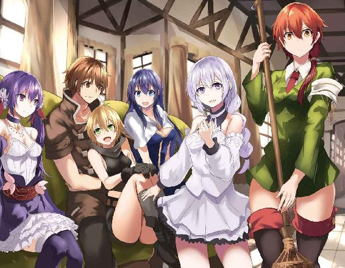
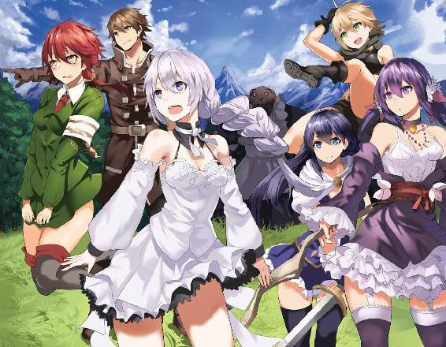
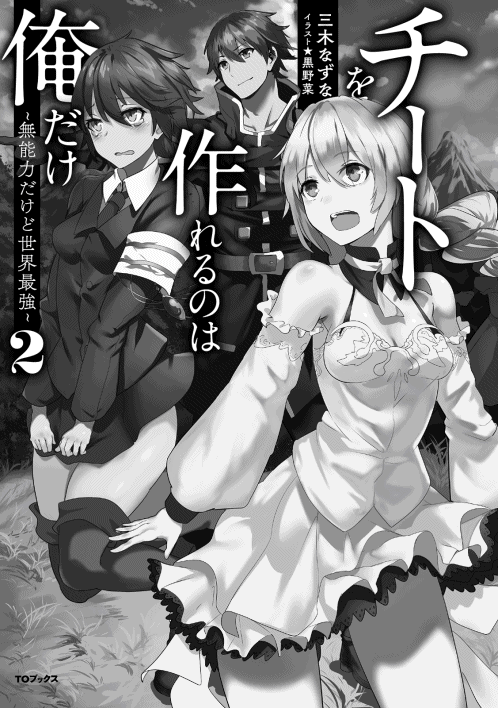
イラスト：黒野菜
デザイン：安藤竜也（むしデザイン）
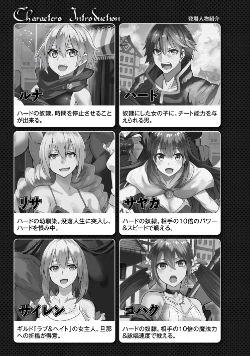
夜、リビングで一人くつろいでいた。
ローテーブルの上に置いた電書ハトが「アン♪」と男のあえぎ声をだして、手紙を届けてくれた。
手紙は二通。
一通目は不動産屋『コンの抑止力』、タイラー・ボーンからのものだ。
開いてみると中はカタログだった。家の増改築はこういうことができるよ、というカタログ。
ぱらぱらめくって、とりあえず放っとく。
エルーガの街の一件で銀貨五百枚くらいの貯金が出来た。
結構大金だけど、ローンは千枚分残っている。
増築は完済してからだ。
それに、今のマイホームの部屋は五つ。
俺が一部屋、奴隷の三人が一部屋ずつ。
まだ一部屋余ってるし、増築は当分必要ない。
カタログを置いて、もう一通の手紙を読もうとした。
差出人は......ソフトだった。
ってソフト？ ソフトから手紙!?
うそだろ、あいつの方から手紙を送ってくるなんて？ 明日は世界が滅亡するんじゃないのか!?
生唾を飲み込んで、ソフトからの手紙を読もうとした。
「ルナちゃん？ どこにいるの、ルナちゃん？」
サヤカの声が聞こえて、長い黒髪の小さな女の子が現れた。
俺の最初の奴隷、サヤカ。おとなしめで独り言を言うクセがある、『ちーと』持ちのとても可愛い奴隷。
「あっ、ハードさん。ルナちゃん見ませんでしたか？」
「ルナ？ ルナなら......」
俺は反対方向を見た。
窓の外に逆さでぴょこんとしているアホ毛二本が見えた。
ルナ・Ｇ・クレイドル。
小柄で元気な女の子で、「Ｇの意思」を受け継ぐ一族の末裔らしい。
この前、俺の奴隷になったばかりの女の子だ。
「あっ、ルナちゃんだ！ こら、こっちに来なさい！」
「やだよ、ルナはお風呂やだよ！」
「だめです！ お風呂に入って、ちゃんと体を綺麗にしないと」
サヤカは窓を開けた、ルナは超スピードで逃げたが、すぐにつかまった。
ルナも風のように早くて、残像を残すレベルだけど、サヤカの『ちーと』はそれよりも更に速かった。
あっさりつかまって、連行されていく。
「あああ、ハードくん、たすけてえ！」
手を伸ばして俺に助けを求めるルナ。
救いの手は......伸ばさなかった。
話を聞いてるとルナが風呂を嫌がって逃げていて、サヤカが無理矢理入れようとしてる。
そういう事なら、サヤカの味方をせざるを得ない。
奴隷は綺麗にしてなきゃいけない。
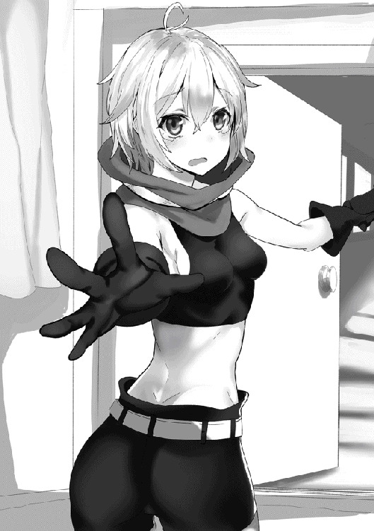
昔も今も汚い奴隷はあるけど、そんなの、ご主人様の無能が知れるってもんだ。
奴隷が綺麗であればあるほどご主人様の力と余裕が示せる、そういうもんだ。
だからサヤカに連行されるのを見送った。
「お茶です、ご主人様」
横からすぅ、とティーカップが差し出されてきた。
地面に届きそうな長いツインテールに、上品な物腰だがフランクな感じのする女の子。
コハク・サローティアーズ。
サローティアーズの王女だったが、今は俺の奴隷の一人。
「ありがとう......うん、うまい」
「ありがとうございます」
「不思議だな。コハクは元お姫様なのに、こういうこともできるんだな。いま、うちで一番家事がうまいんじゃないのか？」
「あたしもそんなに上手くないよ？ 普通にやってるだけ」
「そうなのか？」
「うん。がんばってやるけど、やっぱり家事が上手い人に来てくれるといいなあ、なんて思ってる」
「家事が上手い人か......」
次の奴隷はそういう人だったらいいな。なんて思いつつお茶を飲む。
「うぅ......髪が濡れて力がでない......」
「ハードさん、お風呂入れ直しましたので、ハードさんもどうぞ」
「着替え、用意しますね」
しばらくして、サヤカとルナが戻ってきて、コハクがバタバタと動き始めた。
ちょっと前までは想像出来なかった、奴隷達に囲まれた幸せな夜を満喫した。
☆
次の日、王都・マーキュリー。
王宮の謁見の間で、国王と向き合った。
前にあったガリガリ感はなくなって、普通体型に戻っていた。
目つきが鋭いのは相変わらずで、睨まれるとちょっとびびる。
「えっと、きょ、今日は──」
「よい、かしこまった挨拶は必要ない」
国王は手を振って止めた。
謁見の作法をほとんど知らないから、助かった。
「ありがとうございます。それで、今日はなんの用ですか？ 一人で来いって言われたから、コハクもおいてきたんですけど、いいんですか？」
そう、俺は一人で来いって言われた。
コハクは元王女で、国王の娘でもある。
一緒に連れて来なくてよかったのか？ という疑問だ。
「今日はそなたに用があるのだ。コハクはよい」
「はあ」
「要件は二つ、まず一つは──」
国王は側近に目配せした。
側近があらかじめ用意してた物を持ち出した。
装飾のついた綺麗な剣だ。
それを目の前に持ってこられた。国王と目が合って頷かれたから受け取った。
ちょっと抜いてみる。鞘の中は金属っぽい色じゃなくて、真っ赤だった。
「これは──まさか！」
「ほう、知っているのか」
「知ってますよ！ これは深紅の騎士にだけ与えられる『緋色の鍵』じゃないですか!!」
「うむ、まさにそれだ。奴隷を持つことが夢というだけあって、よく知っているな」
深紅の騎士。
それは最高のご主人様に与えられる称号だ。
そしてこの赤い剣──緋色の鍵は深紅の騎士である証なのだ！
「知っての通り、各国が深紅の騎士の位を与えなくなって久しい。なので、そなたがこの世に存在するたった一人の深紅の騎士になる」
「うわ......」
「通常騎士位は準男爵に相当し貴族として扱われるのだが、深紅の騎士はいろいろあってそれが与えられない。つまりはただの名誉職──」
国王がなんか言ってるけど、耳に入ってこなかった。
だって深紅の騎士、深紅の騎士だ！
最高に甲斐性のあるご主人様にだけ与えられる称号だ。
他の何よりも嬉しい。
「──実質平民のまま、って聞いておらぬか？」
「え？ あっ、すいません！」
「まあよい。それほど喜んでもらえるのなら、与えた甲斐があったというものだ」
「ありがとうございます！」
「さて、そなたを呼びつけたのは二つの用事があったからだ」
「一つはこれで......もう一つは？」
俺は真っ赤な装飾剣・緋色の鍵を腰に下げつつ、国王に聞きかえした。
「頼みがある、おつかいとも言うべきか」
「おつかい？」
「うむ。隣にあるプルルージュ共和国を知っているか？」
「知ってますよ！」
俺は自分でも分かるくらい眉をしかめた。
プルルージュ共和国。
田舎暮らしだった俺のところにも噂が聞こえてきた。
なにがあっても絶対に許さない、そう思ってる国だ。
☆
ウマ車の定期便の中。
ファーストクラスにのった俺と奴隷の三人。
行き先のプルルージュ共和国について、サヤカがいつも通り「どういうところですか？」って聞いてきた。
サヤカは常識人っぽい一面があるけど、同時に「こんなことも知らないのか？」っていうくらい、極端に知識が欠落してる面もある。
それはもう慣れたから、普通に説明してやった。
「プルルージュ、サローティアーズの隣にある国の名前だ。たしか国王は定期的に国民が選ぶんだっけ？」
コハクを見て、補足の説明を求める。
「国王じゃなくて、大統領って名前。プルルージュだと四年に一度の国民選挙でその大統領を選ぶの」
「民主主義の国があったんだ......てっきり全部王国だと思ってた」
なんかブツブツ言ってるサヤカ。
こいつはこんな風に、何かあるとブツブツ独り言を言うクセがある。
ルナが首をかしげていたけど、慣れてる俺とコハクはスルーした。
「それはいいんだけど、俺はプルルージュが嫌いだ」
「......そうだね、ご主人様は嫌うね。宿敵って書いて親の仇って呼ぶくらい嫌うかもね」
宿敵。
うん、しっくりくる。
その言い回しはすごくしっくりくる。
「えええ!? どうしてそんなに嫌うのハードくん？」
「十年くらい前に奴隷解放宣言をしたから」
「奴隷解放宣言？」
「奴隷は可哀想、その奴隷を解放して普通の人にしてやるって宣言だ」
「同時はすごく話題になったね」
「奴隷......」
「......解放」
サヤカとルナは互いに顔を見合わせて、それからそれぞれの手を見た。
左手の薬指にある指輪。
奴隷である証、奴隷指輪。
それを見た二人ははっとした。
「ハードさんは奴隷大好きだから」
「そりゃ嫌いにもなるよね」
うんうん、とうなずき合った。
そう、俺がプルルージュを嫌う理由はただ一つ。
奴隷解放宣言なんていうふざけた事をやったからだ。
聞く話によると、そのせいでプルルージュは奴隷の売買が禁止されている。
まったく、けしからん国だ。
「そのプルルージュの大統領に親書を渡しにいくんだね」
「そういうことだ。嫌なところだから、とっとと渡してとっとと帰ろう」
そうだ、とっとと渡してとっとと帰ろう。
奴隷のいない、奴隷そのものを否定する国になんて用はない。
ウマ車が駅に着き、客が乗り込んできた。
普通席にいっぱい乗り込んできたけど、ファーストクラスのこっちには男女が一人組乗り込んできただけだ。
こっち空いてていいなあ、と思ってると、乗り込んできた男女が俺達の横に立ち止まった。
普通に通り過ぎようとしたが、何か見つけて立ち止まった、って感じだ。
二人は俺たちを見た、俺も二人を見た。
若い男女だ、俺より一つか二つ年上、ってくらいか。
格好は冒険者風、二人とも結構できるやつっぽい雰囲気をかもし出している。
「奴隷か」
男が言った。若いのに低くて渋い声だ。
その目線はサヤカ達の奴隷指輪に注がれている。
「未だに奴隷なんて、そんなカビの生えた伝統を守ってる人間がいたとはな」
「......なんだって」
「奴隷を持つのが古くさいだと言ってるんだ。おまえ、古き良きご主人様を目指してるクチだろ？」
それがどうした。
「古き良きご主人様、そんなもの、ただ自分よりも弱いものを庇護してご満悦になってるだけのことだろ」
......。
そういう言い方をされるとむかつくな。
はたからはそう見えるかもしれないけど、そうじゃないだろ。
「それに、甘やかされた奴隷は次第につけあがる。ご主人様をご主人様とも思わなくなるか、ご主人様の威光を笠に着てやりたい放題やるかのどっちかだ。『宰相の奴隷も準貴族』ってことわざがあるくらいだからな」
「うわあ、奴隷が準貴族とか最悪ー」
女がゲラゲラわらいながら言った。
「しかし、ここは大丈夫だな。見た感じ何の能力もないし、......ふっ、Ｆランクか」
男はいつ取りだしたのか、カードを見て鼻で笑った。
カード......？ あっ！
「それ、俺のギルドカード！」
持ってるのは俺のギルドカードだった。
いつ取られたんだ？ まったく見えなかった。
「この程度の男に庇護されてる奴隷なんて、大したことないな」
「あははは、それもそうだよね」
楽しげに笑い合う二人組。
腕は立つみたいだけど、ちょっと腹がたつ。
見返してやろうか......と思った俺だが。
サヤカが先に立ち上がった。
「なんだ？」
「返してください」
「返すって何を──えっ？」
驚愕する男。
持っていた俺のギルドカードが、いつの間にかサヤカに奪われていた。
やつも早いだろうが、サヤカの『ちーと』にはかなわない。
サヤカのは相手よりも十倍速くなる能力なのだから。
それを使って、気づかれないまま奪い返した。
男の顔色が変わった。
プライドを傷つけられた、そんな顔をした。
「おまえ、何をした！」
「何かをするのはこれからだよ。ハードくん」
ルナはそう言って、俺の手をつないだ。
世界が反転して、時間が止まった。
どうするの？ って聞くよりも先にルナはペンを取り出した。
俺と手をつないだまま立ち上がって、男の顔に落書きした。
教科書の偉人の顔にする様な落書きをした。
これでにらめっこしたら超圧勝だ、ってくらいの力作。
落書きをしてから、手を離す。
時が動き出す。
「さっきは油断したが、もうそれはない──」
「きゃあ！ ちょ、ちょっと。その顔どうしたの!?」
「顔......何だ、これは！」
ウマ車の窓で自分の顔が思いっきり落書きされた事を知って、血相を変える男。
ルナは持ってるペンをぐるぐる回した、自分がやったと主張した。
「なにも見えなかった。今の一瞬でこんな落書きを......？」
そりゃ見えないだろ。時間を止めてやったんだから。
「馬鹿な......Ｆランクのヤツの奴隷がこんな！」
「何かの間違いよ。なんかズルをしてるんだ！」
ズルって、なにもしてないけどな。
「どうかしましたか？」
騒ぎを聞きつけたのか、ウマ車の車掌さんがやってきた。
「いいところにきた、こいつらが──」
「これはコハク様！ なにかありましたでしょうか？」
男が告げ口っぽい何かを言い出すよりも先に、車掌さんがビシッと背筋を伸ばして聞いてきた。
「コハク様？」
「この方はサローティアーズ王国の王女殿下、コハク・サローティアーズ様だ！」
「なっ！」
男女は言葉を失った。カッと目を見開いて、俺とコハクを交互に見比べた。
コハクは王女、ならこいつは？
ってのが、二人の顔にありありと見える。
「ちょっとしたレクリエーションだから、大丈夫よ」
「そうでしたか。本当にすみません、本来なら王女殿下にＳランクの冒険者、個室をご用意して差し上げるべきところなのですが、いろいろ手違いがありまして」
「気にしてないわ」
「Ｓランク？」
またまた目を剥く男達。
俺は目配せして、サヤカが頷いた。
ギルドカードを取り出した。
サヤカのは俺と違って、Ｓランクギルドカードなのだ。
それを見せつけられた男達はますます言葉を失った。
今度はサヤカと俺を交互に見比べた。
なんでＦランクの奴隷がＳランクなんだ!? って顔だ。
分かりやすいな、この二人。
「すいませんお客さん。ウマ車の走行中なので、席についてもらえませんか？」
車掌さんは二人に言った。
お客様に対する礼儀正しい態度だけど、コハクや俺達にするものとは、ものすごい落差があった。
それで二人はますます顔を赤くして、
「ふん！ どうせ何かズルをしたんだろ！」
「あっ、ちょ、ちょっと待ってよ！」
と、現れた時の威勢はどこへやら。
どうでもいいような捨て台詞を残して去っていった。
プルルージュ共和国首都、サウンドヒール。
駅に到着して、俺達はウマ車から降りた。
「うわー......すっごい人の数」
「うん、すごいね......」
広大な駅ロビー、行き交う人々の数に、ルナとサヤカが圧倒された。
流石首都、人の数が半端ない。
下手したらサローティアーズ王国の首都よりも賑わってないか？ ここ。
それよりも。
「やたらと......あっちこっちでみんな歌ってるな。ライブ？」
「プルルージュはアイドルの国だからね」
コハクが平然と答えた。
「アイドルの国？」
「ご主人様は来た事ないんだっけ？ この国は女神レディ・スパイクの加護があるから、みんな歌がうまいし、歌で色々決めちゃうんだよ」
「色々って、例えば？」
「一番代表的なのは大統領かな」
「......は？」
「大統領を......ライブで？」
俺と同じように、サヤカも目を丸くした。
「そうだよ。四年に一回国民総選挙をやって大統領をきめるの」
「そんなんでいいのか！」
「女神の加護を受けてるからね。それにアイドルって言えば総選挙、総選挙って言えば大統領じゃない？」
「それ、何か間違ってると思います......」
「あっ、ちょうど分かりやすいやつがいる。ご主人様、あれ見て」
「ん？」
コハクが指さした先を見た。他の奴隷達もそっちに視線を向けた。
視線の先に何かがぶつかったのか、壁が半分くらい崩れているところがあった。
そこに一人の男がやってきた。
男はマイクを持って、伸びやかに歌い出した。
歌って、踊って。
まるでアイドルの様に歌った。
まわりに人が集まってきた......と思った次の瞬間。
なんと壁が修復されはじめたのだ！
「なんだあれは!?」
「だから女神の加護を受けてるって言ったじゃない。このプルルージュ共和国は女神レディの加護があるから、歌に魔力が宿るんだ」
「......なるほど、これなら総選挙で大統領を決めるのも納得できる」
「そうかなぁ......アイドル総選挙ってそう言うものじゃないと思うけど。そのうち握手券とかでてくるんじゃないかな......」
俺は納得したが、サヤカは例によってブツブツ言い始めていた。
それはいつもの事なので、軽く流すことにした。
☆
サウンドヒールにある大統領府。
サローティアーズからの使者として親書を持ってきた。
俺は身分を明かして要件を伝えた。
出迎えたマネージャはそれを聞いて、困った顔をした。
「すると大統領と会わなきゃだめですね」
「そうだ」
「こまったなあ......大統領、いまサウンドヒールにいないんですよ」
「いない？ どこに行ったんだ？」
「ツアー」
「ツアー？」
ちょっと耳をうたがった。
ツアーって、ツアー？
あのツアーの事か？
「そう、大統領が毎年やる全国ツアーの真っ最中だから、それにつきっきりで他の街に行ってるんだ」
「そ、それでいつ戻ってくるんだ？」
「ツアーは始まったばかりだから、しばらくは戻らないんじゃないかな？」
えー......。
それでいいのか？ それでこの国は持つのか？
「大統領のライブは大事なことだよ。国民総選挙に選ばれたトップアイドルだから、女神に歌を捧げる、っていう意味合いもあるし」
「あっ、神事......みたいなものなんだ」
サヤカが妙に納得していた。
なるほど、女神がらみで大事なことなのか。それじゃしょうがないな。
しょうがないのはしょうがないけど、こっちも親書を渡さないとどうしようもない。
どうしようかな？
コハクがマネージャに聞く。
「ツアーの日程を教えてくれる？ こっちで勝手に追いかけるから」
「分かりました。こちらがツアーの日程になります」
マネージャーからパンフレットを受け取って、俺達は大統領府を後にした。
☆
サウンドヒールを出て、ツアーの最初の街に向かう。
ウマ車は満員で乗れなかった。
大統領のツアーの遠征組でめちゃくちゃ満員だった。
仕方なく、俺達は歩いて向かうことにした。
「面白い国だな」
歩きながら、つぶやく俺。
「奴隷解放宣言をした国だから、ちょっと頭がアレな国だって思ってたけど、話を聞いてくと段々面白く感じてくる」
「うん、面白いよ。この国にいると住民だけじゃなくて、外から来た人間でも歌に魔力を持つようになるからね」
「ルナでも？」
「もちろん」
コハクが頷き、ルナは目を輝かせた。
ルナは歌い出した。伴奏とかなくて味気なかったが、そこそこうまかった。
一曲が終わった後、ルナはちょっと残念そうな顔をする。
「魔力、持ってた？」
「持ってたよ、ほら」
コハクが背後を指した。
俺達が歩いてきた道。ルナが歌ってきた道中だけ、綺麗に花が咲いていた。
歌う前と歌い終わった後は蕾のままだった。
「わああああ！」
「ルナルナは歌の才能があるかも知れないね」
「本当!?」
目を輝かせるルナ。
「コハクはどうなんだ？」
「あたしはダメだよ、ご主人様。前に来たとき試したけど、大変な事になったから」
「大変な事？」
「窓ガラスが全部割れて、絨毯にめちゃくちゃ毛玉がたったんだ」
「それは大変だ」
その時の光景を想像した、歌で窓ガラスが割れて、絨毯に毛玉が次々と出来ていくその光景を。
だいぶすごいな。
「なんか歌う手みたい」
「そこまではひどくないよ」
抗議するコハク。
歌う手、手の形をした、歌がメチャクチャ下手な魔物だ。
たしかにそこまでひどくないだろう、もし、そんなにひどかったら、ちょっとご主人様としてもフォロー出来ないかもしれん。
「あっ」
「どうした？ ルナ」
「あれ......」
立ち止まって指さすルナ。
その先に魔物があった。
「あれは......フロの歌う手だね」
「知ってるのか、コハク？」
俺も立ち止まってコハクをみた。
「うん。見たとおりだよご主人様。フロに入ってる歌う手、だからフロの歌う手」
「なるほど」
「プロの歌い手、だよね」
サヤカがまた聞き取れないブツブツを言った。
フロに入ってる歌う手が口を開けた。
人間サイズの手の平についてる手を開けた。
──まずい、あの破壊ボイスが来る！
と、思っていたら、
♪
めちゃくちゃ上手かった。
歌う手は破壊的な歌声だったけど、フロの歌う手の歌はメチャクチャ上手かった。
しっとりとしたバラード、聞いてるだけで落ち着いてくる。
「いい歌だな」
「はい......」
落ち着いて、うとうとしてきた。
まるで、ぬるま湯に浸かっているかのような、そんな心地よさを感じた。
ドサッ！ ドサッ！ ドサッ！
次々と物音がした。
みると、三人の奴隷が倒れていた。
地面に倒れて、健やかに寝息を立てている。
眠いよな、こんなに穏やかな歌を聴いてると眠くなるよな。
俺もちょっと寝よう。
そう思って全身に脱力した──その瞬間。
目に入った風呂の歌う手の顔にぎょっとした。
そいつはにやりと悪い表情をしていた。
まずい、これはまずい。
絶対に罠だ、そいつの罠に違いない。
寝たらヤバイ......でも、もうどうしようもなく眠い。
俺は意識を手放す前に、必死に奴隷に手を伸ばした。
☆
目を覚ますと、世界が反転していた。
一瞬何が起きたのか分からなくて、きょろきょろとまわりをみて様子を把握する。
奴隷達は寝てる。俺はルナと手をつないでる。
ルナと手をつないで、時間を止めた。
遠くにはフロの歌う手の姿が見える、悪そうな顔はそのままだ。
ああ。
罠にはまった。と気づいて、必死にルナに手を伸ばしたのが間に合ったんだ。
フロの歌う手の歌は上手いけど、催眠効果があったみたいだ。
それで寝かされた俺は、時間を止めて、止めた時間の中で催眠効果が切れた、ってことか。
やべえ......とっさに時間を止めなかったらやられてたぞ。
「う、ん......」
ルナが目を覚ました。
「起きたか」
「ハードくん......？ どうしたの？」
「みんなで魔物の歌に眠らされたんだ」
「魔物の......あ」
俺と同じようにまわりをみて、すぐに状況を把握したルナ。
「あ、危ない所だったね......」
「まったくだ」
「でも、ハードくんすごい」
「うん？」
「とっさにあたしと手をつないだんでしょ。時間を止めるために。あたしだったら全然そんなの思いつかなかったと思う」
「必死だったからな」
あの瞬間、このままじゃやられる！ ってなって、必死に頭が回転したんだ。
普段だとそうは行かない。
「それよりも、まずはあいつを倒そう」
「うん！ ルナ頑張る！」
動き出すと歌声が怖いから、俺はルナと手をつないだまま、止まった時間の中でフロの歌う手を倒した。
サウンドヒールから半日くらい歩いた先にある、パッションの街。
この街もかなり賑わっていた。
「普段と違うわね、ここ」
街に入った瞬間、コハクが言った。
「なんでそう思うんだ？」
「街に宿屋やお土産屋とか、外国の人向けの施設が多いの。それに」
「それに？」
「みんな同じＴシャツを着てる」
それはコハクの言うとおりだった。
行き交う人々、あっちこっちでグループを作って固まってる人々。
それらの大半が、同じデザインのＴシャツを着ている。
全員が一人の女の人をプリントしたＴシャツを着てる。
「多分、ライブを見に来た人達だね」
「なるほど」
ライブツアー目当てに来た人がほとんどで、この街の住民が少ないってことか。
大統領にまでなった程の総選挙を勝ち抜いたアイドルのツアー中なら、当たり前の光景か。
さて、その大統領に会いに行くか。
☆
会えなかった。
大統領はライブ直前のリハーサル中で、だれとも会わないらしい。
サローティアーズ王国の使者で、実は王女も来てるぞって言ったけど、それでも会ってくれなかった。
「ライブの開催は世界よりも重い」
というスタッフの言葉で、俺達は引き下がるしかなかった。
ライブ会場の外、俺は奴隷達と向き合った。
「どうしよっか」
「こうなりゃ仕方ない。ライブが終わってから、もう一度会いに行くしかないだろ」
「あ、あのハードくん」
ルナが思い切った様子で切り出してきた。
「ルナ、さっきすっごく気になる人を見かけたの。道ばたで歌ってた人なんだけど、すっごい歌が上手かったんだ」
「へえ」
そう、サウンドヒールにしても、このパッションにしても、あっちこっちで人が歌ってる。路上ライブをやってる。
半端ない数と頻度だ。
散歩歩けばライブに当たる──なんてことわざが出来そうな度合いである。
「行ってきていい、かな？」
「いいぞ」
「ハードさん、実はわたしも」
「あたしもちょっと気になる娘が」
サヤカもコハクもそう言ってきた。
ちょっとびっくりだけど、分からなくはない。
俺は少し考えて、三人に言った。
「じゃあこうしよう、大統領のライブが終わるまで別行動。みんなそれぞれ気になる人の路上ライブを楽しんでくる。って事でいいか？」
サヤカも、コハクも、ルナも。
奴隷達は一斉にハイテンションで頷いた。
三人はそれぞれ散っていった。
一人になった俺は適当にぶらぶら歩き出した。
気になる路上ライブはないけど、気に入るのを探して回るのもいいかもしれない。
そう思って歩いて回った。
みんな結構上手かった。
上は老人から下は子供まで、男も女も関係ない、あっちこっちで誰かしらが歌っていた。
みんな歌が上手い、これがあっちこっちにあるのなら──と。
また少しこの国の事を分かったような気がした。
中には何人がとんでもなく上手い人もいた。
その人達は決まって、歌ってる最中は体から濃い魔力が見える程の強い魔力を出している。
女神レディの加護でそうなってるってコハクが言ってたっけ。
なるほどな。
ふと、俺は立ち止まった。
大統領のライブ会場からだいぶ離れた街外れ。
そろそろ路上ライブやってる人も少なくなってきた場所。
そこで彼女が歌っていた。
年は俺よりもちょっと上ってところか。
これまでみてきた路上ライブをやってるアイドルは、みんなそれなりに派手な人目を引く格好をしてたけど、彼女はまったく別。
長い髪を高いポジションでポニーテールにしている以外、きわめて普通な格好だ。
俺が立ち止まるまで誰も聞いてないけど、その格好で歌ってた。
結構......いや、かなり。
というか、すごくいい歌じゃないか？
俺は完全に脚を止めて彼女の歌を聴いた。
うん、いい歌だ。
他のアイドルと違って身体から魔力みたいなのは出てないけど、今まで聞いてきた中で一番いい歌だ。
いつまでも聞いていたい、そんな歌。
歌う彼女、聞く俺。
二人の間に二人組の男が通り過ぎていった。
男達はちらっと彼女を見て、鼻をならして笑った。
「へったくそだな。へたくそすぎて女神レディの加護ゼロだぞ」
「一人しか聞いてない上に、こんな街外れでやってるヤツなんてたかが知れてるし」
二人は笑うだけ笑ってから、そのまま去っていった。
腹がたつ、言いたい放題しやがって──
──こいつらなんて無視だ、今は彼女の歌を聴きたい。
二つの感情がせめぎ合って、俺は後者を取った。
彼女の歌を聞き続けた。
その間もまた人が通り過ぎて、鼻で笑った。
......他の誰が言おうと、俺は彼女の歌が好きだね！
☆
「あ、ありがとう......」
歌い終わった彼女は俺にお礼を言った。
「最後まで聞いてくれて、ありがとう」
「あっ、もう終わりなのか？」
「......歌える曲、もう全部歌い終えちゃったから」
「そうか......」
それは残念。
もっと聞きたかったのにな。
「あっ、そうだ。最初の頃の曲は？ 俺、途中からしか聞いてないんだ。最初の頃の曲歌ってくれる？」
「えっと......」
彼女は難色を示した。
「だめか」
「うん！ そうじゃない！ そうじゃなくて......あの......」
「うん？」
「わたし、歌い出すと夢中になるから。どこから聞かれてるのか分からなくて」
そうなのか！
でも分かるかもしれない。
すっごく夢中に歌ってたもんな。
「じゃあさ、最初からもう一度。全部聞かせてくれる？」
「聞いてくれるの!?」
「うん、聞かせて」
「──はい！」
彼女は大喜びして、喉の調子を整えて、また歌い出した。
最初の頃の曲、初めて聞く曲。
うん、これもいい。
というか全部いいな、彼女の歌は。
「おい！ もうやめろ！」
ふと、邪魔が入った。
チンピラっぽい男が彼女に詰め寄って、マイクを持ってる腕をつかんだ。
「きゃっ！ な、何をするの？」
「そのへたくそな歌をやめろって言ってるんだよ。女神レディの加護も受けられねえようなへったくそな曲、こんな街中で歌われちゃ迷惑なんだよ」
「ごめんなさい、ごめんなさい。それは分かってます。でも......」
彼女は俺をちらっと見た。
「聞いてくれてる人がいるから、今だけ許して──」
「はあ？ 俺は言ったよな、今すぐそのへたくそな歌をやめろって」
「うぅ......」
......。
むかつくなこいつ。
腹がたつ、メチャクチャ腹がたつ。
俺は拳を握り締めて、一歩踏み出した。
「ハードさん」
「ご主人様」
背後から、静かに俺を呼ぶ声が聞こえた。
振り向いて、ちょっと驚いた。
いつの間にやってきたのか、サヤカとコハクの二人がそこに立っていた。
二人は静かな目で俺を見つめてる。
左手薬指の指輪が夕日に反射して光っている。
わたしたちに任せて。
そう言われたような気がした。主張された様な気がした。
「......コハク、あいつを排除しろ」
「はい」
コハクは一歩前に進み出た。
手をかざして、魔法を詠唱する。
「......え？」
「どうした」
「ううん、何でもない。アイスバインド」
何故か一瞬だけびっくりしたコハクは、氷系の拘束魔法を使って、難癖つけてる男を縛りあげた。
☆
男を排除して、再び路上ライブが始まった。
「いい歌だろ」
俺の横に並ぶ二人に言った。
「うん、すごくいい歌......」
サヤカはうっとりした表情で答えた。
サヤカには分かるか。
「うん、すっごくいい歌。それに魔力も桁外れに大きい。こんな人が埋もれてるなんて信じられない」
「魔力？ 彼女のことか？」
「うん」
コハクは頷く。
「さっき、『ちーと』の十倍に対象を二人から選んだ。もし男が魔力ゼロだったときに彼女も一応」
「なるほど」
そういうことが何回あったもんな。
「それで分かったの、彼女にものすごい魔力があるって」
「ものすごいって、どれくらいだ？」
「あたしが知ってる中で一番」
コハクがさらっと言った。
え？ 知ってるなかで一番？
「モンスターとかよりも？」
「そう」
「......ブラックドラゴンとかよりも？」
「うん」
はっきりと頷いたコハク。
ばかな、信じられない。
改めて歌ってる彼女をみた。
俺には魔力は見えない。
今まで難癖をつけた男達の言葉を思い出した。
全員魔力がない、女神レディの加護がないって言ってた。
それが......最高だって？
「なんかの間違いじゃないのか？ 魔力ゼロとかみんな言ってたぞ」
「あの、ハードさん。もしかして......超音波みたいなもの、なのかも？」
「ちょうおんぱ？」
どういう事だ、とサヤカをみる。
「その、人間が聞こえる音には範囲があって、あまりにも音が大きすぎると逆に聞こえなくなってしまうことがあるの。紫外線とかもそういう感じ」
「ちょうおんぱ......しがいせん......」
「この人も、魔力が大きすぎるから逆に見えないんじゃないですか？ それで魔力を十倍にする『ちーと』をもつコハクさんだけが分かった」
「......高いのは間違いないか？」
コハクは無言で魔法を使った。
夕日にむかって、千以上の氷の矢が一斉に飛んで行った。
いままでに見た事のない規模だ。
「彼女を対象に魔法を打って──外してみた」
「すごいな......魔力が高いのは確かだな」
改めて彼女を見る、歌を聴く。
他人には分からない、素晴しい歌に超絶高い魔力。
俺だけが分かる、彼女のすばらしさ。
もっともっと、彼女の事が知りたい。
そう思ったのだった。
「イノリ・ミラクルって言います」
「俺はハード、ハード・クワーティー」
「サヤカって言います」
「コハク」
「ルナはルナだよー」
一段落したところで、互いに自己紹介をする。
あの、ものすごく上手い歌を歌う、とんでもない魔力を体に秘めてる女の名前はイノリっていうんだ。
「皆さん、最後まで聞いてくれてありがとうございました」
「いい歌だった」
俺が言うと、奴隷達は揃って頷いた。
「すっごい！ アイドル歌手みたいでした！」
「あんなにうまい歌を聴いたのは、はじめてかも」
「ルナ、すっごい元気が出たよ。ホラこんなに！」
ルナのアホ毛がビンビンになっていた。
まっすぐ伸びて、バネのようにミョンミョン跳ねてる。
お前のそれはいったいなんなんだ？
「ありがとう、そんな事を言われたのはじめてです。ここで歌うようになって結構経ちますけど、足を止めてくれる人ほとんどいないから」
彼女のライブの途中、通りすがった通行人達の事を思い出した。
全員が例外なく、彼女をけなしつつ去っていった。
「また、聞きに来て下さい」
「そうする。いつもここにいるのか？」
「はい」
イノリは頷いて、物陰にある枕を取り出した──枕!?
「ずっとここにいます」
「ね、ねえハードさん。わたし、その『ずっと』っていうのが怖いです......」
サヤカが言う。奇遇だな、俺も今おいおいって思ってたところだ。
コハクをみる。コハクも似たような表情をしてた。
唯一、俺達の中で驚いてないのが一人いた。
ルナだ。
「イノリン、ここで寝てるの？」
「うん」
「その枕だけで？」
「うん」
「それはあまりよくないと思うよ」
「そうかな」
「うん。だってほら、夜になってからだいぶ寒くなったし。せめて段々ボールで寝床を作らなきゃ。知ってる？ 段々ボールって意外と暖かいんだよ」
「野宿のノウハウを教えるのやめー」
ルナに突っ込んだ。
彼女はちょっと前まで屋根の上とか軒下とか、橋の裏とかで野宿してたらしい。
イノリが野宿してるって聞いて、仲間を見つけたような気分なんだろう。
そんなルナを止めて、改めてイノリに聞く。
「なんで野宿なんかしてるんだ？ 家はないのか？」
「家ならあります。両親もいます」
「じゃあなんで？ 遠いのか？」
「ううん、ここから歩いて五分くらいのところに」
五分!?
そんなに近いところに家があるのに野宿をしてるのか？
しかも......毎日って言ったぞ!?
あっ......もしかして......。
アイドルとか歌とかが一番の価値観な国だ。
歌っても魔力がなくて、女神の加護がないとされる彼女は親からいびられているとか──。
「メンドクサイの」
「......へ？」
「帰るのが面倒臭くて。ここにいれば起きたら歌う、歌ったら寝る、ができるから」
「えっと......歌うためにここまで移動するのが面倒臭くて、ここで野宿しっぱなしってことか？」
「うん！」
「うんじゃないが！」
思わず盛大に突っ込んでしまった俺。声まで裏返った。
一瞬可哀想な子かも知れないと思ったイノリは、頭が可哀想な子だった。
☆
あんなところに置いておくのは気が引けたから、彼女を家まで送ってやることにした。
イノリはサヤカが背負っている。
面倒くさがりだが身体能力は人並みのようで、十倍『ちーと』のサヤカは楽々背負えた。
「そう言えば、お前は自分の事を知ってるのか？」
「自分のこと？」
「魔力」
「ああ......」
背負われたままのイノリは得心した。
心当たりはあるようだ。
「うん、わたしの魔力は他の人とちょっと違うみたい。多分ハーフだからだって、お父さんが言ってた」
「ハーフ？」
「うん、お母さんは人間だけど、お父さんは違うんだ」
「そうなのか」
それにしては見た目が普通だな。
なんのハーフなんだろう。
耳が尖ってないからエルフじゃない、オゴオゴ♪ 言わないからオークでもない。
うーん、見た目からじゃ何のハーフなのかまったく分からないな。
そうこうしてるうちに、彼女の家についた。
「ここよ」
やってきたのは普通の建物だった。
街外れにある一戸建て。
屋根にでっかいマイクのオブジェクトがささってるけど、そういう音楽関係のものは他の建物にもあるから、この街──多分この国じゃ普通なほうだ。
そんな普通な建物にやってきた。
イノリを連れたまま、ドアをノックする。
「誰だ」
男の、ものすごく渋い声が中から聞こえてきた。
渋いだけじゃなくて、聞いてるだけで耳が幸せに感じる程の美声。
「ただいま、お父さん」
「イノリ？ 珍しいな、今年はもう帰らないのかと思ったぞ」
口を開くイノリの父親、かなりのイケボだ。
いや今年はもう帰らないって、そりゃ徒歩五分のところで近いけど、いいのか？ 娘がそんなんで。
そう苦笑いしてるうちに、ドアがゆっくり開いた。
「「「「！！！」」」」
俺と三人の奴隷が、一斉にびっくりして身構えた。
なんと、ドアを開けて出てきたのはでっかい手だった。
人間サイズの手、手の平におっきい口。
魔物、歌う手だ。
「サヤカ、イノリを背負ったまま下がれ。コハク、一気にやれ」
「はい！」
「任せて！」
奴隷の二人はすぐ様に動いた。
サヤカは大きく飛び下がって、コハクは魔法の詠唱をはじめた。
「まって、お父さんなの」
「......え」
イノリが止めた、俺達は一斉に止まった。
オトウサン？
オトウサンってなに？
あの「お父さん」の事？
目の前の歌う手がお父さん？
「わたし、歌う手と人間のハーフなの」
......。
............。
..................。
「「「「えええええ！」」」」
☆
ミラクル家のリビング、俺達はイノリ一家と向き合った。
ミラクルは普通に座ってる。
家長の席に歌う手が座ってて、その横に中年の女の人が寄り添ってる。
「シャドー・ミラクルだ。こっちが妻だ」
シャドーと名乗った歌う手が、自分と奥さんを紹介した。
でっかい手の親指に寄り添う奥さん、その奥さんの頭を人差し指が撫でている。
すごい光景だ。
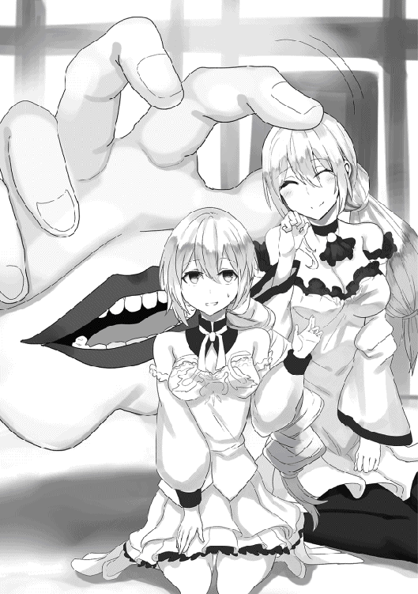
「娘が世話になったみたいだな。礼を言う」
「あ、ああ。いや、大した事は」
「こいつは昔からそうでな、歌うこと以外には無頓着なんだ」
「無頓着にもほどがある」
「まったく誰に似たんだか......」
俺のツッコミにシャドーはため息交じりに答えた。
そんな父親の嘆きなど気にもしていないのか、リビングの床で丸まって、イノリはすーすーと寝息を立てはじめた。
彼女の両親はそれを見て複雑な顔をした。
「このまま寝かせててもいいんですか？」
「いいんだ。どうせ起きたらまた歌いに出かける。部屋に運ぶと、家を出る前にあっちこっちぶつけて怪我をする」
「どんだけ歌う以外ダメダメなんですか！」
「最高記録は出かけるまでにタンスに小指を三回ぶつけた」
「とことんだめなんですね！」
「まあ、それでも歌ってるのは俺からしちゃ嬉しいことだ。ああ、こいつは俺の娘だなあ、って」
シャドーは仕方なさそうに娘をみた。
語気はすっかり柔らかくなって、「やれやれしょうがねえな」って感じになってる。
娘の事をむしろ誇りに思ってる、そんな感じだ。
「こんな娘だけど、たまに歌を聴きに行ってやってくれると嬉しい」
そう言って、シャドーは頭（？）をさげた。
隣に寄り添う奥さんも一緒に頭を下げた。
☆
ミラクル家を出て、大統領のライブ会場に向かう。
そろそろライブが終わる時間だ。
イノリの事も気になるが、今はまず大統領と会わなきゃいけない。
会って、国王から預かってきた親書を渡さないといけない
「びっくりしました。まさか歌い手......じゃなくて、歌う手さんが出てくるなんて」
「あたしも。歌う手と人間のハーフなんて初めて聞いた。魔物と人間のハーフはほとんどありえないから」
「うん。ルナもクレーマーと人間のハーフなら知ってるけど、歌う手は始めて見た」
「クレーマー......Ｇ。ルナちゃん、ハーフじゃないよね」
「ふぇ？」
コンサート会場に急行する最中も、奴隷達はイノリ一家の話題で持ちきりだった。
それほど衝撃的な光景だった。
用事が終わったら明日またイノリに会いに行こう。
いろいろと話を聞いてみよう。
そう思って、ライブ会場に急行した。
ライブ会場に近づくにつれ、人が増えてきた。
人が増えてるだけじゃない。
なんだか、ものすごく慌ただしくなってる。
「なんかあったのか......おい、どうしたんだ？」
俺は近くを通り掛かった、なんかすごく慌ててる男を捕まえて聞いた。
「どうしたんだじゃない、大変な事になったぞ」
「大変な事？ なにがあった？」
「大統領がマイクをステージに置いてったんだよ」
「マイクをステージに？ それって......」
奴隷達をみた、コハクが静かに......深刻そうな顔でうなずいた。
「引退するんだよ、大統領」
「えええ？」
「こうしちゃいられない、すぐに次の総選挙になる。うちの事務所の子にしらせなきゃ」
男はそう言って、お急ぎで去っていった。
大統領──トップアイドルの電撃引退。
そのニュースは、この国に激震をもたらしたのだった。
パッションの街だけじゃない、プルルージュ共和国は大混乱に陥った。
大統領である、トップアイドルの電撃引退。
いきなりの事に国は揺れた。
任務の事もあるし、俺は、なんとかその大統領に会えないかと手を尽くした。
☆
パッションの街の公認ギルド、『情熱よりも熱く』の中。
待機してた俺の元に、コハクが戻ってきた。
「どうだ？ コハク」
「だめ。全然会えない。お父様の使者って言っても、サローティアーズの王女だって言っても全然会えなかった。今すっごく混乱してる」
「そうか......」
「それに、どうやら行方不明になってるらしいんだ。ライブが終わった直後から姿をくらましてるみたい」
「消息がまったく分からないのか」
頷くコハク。
「それは......困ったな」
「というか、今会ってもしょうがないみたい」
「どういう事なんだ？」
「ご主人様はお父様から親書を預かった。プルルージュの大統領に渡すようにって」
俺は頷いた。
それが今回の任務だ。
「もう既に新しい大統領を決めるための総選挙の準備を始めてるらしいんだ」
「早いな！ ライブで引退表明したばっかりじゃないのか？」
これにはびっくりした。
ライブでそれを発表してからまだ数時間しかたってない、いくら何でも早すぎ......って思ったけど。
「そういう国なんだ。アイドル引退──女神レディの加護を自ら捨てた人間に用はないんだよ」
「なるほど......」
分かりやすいような、薄情なような......。
俺は考えた。
この状況で、どうすればいいのかを。
大統領に親書を渡すのが任務。
その大統領はもういなくて、国は混乱してる。
一回戻った方がいいのか？ って思った
「アン♪」
離れたところから男のあえぎ声がした。
見ると、カウンターの向こうで、このギルドのマスターが電書ハトから手紙を受け取っていた。
名前をオールド・ブルーという優男は手紙を見て、俺に話しかけた。
「ハードさん、ちょっといいですか？」
「なんだ？」
「あなたにクエストの依頼です」
「俺に？」
首をかしげた。
クエストの依頼って、しかも名指しで？
コハクを見た。そういうことはあるのかって目で、
「たまにあるんだ」
「そうなのか」
「それに......このタイミングだと多分」
「多分？」
そういうことなんだ？ って聞こうとしたら、オールドが先に答えた。
「依頼主はサローティアーズの国王ですね」
「国王が？」
「内容は──総選挙を見守って、新しい大統領が誕生したら誰よりも先に会って、親書を渡すこと、です」
「なるほど」
俺がさっき「どうするか」って考えてた事に対する答えが向こうからやってきた。
大統領がいなくて親書を渡せない、ならば新しい大統領が誕生するのを待って渡せばいい。
なるほどな。
「注意事項があります」
「注意事項？」
「誕生した後、誰よりも早く、ってありますね」
誰よりも早く......なんか理由があるのだろうか？
「しかもこれ......ＳＳＳランク指定ですよ!?」
「なに!?」
それを聞いた瞬間、「そうは言っても別に最初じゃなくてもいいんだろ？」って気軽に構えてた気分が一気に吹っ飛んだ。
ＳＳＳランク。
それは、かつてのコハクの依頼と同じような国の存亡に関わりかねない、そんなランクの依頼だった。
☆
公認ギルド経由のＳＳＳランクの依頼で大事になったけど、火急の事態じゃない。
総選挙が終わるどころか始まってもいないんだから、今の俺に出来ることはない。
次の日、俺はコハクと一緒に街に出た。
街はざわざわしていた。昨日との雰囲気がまるで違う。
「浮き足立ってるね、みんな」
「そう見えるか？」
「うん、だれもが何か狙ってる、そんな顔をしてる」
フランクな口調だが、元王女だけあって、俺の奴隷の中で一番洞察力に長けてるのがこのコハクだ。
彼女が言うのだから、きっとそうなんだろう。
「そう言えば聞いてないけど、総選挙って何をどうやるんだ？」
「ライブバトルをして、投票で決めるの」
「ライブバトル？」
「うん。街ごとにライブバトルをして、まずは街ごとの代表者を選び出して、それが出そろったら、代表者だけで同じようにライブバトルして、また投票で選ぶ」
「つまり予選と本選があるってわけか」
「そうだね」
「......」
「ご主人様、何を考えてるの？」
「クエストを確実に遂行できる方法を」
「確実に？」
「大統領が決まった後、誰よりも早く会わなきゃいけないんだろ？」
「うん。注意事項でそう言われたし、ＳＳＳランク指定されたから、それが一番重要、って事になるね」
「それをどうしたら確実に出来るかって思って」
「決まった瞬間にルナの『ちーと』で会いに行けばいいんじゃないかな」
コハクが提案する。
その方法はアリかも知れない。
決まった瞬間に新しい大統領がどこにいるのか分からないけど、ルナの『ちーと』で時間を止めてゆっくり、しらみつぶしに探せば問題はない。
問題はないけど、もっと確実な方法はないのか？
「例えば......だれかアイドルを立てて協力するとか」
「え？」
「アイドルを立てて総選挙の間ずっと一緒にいれば、その人が最後まで勝てば大統領になった後に最初にあうのは簡単だろ」
「それはそうだけど......勝つのは簡単じゃないよ？ ご主人様は心当たりがあるの？」
「一つだけ」
あると言えば......ある。
☆
街外れにやってきた。
昨日とまったく同じ場所でイノリが歌っていた。
相変わらずほとんどだれも聞いてなくて、イノリはただ歌っているだけ。
歌はいい、充分くらい素晴しい。
が、通り掛かる人はいても脚を止める人はいない。
だれもが腹で笑ったり、見下したりしている。
プルルージュでの価値観に従って、歌に魔力がないイノリのそれは聞くに値しない、という評価だ。
俺とコハクは聞き入った。
俺の隣でコハクがうとうとしだした。
つかれてるんだろうか。
昨日の大統領引退の知らせを聞いた後、コハクはずっと働きっぱなしだ。
それでつかれてるんだろうな。
うとうとするコハクは、やがて本格的に眠りだした。
俺に寄りかかって熟睡してしまう。
一晩中働かせたし、ねぎらいの意味合いも込めて、彼女の肩を抱いて、ゆっくりとその場に座り込むようにした。
俺の肩に寄りかかって眠らせた。
俺はというとイノリの歌を聴き続けた。
彼女の素晴しい歌を聴き続けた。
すると、俺まで眠くなってきた。
イノリの歌を聴いてるうちに、俺まで寝てしまったのだった。
☆
起きると、イノリが目の前にいて俺をみつめていた。
「起きた？」
「あ、ああ......寝てしまったのか、俺」
「うん」
「うわ......」
なんか、すっげえもったいない。
イノリの歌を聴いて寝てしまうなんてもったいなさすぎる。
あんなにいい歌なのに、寝てしまうなんて。
俺もつかれてるのかな。
と思ったら、そうじゃなかった。
「ごめんね」
「え？」
「昔からそうなの。わたしの歌を聴くと、たまに寝てしまう人がいるの。通りかかっただけなのに、急に意識をなくしたように寝てしまう人が」
「そうなのか？」
頷くイノリ、申し訳ない顔をしている。
急に意識をなくしたようにって......どういうことだ？
「多分、ハーフだから」
横からコハクが言ってきた。
どうやら俺よりも先に起きてたらしい。
「ハーフだから？」
「フロの歌う手」
「あっ」
ちょっと前に倒した魔物の事を思い出した。
フロの歌う手、そいつの歌は眠りを誘う効果がある。
「歌う手の上級種は歌に状態異常の効果があるんだ。だから多分、彼女も」
「なるほど」
魔力はでないけど、眠らせる効果は遺伝で受け継いでる訳か。
すごい能力だな、って思ったが、イノリは悲しそうな顔をした。
「やっぱり、わたしの歌が退屈だからかな？」
「え？」
「退屈だからみんな寝ちゃうのかな。......わたしの歌にも魔力があったらいいのに」
「イノリ......」
「歌に魔力があったら、もっと歌がうまかったら、いろんな人に聞いてもらえるのに」
「この国じゃ、魔力がない歌は聴いてもらえないもんね」
コハクが複雑そうな顔で言った。
俺と同じく、コハクもイノリの歌をいい歌だと思ってる。
一方でこの国ではうまいだけじゃダメだ、という事が分かってるからこその複雑な顔なんだ。
「うん、もっとうまくなるように頑張らなきゃ」
イノリは言った。
力強く宣言するように言い切った。
「......もっと、多くの人に聞いてもらいたいか？」
「え？」
「どうなんだ？」
イノリに聞いた。
彼女はちょっとびっくりした後に、まっすぐ俺を見つめ返した。
「うん！」
「そのための方法、普通じゃないけど方法があるって言ったらどうする？」
「ご主人様？」
驚くコハク。
彼女に手をかざして止めて、イノリをまっすぐみた。
俺には確信があった。
サヤカ、コハク、ルナ。
三人をみてきて、ある種の確信を持っていた。
イノリは即答した。
迷いのない目で俺を見つめて。
「何でもする」
「じゃあこれを」
俺はポケットから指輪を取り出した。
自宅の部屋は四つ、そのために用意してた四つ目の指輪。
奴隷の指輪。
「俺の奴隷になれば、それがかなう」
「本当に？」
「ああ」
はっきり頷く。
自分でもひどいと思う。
イノリにしてるのは、まるで悪魔のささやきそのものだ。
だが、確信があるんだからしょうがない。
今までの奴隷達のように。
『ちーと』をもったイノリなら、きっと。
そんな確信があった。
その目でイノリを見つめた。
イノリはしばらく俺を見つめた後、指輪を受け取った。
「もっと聞いてもらえるのなら」
そう言って、躊躇なく左手の薬指にはめた。
直後、指輪は光って──彼女は気を失って崩れ落ちる。
今までの三人と同じ現象。
イノリも『ちーと』を手に入れるだろう。
しかも、歌に関するちーとなんだろう。
俺はそれを確信していた。
その場でイノリを見守った。
彼女は安らかに寝ているように、気を失っている。
どんな夢を見てるんだろうか、と思っていたら、すぐに目を覚ました。
起き上がって、ぼんやりとした目のまま周りをきょろきょろする。
「起きたか。大丈夫か？」
「......」
「イノリ？」
返事しないイノリはゆらりと立ち上がった。
次の瞬間、いきなり歌い出した。
人気のない街角で、何をするよりも先に、まず歌い出した。
イノリらしいな、本当に。
起きたらいきなり歌うとか、本当にイノリらしくて微笑ましく感じる。
俺はその場に座った。
イノリの横に座って、彼女を見あげて歌うのを聞いた。
相変わらずいい歌で、何時間でも──歌ってる間ずっと聞きたいくらいのいい歌だ。
一曲をきっちり最後まで歌いきった。
次の曲を歌い出そうとした、その時。
──パチパチパチ。
歌の合間に、割れんばかりの拍手と大歓声が沸き起こった。
いきなりの事でびっくりした。
何事かと周りをみると、いつの間にか人だかりが出来ていた。
わらわらわらわら。
イノリの路上ライブを、通りかかった人間が全員脚を止めた。
それだけじゃない。歌声に誘われて遠くからやってくる人間もいた。
全員がイノリに熱い眼差しを送っていた。
満足と期待。
今の歌はよかった、次の歌は。
全員の顔からそれを読み取った。
イノリは困惑した。あたふたしていた。
こんなことは初めてなんだろう、どうしたらいいのか分からない様子だ。
俺に救いの目を向けてくるイノリに言い放った。
「歌いなよ」
「え？」
「みんなイノリの歌を聴きたがってるんだ。イノリも歌いたいんだろ？」
「うん、歌いたい」
「なら歌うといい、思う存分。みんなに聞かせてやれよ」
イノリは俺を見て、待ってる観衆達をみた。
静かに頷いてから──歌い出す。
観客を得たイノリは、今までで一番満ち足りている様に見えた。
☆
路上ライブが終わった後、イノリと二人っきりになった。
相変わらずものぐさで移動したがらないイノリにつきあって、道ばたに隣り合って座った。
あれほどいた観客はもういない、みんな満足して帰っていった。
「いっぱい聞いてもらえたな」
「うん」
イノリは静かに──しかし、ものすごく嬉しそうにうなずいた。
「そう言えば魔力が出てたな。観客もそれがすげえすげえって言ってたし」
ライブ中のことを思い出した。
この国の人間らしく、大半の観客が「魔力がいっぱい出てる、すげえ」とイノリを評価した。
魔力が出るようになった原因は分かる。
イノリの薬指にある奴隷指輪。
原因は知らないけど、俺が奴隷にした女の子はみんな『ちーと』を持つようになる。
それも、その子の特性にあった『ちーと』だ。
だから俺は確信をもってイノリを奴隷にした。
彼女なら、きっと歌に関する『ちーと』が身につくと思った。
それは大当たりだった、イノリは通りすがりの人間の脚を全員止めるほどの歌の魔力を手に入れた。
それはそうとして、『ちーと』の詳しい内容が知りたいと思った。
「なんか言われたか？」
すごくぼんやりとした質問だけど、これで足りると思った。
「うん、夢の中で言われた、『ちーと』をあげるって」
「やっぱりな」
「歌の魔力が強すぎて、ただの人間に分からないから、半分にして分かるようにするって」
強すぎるから分からない、たしかサヤカもそんな事を言ってたな。
うん？ ってことはさっきのあれ、イノリにとって本来の半分ってことか。
半分の魔力であんなに熱狂させるとは、すごいなイノリ。
「しかし、歌の魔力を半分にか。それってつまり本来の歌を弱くしたっていうか、デチューンして大衆に分かるようにしたって事だよな」
俺は複雑な気分になった。
俺の耳には同じに聞こえる。だが、もし歌の魔力とやらが歌の善し悪しに関わってくるのなら、俺はイノリの歌を「だめにした」ということになる。
「それはいいことなのか悪い事なのか......」
「わたしは嬉しい。だって聞いてもらえるから」
「......そうか」
イノリは本当に嬉しそうだった。
自分の歌を聞いてもらえるだけで嬉しい。
たとえ自分を弱体化されても、聞いてもらえるだけで嬉しい。
心の底からそう思ってる顔をした。
さて、イノリの歌の事も一段落したことだし、他のみんなと合流するか。
そう思って俺は立ち上がったが、イノリが座ったまま戸惑ってることに気づいた。
「どうしたイノリ」
「行くの？」
「ああ」
「うぅ......」
イノリは泣き出しそうな、困った様な顔をした。
どうしたんだろ──ってそうか。
「ここから動きたくないのか」
昨日聞いた話を思い出した。
ここにずっといて、歌いたいって言ってたな。
あの時はただ変な子だと思ったけど、今はちょっと困る。
奴隷になった子をいつまでもここに置いておくのも、そもそも離ればなれになるのは良くない。
彼女が歌える、歌を聴いてもらえるようにするってだけで奴隷にしたけど、この事までは考えてなかった。
どうしよう──と、思ったけど。
「ううん」
イノリは首を振った。
「一緒に行く......でも」
「でも？」
「歩き方、分からない」
「......はい？」
何を言ってるんだ、イノリは？
歩き方が分からないってどういう事だ？
「なんかの冗談か？ それともなんかの例えか？」
「えっと......おまたを開いて、膝を曲げる......あれ、足首を先に動かすの？ 指を先に動かすのどっち？」
「......えええええ！」
びっくりした、なんか結構とんでもない話になったぞ。
歩き方が分からないって、そういうことなのか？
歩き方なんて普通に分かるし──というか普通分かる分からないの話にならないぞ、歩き方なんて！
そもそも、イノリはついさっきまで普通に歩いてただろ？ 面倒くさがってただけで。
それが今は──体の部位のどこから動かす、なんてレベルの話をしてる。
もしかして......。
「歌える代わりにそうなった......のか？」
嘘みたいな話だが、そう思うと何故かしっくりきてしまう俺だった。
☆
結局歩けないから、宿までおぶっていくことにした。
「ごめんなさい......」
「いいさ、俺の責任でもあるみたいだからな」
「うん......ごめんなさい」
「だったら歌ってくれ、俺だけのために」
「──うん！」
沈んでいたのが、いきなり元気になった。
イノリは俺の耳元でささやくように歌った。
やっぱりイノリの歌はいい。
多くの人に聞いてもらえるようになってから、彼女の歌はますますよく聞こえる。
この歌が聴けるのなら、おぶってやるくらい苦じゃない。
そうして宿に戻ろうとすると、途中で町の人が一箇所に集まってる様子に遭遇した。
そして、歌が聞こえる。
街中で人が集まってる、歌が聞こえる。
ついさっきも見た光景だ。
どこぞのアイドルが路上ライブでもやってるんだろう。
このプルルージュって国に来てから、よく見るようになった光景なので、特に気にもしなかったが。
「なんか、怒ってる？」
「うん？」
「この歌の人、すごく怒ってる？」
イノリが俺の背中から感想を言ってきた。
怒ってる、か。
音楽もフレーズもそんなものを感じない、むしろノリノリな、アイドルっぽい曲だ。
それが怒ってるっていうのは感覚的に分からない。
分からなかった、けど。
「──リサ!?」
人垣の隙間から歌ってるのが彼女だと気づいた瞬間、色々納得した。
リサ・マッキントッシュ。
かつての幼なじみで、いろいろあって仲違いした女。
彼女が何故か路上ライブをして、観客を集めてる。
思いがけない人の登場に、俺は戸惑った。
「遭遇......」
戸惑いすぎて、間近に嫌な気配が迫っていたのにも気づかないでいた。
リサはアイドル衣装を纏って、激しく歌っていた。
観客はものすごく盛り上がっている。
アップテンポな曲調も合わさって、盛り上がりだけで言えば、さっきのイノリのライブを上回っている。
「すごい人気だな。というかリサってこんなことも出来たのか？」
なんか意外だった。
いや、もともと見た目はよかった女だ。着飾ればアイドルにも見劣りしないのは知っている。
それに加えて、歌って踊れることに俺は驚いた。
驚いた、のだが。
「なんか、いやな歌だな」
思わずつぶやいた。
曲はいいんだけど、歌詞がとにかくネガティブで、攻撃的で。
聞いていてあまり気分のいいものじゃない。
「イノリはどう思う？」
「......」
「イノリ？」
背負ってるイノリに聞いた。
彼女はぼうっと聞いてて、俺の質問に答えない。
聞き入ってる。気に入ってるのかもしれないな、イノリは。
俺はしばらく、その場でリサのライブを聴いた、が。
「ハード！」
一曲が終わって、リサはいきなり俺の名前を呼んだ。
視線はまっすぐこっちを向いてる、釣られて観客の視線が一気にこっちをむいた。
集まった数百人にいきなり見られて、ちょっとだけたじろいでしまった。
「な、なんだ？」
「どう？ あたしの歌は」
「あ、ああ......いいんじゃないのか？」
あまり好きじゃない、とは言えなくて、あいまいな感じで濁した。
それが気に入らなくて、リサはムスっとなった。
リサがそうなると、彼女の歌を聴いていた観客も不機嫌になった。
ある意味リサ以上に不機嫌になって、凄まじい形相で俺を睨みつけてくる。
数百人に一斉に睨まれた。
今度はいきなりじゃなかったけど、やっぱりたじろいでしまった。
数百人に一斉に睨まれた事なんて今までなかったからな。
「ふん、負け惜しみ言っちゃって。さっきの聞いてたわよ。その女の歌──あんたの奴隷の歌」
リサが言う、する観衆の視線が一気にイノリへスライドする。
俺におぶさって首に回してた手に、はっきりと奴隷指輪が見えるからだ。
「路上でくすぶっていた女らしい、大したことない歌だったわ」
「......そうかい」
これにはムカっときた。
「まっ、あんたの奴隷なんだし、その程度よね。見てなさい、あたしは違う。あたしは一気に駆け上がってやるわよ」
宣言してから、リサは観衆に語りかけた。
「みんなー、今のライブどうだったー!?」
そう言って、マイクを向ける。
──サイコー！
「もっと聞きたい？」
──聞きたい！
「ごめん、ちょっと聞こえなかった。もっと聞きたい？」
──聞きたい！！！
リサは観客を煽った、集まった観客たちのボルテージがグングン上がっていった。
今のうちに立ち去ろう、そう思ってイノリを背負ったまま、きびすを返した、その直後。
「みんなー。あたしの歌をもっともっと聴きたい？」
──うおおおおお！
「あたしも歌いたい！ でもだめなの......」
──どーしてー？
「あそこにいる男が邪魔なの。あいつがいるとあたし歌えないの」
「え？」
立ち去りかけた足が止まった。
びっくりしてリサを振り返った。
目が合った。ものすごく挑戦的で、得意げな目で見られた。
異変に気づく。
観衆達の様子がおかしい。
目が血走ってて、こっちを睨んでる。
攻撃的で──正気じゃない！
「うがあああ！」
一人の男が襲いかかってきた。
うなり声をあげて、俺に殴りかかってきた。
「はあっ！」
男は横から蹴り飛ばされた。
錐揉んですっ飛んでいき、水切り石のように地面に何度もバウンドした。
「ルナ！」
男を蹴り飛ばしたのはルナだった。
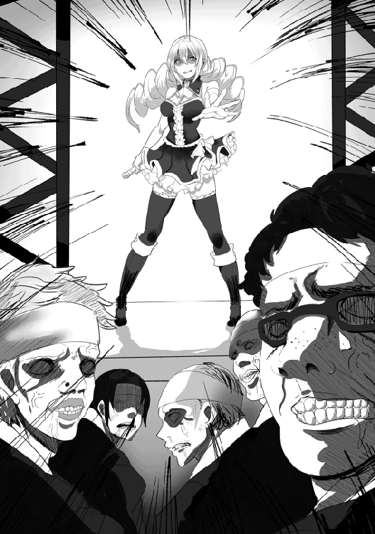
「ルナ、こっちに！」
「うん！」
ルナに手を伸ばした。
危険な状況、さっさと時間停止して逃げようと思った。
「ちょっと！ ルナの邪魔をしないでよ！」
が、伸ばした手は届かなかった。
ルナと俺のあいだに別の男が割って入った。
ルナがそれを倒すと、今度は別の男が襲いかかった。
次々と襲いかかる男達。
ルナはそれをさばくが、俺に近づいて手をつなぐ余裕はない。
歌が聞こえた。
リサが歌い出したのだ。
さっきも聞いた、アップテンポでネガティブな、とにかくあおり立てる曲。
それを聴いた観衆達のボルテージが上がった。
いや、ボルテージが上がったなどという生優しいものじゃなかった。
全員が正気をなくし──狂気に支配されていた。
それが一斉に襲ってきた。
まずい、このままじゃ──。
と思っていたら、耳元から歌が聞こえてきた。
イノリだった。
イノリは歌った。俺に背負われたまま歌った。
リサの歌に対抗して歌った。
こんな時に何を......と思っていたら、ルナに襲いかかった男の一人がいきなり寝てしまった。
糸の切れた人形のように、崩れ落ちてそのまま寝息を立てた。
それだけじゃなかった。
別の男は目をかっと見開かせたまま動かなくなった。
更に別の男は全身が切れて血を吹き出させて、別の男は顔色が緑になった。
目が見えなくておろおろする男や──なんと体が徐々に石になっていく男もいた。
どうしたんだ、一体どうしたんだ？
──はっ。
横をみた。イノリが歌っている。
俺の奴隷、歌う手のハーフであるイノリ。
フロの歌う手の時の事を思い出した。
あの歌を聴いてると眠くなったことがあった。
そのハーフで、『ちーと』を持つ俺の奴隷。
これが彼女のちーとか！
「こっちをを歌うと、敵がいろんな状態異常になるって」
「やっぱりそうか」
一曲終わって、俺に説明した後また歌い出すイノリ。
リサに操られた観衆は次々にばったばったと倒れていった。
「なんなのよ！ なんなのよこれ！ もう！ むかつく！」
ヒステリックになるリサ、彼女は更に歌った。
さっき以上に煽動的で、激しい歌を。
残った男達は更に豹変した。
目が血走ってるだけじゃなく、筋肉が盛り上がって、服が破けた！
イノリの歌は効いていた。相手に様々な状態異常を与えた。
しかし、リサの歌にかかった男達は、石化みたいな物理的に動けなくなるヤツ以外、関係なく襲いかかってきた。
出血しても、毒にかかっても、火傷になっても。
その状態のまま襲ってきた。
その勢いはルナを圧倒した。
ルナも『ちーと』持ちだ。時間停止という考えつく限り最強クラスの『ちーと』をもってる。
だが、それは俺と手をつながなきゃ発動しない。
なんとかして手をつながなきゃ──でも届かない。
イノリを背負ったままじゃ近づくこともできない。
かと言って、イノリをおいていくことはもっとできない。
どうする──ってなっていたら、
「ハードさん！」
「ご主人様！ 一掃する」
サヤカとコハク、残った奴隷が到着した。
相手の十倍強くなるという『ちーと』を持つ二人は、あっという間に操られた男達を倒していった。
敵を全滅させて、俺はホッとした。
「そうだ！ リサは──いない？」
さっきまでリサが立っていたところを見たら、彼女はいつの間にかいなくなっていた。
「リサって、あのリサさん？」
「彼女がいたの？」
サヤカとコハクが驚いた。
二人が到着した時にはもういなかったって事か。
「ああ」
俺は頷き、状況を説明した。
リサがいて、アイドルになっていて、歌で地面にごろごろ倒れている男達を洗脳して、操った。
そして、総選挙に出る事を宣言した。
それらのことを二人に説明した。
「リサさん......どうやってこんな力を」
「それよりもまずいよ。だってご主人様、あたらしい大統領に親書を渡さないといけないんだから」
「あの人がなったら渡せないね」
「それよりもっとまずい事が起きるかも」
コハクが言うと、他の奴隷達は生唾を飲んだ。
リサが大統領になる。
ちょっと前までなら多分祝福してたけど、今はそんな呑気な事は言ってられない。
リサは、あきらかに俺を敵視してる。
いや、殺そうとしてた。
そんなリサが総選挙に勝ったら──そう思うと背筋がぞくっとした。
「止めなきゃだめだね」
「止めるって、どうやってですか？」
「ルナが総選挙に出ちゃおっか」
「わたしが出る」
耳元で囁く様にイノリが言った。
他の三人は一瞬驚いたが、すぐに納得した。
視線が、イノリの指輪に集まっていた。
俺の奴隷になっている事に気づいて、納得した。
イノリは更に続く。
「わたしが歌う。総選挙で」
「いいのか？ そこで歌うの危険だぞ？」
「気にしない」
首を振ってから、俺を見つめる。
背負ったまま、至近距離で目が合う。
イノリの目は、まっすぐ俺を見つめていた。
「あなたのために......歌いたい」
その宣言は、まるでプロポーズのように聞こえた。
夜、宿の中。
四人の奴隷は俺の部屋に集まっていた。
サヤカはちょこんとベッドの上に腰掛けている。手が何故かベッドをなで回している。
コハクは俺の向かいの椅子に座っている。
ルナはタンスの上にしゃがみ込むような姿勢で座ってる。
一番新顔のイノリは、路上ライブの場所にいるときと同じように部屋の隅っこで体育座りしている。
こうしてみると、全員がそれぞれ特徴的な女の子だな、俺の奴隷って。
「調べてきたよ」
四人のうちコハクが立ち上がって、ペラ紙を取り出して、それを見ながら言った。
「総選挙に出るには地区の候補者、この場合パッションの街の候補者になる必要があるの。そしてパッションの予選に出るにはＡランク以上のアイドルでなきゃだめ」
「ランクがあるのか？ アイドルにも」
それは初耳だ。
「あるね。冒険者ギルドと同じようにＳランクからＦランクまであって、調べてみたらイノリは現状Ｆランクらしいの」
「一番下なんだ......あんなに歌うまいのに......」
サヤカが、なんだか納得いかない表情で言った。
「この国で歌が評価されるのは魔力の量が重要みたいなのよ。魔力が一定以上になって、ようやく歌の善し悪しが評価される。ご主人様の奴隷になって『ちーと』をもらうまでは魔力がないって思われてたから、Ｆランクでくすぶってるのは仕方ない事ね」
「ねえねえ、イノリンのいまの魔力ってどれくらいなの？ あっ、もちろんみんなに分かるレベルでの」
ルナがタンスの上から聞いてきた。
「Ｓランクレベルに到達してるよ。それは間違いない」
「つまりこの先の勝負は歌の善し悪しだけか」
「ちょっと違う、低ランクなら魔力量で押し切れる。高ランクになって、ようやく歌の善し悪しが勝敗を決めるようになるの」
「なるほど」
コハクの指摘に納得した。
言われてみればそうだ、この国のシステムなら、Ｓランク相当の魔力があれば、低ランクは無条件で勝てる様なものだな。
「で、ランクを上げるにはどうすればいい？」
「アイドルバトルよ」
「アイドルバトル？」
「そう、同じランク同士でライブを同時にやって、それで勝ち負けを決めるの。勝った方が上に行くの」
「勝ち負けって、どういう基準で決めるの？」
「イイネ牡丹を使うの」
「いいねボタン？」
サヤカは首をかしげた。
そして疑り深い目をして、コハクに聞いた。
「ボタンを押してもらうの？」
「ううん、咲かすの」
「咲かす......やっぱり思ってたのと違う」
サヤカがブツブツ言い始めた。
何か新しい事を聞いたとき、ほとんど毎回こうなるから、彼女はとりあえず放置する。
「なるほど、そのイイネ牡丹というのが審査員代わりってことだな」
「そういうことね」
頷くコハク。それで全部の説明は終わったとばかりに、椅子に座った。
俺は反対側、壁際で体育座りしてるイノリに聞いた。
「という訳で、バトルに出てもらう事になるけど、それでいいか？」
「......あなたはいてくれる？」
「え？」
「バトルする時、いてくれる？」
「そりゃ......」
「ハードくん、ハードくん」
いるよ、って答えようとしたら、ルナがタンスから跳び降りて、俺のそばにきて耳打ちした。
「あれって、いてくれる？ じゃなくて、聞いててくれる？ って聞きたいんだと思う」
「......ああ」
そう言えば「あなたのために歌う」って言ってたっけな。
そういうことなら──もちろん。
「ずっといるつもりだぞ」
「ずっと？」
「イノリが歌ってるときはずっと聞いてるつもりだ。ご主人様だからな」
「じゃあ、歌う」
静かに頷くイノリ。俺さえいれば、あとはもう何もいらないってかんじだ。
いじらしいな、と俺は思った。
☆
次の日、パッションの街角。
指定された場所でサヤカとイノリと一緒に待ってると、七三分けにメガネの男がやってきた。
手に旅行用のようなバッグを持っている。
「イノリ・ミラクルさんですね」
「......うん」
「あなたは？」
「ごしゅ......マネージャーみたいなもんだ。この子は助手」
この国は奴隷解放宣言を出してる国であることを思い出した。
余計な面倒ごとを増やさないために、俺は適当に自分がマネージャー、サヤカは助手だと言った。
マネージャーはともかく、助手ってなんだよ？ って思ったけど、七三分けのメガネは特に気にしなかった。
「では説明します。本日のＦランクアイドルバトルは、審査にこのイイネ牡丹を使います」
七三メガネはそう言って、バッグを開けた。
中から小さいイノシシが出てきた。
「かわいい！」
「......かわいい」
サヤカもイノリもそう言った。
子犬くらいのイノシシはぬいぐるみ感があって、俺でも可愛く見える。
ましてや女の子の二人だ。
「あっ......牡丹ってこっちの牡丹!? でも咲かすって......」
またブツブツ言い始めるサヤカ。
七三メガネは更に説明を続ける。
「アイドルの歌、魔力、そして観客の満足度。それら全てをあわせて、このイイネ牡丹が評価を下します」
「そんな事言っても魔力を評価するんじゃないのか？」
「......歌、魔力、満足度全てです」
七三メガネは一呼吸開けた後、しれっと答えた。
建前社会だなあ、と俺は思った。
「念の為に確認してみますか？」
「そうだな。イノリ、歌ってみてくれ。ワンフレーズでいい」
「ん......」
イノリは喉の調子を整えてから、言われた通りワンフレーズだけ歌った。
すると、イイネ牡丹が反応した。
子イノシシの鼻からポン、と手品のように花が咲いた。
イノシシの鼻の穴から花が──。
かなりシュールな光景だった。
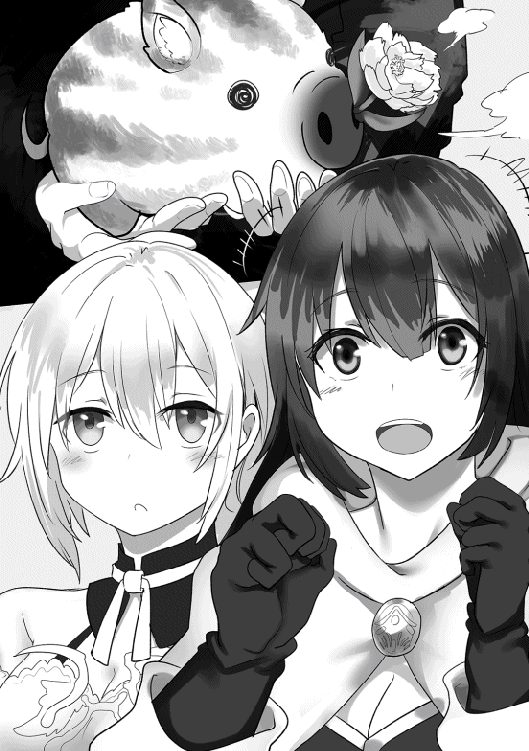
「ご覧のように、この花の咲き具合で勝負を決めます。今のは七十点ですね、満点は百点です」
「なるほど」
「では、相手の方が──」
「もう来てるわよ！」
反対側から声が聞こえた。
振り向くと、そこに幼い感じの女の子がいた。
背はサヤカよりも更に低く、顔つきも幼い。
髪型はツインテールだが、コハクのと違って結んだ先はロール状になってる。
衣装もアイドルらしくフリフリで、全体的にロリっぽい感じだ。
「あたしはゴールド・フラワー。今日あなたを倒して上にいく女よ」
ゴールドって名乗った女はサヤカに握手を求めた。
「えっ、ごめんなさい、わたしじゃないんです」
「ふぇ？」
「アイドルなのはこっちのイノリちゃんです」
「えええええ！」
ゴールドは何故か盛大にびっくりした。
信じられないって目でイノリを見る。
「こんな地味な子がアイドルなの？」
むかっ。
「うそでしょう!? えー。あーでも、そんなもんか。Ｆランクだもんね」
「......おまえもＦランクだろうが」
ムカッときたから、つい感情的に言い返した。
「ちっちっち。あたしをただのＦランクアイドルだと思ったら大間違いよ」
「どこが違うってんだ？」
「それは見てのお・た・の・し・み。まっ、でも、こんな地味な子じゃ全力を出すまでもないわね。適当に歌って適当に踊って、適当にひねってやるわ」
「......適当にやったら負けるぞ」
「負ける？ あたしが？」
ゴールドは鼻で笑った。
「ないない、そんなのあるわけないじゃん」
「......もし負けたらどうする？」
「もし負けたら？ そうね、こんなのに負けたらアイドル引退してやるわよ」
「言ったな」
「言ったもーん」
ゴールドは自信たっぷりに言いはなった。
悪びれることなく、イノリを見下しきったような表情で。
......言ったな。
☆
ライブバトルが始まった。
Ｆランクのバトルだから、場所は街中での路上ライブだ。
それでもランクアップがかかったアイドルバトルだから、かなりの観客が集まってきた。
先行はゴールド、彼女は客の前で歌って踊った。
魔力はそこそこあるみたいだった、歌も悪くない。
パフォーマンスは......あざとかった。
跳んだり跳ねたり、くるりと回ったりするけど、その度にパンツがちらちら見えた。
「「「うおおおおお！」」」
判定用のイイネ牡丹は鼻から花を咲かせた。
鼻が出てきて、少しずつ満開になってく。
「七十八、七十九、八十──」
七三メガネが点数を読みあげていく。花が更に咲く度に点数を読みあげていく。
曲が終わる。ゴールドは八十四点という結果になった。
歓声の中、こっちにやってきたゴールドは満足げな顔で言った。
「八十四点か、ま、調子はまあまあだったから、こんなもんね」
「そうかい」
「次はあなたね。せいぜい無様なステージにならない様に気をつけるといいわ」
ゴールドはイノリに言った。
イノリはきょろきょろしてから、困った目で俺を見た。
あっ、そっか。
「おぶっていくよ」
「うん」
イノリはまだ歩き方を思い出していないようだ。
俺が彼女をおぶって、ステージにあがった。
「あははははは！ なにそれ？ マネージャーにおぶってもらうとか、どんだけお子ちゃま？ あははは！ あたしの勝ちで決まりね」
背後から嘲る声が聞こえてきた。
無視する。そんな風に言ってられるのも今のうちだ。
「横で聞いてる、がんばれ！」
「うん！」
イノリにそう言って、ステージを降りた。
彼女は俺をちらっと見てから、集まった観衆にむかって歌い出した。
相変わらずものすごい歌だった、そして、ものすごい魔力だった。
観客の雰囲気はさっきと正反対になった。
アイドル・ゴールドのパフォーマンスにノリノリだった客は静まりかえった。
息をするのさえ忘れて、イノリの歌に聴き入った。
客も、七三メガネも、果ては対戦相手であるゴールドさえも。
俺とサヤカをのぞいた全員がイノリの歌に聴き入った。
やがて、曲が終わる。
こっちを見るイノリに親指を立ててやった。
振り向く、点数を確認──ってあれ？ イイネ牡丹の花が咲いてない。
どういうことだ──と思ってたら。
次の瞬間、鼻からポンと花が咲いた。
ものすごい勢いで、一瞬にして満開で。
「ま、満点です」
七三メガネが慌ててコールした。
イイネ牡丹さえも、イノリの歌に聴き入っていたのだ！
呆然とするゴールド、俺は彼女に言った。
「で」
「え？」
「負けたらどうするって」
「......あ」
バトルが始まる前の事を思い出したゴールド。みるみるうちに顔が青ざめていく。
「大口を叩いたからには、覚悟は出来てるよな」
「そ、それは」
「どうなんだよ」
俺は攻撃的な気分になっていた。
イノリを散々けなされたのがむかついていた。
「ご、ごめんなさい！」
ゴールドは土下座をした。
アイドル衣装のまま、その場で土下座をした。
「悪気はなかったんです、許して下さい！」
「......俺じゃない」
「え？」
顔を上げて、きょとんとするゴールド。
「謝る相手、間違ってるだろ」
「──はっ。ご、ごめんなさい。ひどい事言ってごめんなさい！ 許して下さい、お願いします！ 何でもしますから！」
俺に指摘されて、今度はイノリに土下座した。
俺はイノリをみた。許すかどうかを彼女に決めてもらう事にした。
イノリはゴールドを見て、ちょこん、と小首を傾げて。
「どうして？」
「え？」
「どうして、土下座してるの？」
「え？ だってあたし、ひどい事を......」
「......？」
また首をかしげるイノリ。
どういうことだ？ って思っていると、サヤカが俺の横に来て、耳打ちしてきた。
「もしかしてイノリちゃん、言われたの自分だって気づいてないんじゃないですか？」
「......あ」
そうかもしれない。というか、そうなんだろう。
歌うこと以外、ほとんど気にしないイノリのことだ、ライブ前にされた挑発なんで気にもしてないだろう。
というか実際──。
「反応してなかった、な」
「うん」
頷くサヤカ。
俺は納得した。そして笑いがこみ上げてきた。
そうか、相手にもしてもらえてなかったのか。
なんというか、流石イノリだな、うん。
俺はステージに上がって、イノリをおぶって戻ってきて、サヤカと一緒にそこを離れた。
遅れて、自分が相手にもされてなかったことに気づいたゴールドは悔しそうな顔をしたが、それはそれでいい気味だと思った。
夜、宿屋の中。
俺の部屋にルナとコハクが集まっていた。
ライブバトルで疲れ果てたイノリは、戻ってくるなりぐっすり眠ってしまった。
念の為にサヤカをそばにいさせた。
「それ見たかったな」
ルナが興奮気味に言った。
昨日と同じように、タンスの上に座ってて興奮してるからか、アホ毛がぴょこぴょこしている。
「だったら明日見に来ればいい。イノリのライブは──」
「うん！ 見にいく！ 楽しみだなあ、鼻から花を咲かすお豚さんかわいいんだろうなー」
「そっちかよ！」
思わず盛大に突っ込んだ。
ルナはイノリのライブじゃなくて、判定用のイイネ牡丹に興味をもったようだ。
「だって気になるんだもん」
「気になって見に来るのはいいけど、ちゃんとイノリの応援もしてやれよ。明日はＤランク昇格を賭けてのバトルだからな」
「うん！ するする！ うー、いまから楽しみだよ！」
ルナは子供のようにはしゃいでいた。まるで遠足前日の子供のようだ。
一方、ドアの近くで佇んでいるコハクは浮かない顔をしていた。
部屋に入ってからずっとそんな顔で、会話にも混ざってこない。
何か思い詰めた様子だ。
「どうしたコハク？」
「ご主人様......」
「......どうした、本当になんかあったのか？」
「今日の昼間、ウマ車にのってサウンドヒールに行ってきた」
「首都に？ なんでまた」
「あの女──リサがサウンドヒールにいるって情報があったから」
「──っ！」
リサがサウンドヒールにいるだって？
俺の前にアイドルとして現れて、観衆を操って襲わせた後、姿をくらましたあのリサが？
「それで、いたのか？」
「うん。あっちでもライブバトルをしてた」
「なに？」
ちょっと信じられなかった。
あんな事をしておいて姿を消したのに、街が違うとはいえ普通にライブバトルをしてるだって？
どういうことなんだ？
「ライブバトル、どんな感じだったんだ？ まさか、また観衆を操ってたのか？」
「そうだけど......でもちょっと違った」
「ちょっと違う？」
「リサが歌い始めると、その場にいた観衆はものすごく盛り上がった、盛り上がり過ぎて凶暴になっていった」
なるほど、と俺は頷いた。
コハクの説明で、すぐにその光景が目の前に浮かび上がってくるようだ。
この前がそうだった。
普通にライブを聴いてたかと思ったら、彼女の歌に洗脳された観衆達が俺達を襲ってきたのだ。
大勢の人間が正気を失ったかのように、一斉に凶暴になって。
あれがまた起きたんだろう。
「コハクの事がばれて襲われたのか？」
「ううん、違うの」
「じゃあ？」
「彼女の歌を聴いて、ボルテージがあがった観客同士がケンカを始めたの」
「観客同士が？」
「うん。ご主人様を襲わせた時と同じ感じで、客同士がケンカを。その間も彼女は歌い続けてた」
俺はその光景を想像した。
ステージの下で客同士が殴り合いしてるのに、気にしないで歌い続けるリサ。
ぞっとする光景だった。
「なんでそんな事に......」
「これ......」
コハクは俺に近づいてきて、何かを取り出してテーブルの上に置いた。
それを見た瞬間、俺とルナが一斉に息を飲んだ。
コハクが取り出したのはブレスレット。今も光を放っているブレスレット。
ロックが使ってたあのブレスレットだ。
「これは......まさか？」
「うん」
コハクは重々しく頷いた。
「リサの歌を聴いてた人たちは全員つけてた。これをつけて、リサの歌を聴いて、ケンカを始めた」
「じゃあ、これが光ってるのって......」
「殴り合って倒れた人から取り上げてきた。ケンカをして殴り合って倒れた人から」
「苦痛......」
炭酸の街エルーガで、ロックはこのブレスレットを冒険者につけさせて、「苦痛」を集めていた。
集めた苦痛は魔力になって、魔物を産み出したり本人の力を増幅させたりする。
ロックはそれを使って何かをしようとしていた。
それを止めて、ロックを倒して、一件落着だと思ってたんだけど。
まさかここでまたこれが出てくるとは。しかもリサがそれに絡んでるとは。
「なんでリサがこんなものを......」
「歌の力も含めて......ご主人様。リサの後ろに何者かがいると思う」
「......ああ」
俺は頷いた。
そうだろうな、リサの裏に誰かがいるだろうな。
リサが急に力を得た事と、このブレスレット。
何者かが陰で暗躍してるのは間違いない。
それも、ロックとつながってる何者かが。
リサが現れた。
リサに歌の力がついた。
リサの裏に何者かが暗躍してる。
驚きの連続、分からない事だらけ。
......一体、何が起きてるっていうんだ？
「どうする、ご主人様」
コハクが俺に意見を求めた。
リサに加えてブレスレットが絡んできたとなれば、無視する訳にはいかない。
「......もし」
「もし？」
「リサが大統領になったら大変だよな」
俺が言うと、コハクは真顔で頷いた。
「普通に考えると、あの人はご主人様を恨んでるから」
「親書を渡すどころじゃなくなるよな」
「もっと大変な事になるかも」
「もっと大変な事って？」
ルナが小首を傾げて聞く。
「大統領って、この国で一番偉い人だから」
「王様みたいなものだもんね」
「そう。それにこの国の大統領は総選挙で選ばれるから、いつもその時点で一番国民に支持されてる人なんだ。そんな人が、もし『あの人大っ嫌い』って言ったらどうなると思う？」
「わわわ、それは大変」
「ご主人様、あの人はそうする？」
「......多分」
幼なじみのリサ。
子供の時からの事を思い出す。
今にして思えば、ワガママで、自分の意見が通らなかったら大声でわめく性格だった。
それに前の事で、かなり俺を恨むようになった。
それがもし大統領になったら......。
「うーん、でもでも、よく考えたらまったく問題無いよね」
ルナがそんなことを言う。
「まったく問題ない？」
「だってあの人が大統領になれる可能性なんかないもん。ハードくん、イノリンを大統領にしようとしてるし」
「......」
「......」
俺もコハクもポカーンとなって、互いの顔を見比べた。
たしかにそうかも知れない。
リサが大統領になったらまずい事になる。
逆に言えば、ならなかったら別にどうって事はない。
「本腰いれて彼女を大統領にしなきゃだめね」
「それも大丈夫、だってハードくんの奴隷だから」
「それって自分もすごいって言ってるようなものよ」
「すごいもん。だってハードくんの奴隷だから」
「そっか」
楽しげに笑い合うコハクとルナ。
可愛いな、二人とも。
くすくす笑い合う姿がとても可愛い。
今すぐカメラ小僧を連れてきて、この光景を残しておきたいくらいだ。
それはムリだから、せめて自分の網膜に焼き付けておくことにした。
おくことにした──が。
コハクの表情が豹変した！
「ご主人様！」
「どうした？」
「あっち、サヤカとイノリの部屋に異常な魔力が！」
「異常な魔力？」
「大きくない、でも、すごく異常」
コハクはものすごく険しい顔で訴えてきた。
魔力の『ちーと』を持つ彼女に、それほどの顔をさせる「異常」だって!?
行かないと──くっ、遠い！
イノリを休ませるために、話し声で起こさないようにするために一番遠くの部屋にしておいた。
駆けつけるには遠い。
「ハードくん！」
──時が止まる。
ルナが俺を呼び、手をつないできた。
その瞬間世界が反転して、時が停止した。
「これで間に合うね！」
「よくやったルナ」
「えへへ」
「さあ行こう」
ルナと手をつないで時間を止めたまま部屋を出て、サヤカとイノリの部屋に向かった。
向こうの部屋に入った途端、目を疑った。
部屋の中心に黒い穴があった。
底が見えない不吉な黒。
そんな黒い色をした穴だった。
それにイノリ？ が飲まれていた。
穴の外にサヤカがいた、彼女はすでに穴に飲まれて片手しか外に出ていないイノリを引っ張っていた。
足元に引きずった痕跡がある、引っ張ったが、ますます飲まれているのが分かる。
「イノリン！ くっ、遅かったの？」
「いや、普通に駆けつけてたんじゃ、イノリだけじゃなくサヤカも飲まれてただろう。そういう意味じゃまだ間に合った方」
「どうするの？」
無言でイノリの手を引っ張った。
時間を止めた中でも物を動かしたり、敵に攻撃を加えたりする事ができる。
このまま、イノリを引っ張り出すことも出来る──はずだが。
「びくともしないな」
「サヤカが力負けしてるくらいだから......」
「引っ張り出すのはムリって事か」
「どうする？」
「......」
時間は止まってる、たっぷり、ゆっくり考える時間がある。
俺は落ち着いて考えた。
誰の仕業か分からない、だけど状況的にすぐに殺すとか、そういうことじゃなさそうだ。
どうみても、どこかへ連れ去るのが目的だ。
手を黒い穴の中に突っ込む。
今度は頭を突っ込んだが、分厚い布団の中に頭を突っ込んだように、何も見えない。
俺でも入れる。多分他のみんなもだ。
なら。
「入ろう」
「入る？」
「ああ、みんなで入ろう。イノリがどこに連れ去られるのか分からないが、引っ張り出せないんなら一緒に入った方がいい」
「──うん！ そうだね！」
ルナは大きく頷いた。
さっきまでどうしようかとおろおろしていたのが、ほっとして、さらには目をきらきらさせるようになった。
俺とルナは一旦部屋を出て、時間が止まったコハクを運んできて、サヤカと共に黒い穴に飛び込んだ。
全身が飛び込んだ瞬間、俺は意識を失った。
☆
意識を取り戻した俺は、すぐにまわりを確認した。
サヤカ、コハク、ルナ、イノリ。
俺の奴隷の四人は全員いて、俺のそばに倒れている。
サッと確認する、全員息がある、表情も普通だ。
ぱっと見、ただ寝ているように見えて、俺はホッとした。
ホッとしてから、まわりを確認した。
とても不思議な場所だった。
まず、何もない場所に見える。
上下左右の認識がおかしくなるくらい、何もなくて真っ黒な空間だ。
それでいて「暗い」かって言われればどうじゃない。
横たわっている奴隷達のまつげの本数さえも数えられるくらいよく見える。
背景が黒いのに、見えるものは明るいところにいるように見える。
普通それだと、まわりの空間も明るく照らし出されるんだけど、そうはなってない。
本当に、ものすごく不思議な空間だった。
ちょっと歩いて回った。
真っ黒だから自信はないけど、とりあえず直進した。
......どれだけ歩いたんだろう。距離感覚までも狂ってしまいそうだ。
立ち止まって振り向く。奴隷達とはボールを投げて普通に届く程度の距離しか離れてない。
嫌な場所だ、長くここにいると気が狂いかねない。
でなきゃ。
......どうやって？
奴隷達のところにもどって、まわりを更に見た。
手を出してあっちこっち触れてみた。
なんの感触もない。
なにもないし、出入り口とかそういうのがあるようでもない。
あの穴がもしあれば、って思ったんだけど、そう言うのはない。
どうするんだ。本当に？
☆
しばらくして、奴隷が全員目を覚ました。
彼女達の無事を確認しつつ、状況を説明する。
話を聞くにつれ、サヤカもコハクもルナも徐々に表情が強ばっていった。
イノリは体育座りしててぼうっとしてる。マイペースだ。
最後まで話すと、サヤカは今にも泣き出しそうな心細い顔になった。
「も、もう戻れないんですか？」
「いや戻る」
「え？」
「何があってもおまえ達を連れて帰る」
俺ははっきり宣言した。
こんなところに閉じ込められて奴隷ごと朽ちてったんじゃ、ご主人様失格だ。
何が何でも、絶対にみんなを連れて帰る。
「そこは安心しておけ」
「ご主人様が言うなら」
「ルナ、ハードくんについて行くね」
「うん......ハードさんを信じる」
平常心そのもののコハク、満面の笑顔で頷くルナ、うつむき加減で頬を染めるサヤカ。
三者三様の反応、どれも俺を信じてるからの反応だから、悪くない。
ますますやる気がでた。
さて、問題はどうするかだ。
サヤカ達がまわりに散って、俺がしたのと同じように空間をチェックした。
サヤカはすごく困った顔で、コハクは真顔、ルナはまるで子供のように無邪気に楽しんだ。
......イノリは相変わらず膝を抱えたまま、ぼうっとしてる。
俺は考えた、色々と。
この状況を打破して脱出するための。
......どれくらい考えただろうか？
ほんの一秒って気もするし、百年たった気もする。
ここは空間感覚だけじゃなくて、時間感覚も狂わせる。
そんな事をなんとなく思った直後。
「ご主人様、敵が」
「なに？」
コハクが言う。俺はちょっとホッとした。
これほど「敵」という存在をありがたいって思ったことはない。
コハクの視線を追いかける、そこに目つきの悪い小人がいた。
小人は黒いだけの空間で、何も遮蔽物がないのに隠れてちらちら様子をうかがってきた。
いやバレバレだから。
「あっ、ワンチャンだ」
サヤカが言った。
「最初の頃にサヤカと一緒に倒した魔物だな」
「うん！」
「ハードくん、あっちにも」
「どれどれ、あっ、クレーマーだ」
「きゃあああああ！」
「サヤカはクレーマーが苦手なんだっけ？」
「は、ははははひ......」
「えー、どうして、みんな可愛いじゃん」
ルナは二本のアホ毛を揺らしながら言った。
「ルナちゃんのＧって絶対いやな方のＧだよ......」
サヤカはブツブツ言った。いつも通りなんだかよく分からないから放置する。
「どうするご主人様？」
「倒そう」
「はい。じゃあ、わたしはクレーマーを、サヤカはワンチャンの方をおねがい」
「ありがとうコハクさぁん......」
涙目で感謝するサヤカ。
二人がそれぞれ魔物に攻撃をしかけた。
どっちも強い魔物じゃないから、すぐに倒せるはずだ。
と、思ってたんだが──。
「──っ！」
「きゃあ！」
二人は思いがけない反撃を喰らった。
飛びかかったサヤカ、魔法の詠唱をはじめるコハク。
二人は攻撃をしかけようとしたが、直前に魔物が急に強くなって、反撃を喰らってしまった。
「サヤカ！ コハク！」
「大丈夫です！」
「びっくりしただけ」
二人は既に体勢を立て直していた。
俺は魔物を見る。見た目は変わってない、が、動きが早くなっていた。
心なしか、オーラのようなものが体から立ち上っている。
どういうことだと思っていたら、すぐに分かった。
パン！
そんな音と共に明かりがさした、ステージが見えた！
魔物の向こうにステージが現れて、その上に一人のアイドルがいた。
可愛くてスタイルがよくて、ステージ衣装も華やかでいいけど、雰囲気がよくない。
「うぅ......ハードくん、あれ、幽霊？」
俺にしがみつくルナ。
彼女の疑問はもっともだった。ステージの上に立っているアイドルは生気がなく、おどろおどろしい何かを纏っている、まさしく幽霊に見える格好だ。
「あれは......」
「知ってるのか？ コハク」
「前の大統領だよ」
「えっ！」
ぱっと相手を見る、前の大統領だって？
つまり彼女が急に引退して姿を消した、この国のトップアイドルだって事か？
「なんでこんなところに？」
「分からない」
「なんか操られてるみたい」
サヤカが言う......なるほど、そうか。
「リサの後ろにいるヤツが操ってるのか」
「そうかもしれない」
「歌い始めるよ！」
演奏が始まって、アイドルが歌い出した。
不思議な光景だった。
アップテンポで楽しい曲なのに、彼女はマイクを抱えて歌い上げる。
おどろおどろしい空気を纏ったまま......やっぱり怨霊かって思った。
異変が更に起きた。
ワンチャンとクレーマーが大増殖をはじめたのだ。
一体から二体、二体から四体と、分裂して数を増やしていく。
ワンチャンはいいが、大量に増えたクレーマーにサヤカは更に泣きそうになってしまう。
「まずい、とにかく倒そう！」
「はうぅ......」
「分かった」
「まっかせてー」
三人の奴隷は魔物に飛びかかった。
『ちーと』を使うサヤカとコハク、もとからそれなりの能力があるルナ。
三人は次々と魔物を倒していった。
が、数は一向に減らなかった。
アイドルが歌って、更に増やすからだ。
「らちがあかないな、ルナ！」
「うん！」
ルナと手をつないで時間を止めて、ステージを登ってアイドルのところに向かった。
「ごめん。ルナやれ」
「うん！」
ルナがナイフを突き刺した──が通らなかった。
「あれ？ あれれ？」
「どうした？」
「手応えがないよ。変なのこれ、硬いとかそういうのじゃないんだけど、とにかく手応えがないの」
俺もアイドルを触ってみた、軽くはたいてみた。
確かにおかしい、ルナの言う通り硬いとかじゃない、とにかく手応えがない。
「攻撃出来ないのか彼女には？」
「どうするのハードくん？」
「......まずは魔物を一掃しよう」
「うん！」
増殖するなら、まずは一掃する。
そう思って、時間を止めたまま魔物を倒した。
時間を止める中、かなりの時間をかけて（矛盾してるけど）モンスターを一掃した。
手を離す、時が動き出す。
「あっ」
「ありがとうご主人様」
サヤカとコハク視点だと、「急に敵が原因不明の全滅」になったように見えるだろう。
二人はすぐに、それを俺とルナがやったと気づいた。
さあ、後はアイドルを──。
と思ったら魔物が復活した。
倒した魔物がアイドルの歌を受けて復活してきた。
全員が幻影を背負った。背中にアイドルの姿が見えた。
「これって......まずいですよね」
「無限に復活するみたいね」
「あれ倒せないし、どうしよう？」
サヤカがワンチャンを掴んで全力でアイドルに投げつけた。
コハクが大魔法を唱えて、クレーマーごとアイドルを氷で貫こうとした。
それぞれ『ちーと』を活用したが、ルナの時間止めと同じで、相手には通じなかった。
三人の『ちーと』は通用しない。
厳密には通用するけど、根絶させる事は出来ない。
今までにないことだ、どうする？
「──♪」
ふと、歌が聞こえた。
背中から、今までとは違う歌が。
イノリの歌だ！
どうしたんだ？ と思うよりも早く効果が現れた。
魔物達は倒れた。
イノリの歌──『ちーと』にやられて、あらゆる状態異常を起こした。
眠り、出血、毒、マヒ、石化──。
あらゆる状態異常をおこした。
アイドルは歌って対抗した。魔物達は更にパワーアップ。それが見えるくらいアイドルの幻影を背負ったが、状態異常で動けないままだった。
「すごい......」
「歌が勝ってる」
感嘆する奴隷たち。
更に異常がでた。
アイドルの体から光の粒子が立ち上りはじめた。
奴隷達──サヤカとコハクは身構えた。ルナはいつでも俺の手を握れるようにそばにきて腕を組んだ。
そうして警戒したが──すぐに必要ないと分かった。
あれだけおどろおどろしい怨霊だったアイドルの表情が晴れやかになっていた。
歌が止まった。
光の粒子が立ち上り、体が透けていく。
「幽霊だったんだね」
コハクがつぶやく、俺もうなずいた。
ちらっとイノリを見る。
人と歌う手のハーフ、俺の奴隷であらゆる状態異常を押しつける『ちーと』持ち。
その歌は幽霊の元大統領に作用した。
──浄化。
俺達は成仏していく彼女を見送った。
『ありがとう』
消える前、鈴を転がすような美声が聞こえた気がした。
次の瞬間、宿屋──イノリの部屋に戻っていたのだった。
「ご主人様」
コハクがまっすぐ俺をみた。俺は頷いて答えた。
アイドルバトルを勝ち上がるつもりでいたけど、こんな襲われ方をされたら、そんな事を言ってられなかった。
「行こう、サウンドヒールへ」
俺が立ち上がり、他の奴隷達も続いた。
☆
パッションの街の駅。夜でもう走ってないけど、それでもなんとかサウンドヒール行きのウマ車を出してもらおうとやってきた。
夜の駅は守衛室に中年の男が一人いるだけで、他に人気はない。
こっちは四人揃ってる、俺とコハクが前に出て、他の三人は後ろにいる。
イノリは例によってぼうっとしてる。
「ウマ車を出すぅ？ だめだめ、夜は出せないって決まりだよ」
「そこをなんとか。一刻でもはやくサウンドヒールに行きたいんだ」
「だったら明日の始発を待てばいい」
「始発ってどれくらいかかるんですか？」
サヤカがおずおずと聞いた。
ほとんど俺の背中に隠れてて、顔だけをだして聞いたって感じ。
彼女が怯えるのも仕方ない、守衛室にいる男は飲んだくれてて、顔が真っ赤で息も酒臭い。
「夜明けと同時に発車する。分かりやすいだろ」
「夜明け!? また日が落ちてからそんなに経ってないぞ？」
「それじゃダメだよおじさん。ねえ、何とかならないの？」
今度はルナが口を挟んだ。
娘が父親に甘えるような声で中年男に言った。
「だめだめ、夜は出せないの。ほら帰った帰った」
「おじさ──」
「いいから帰れ。──ったく、ライブに行けないわ夜番だわ、変な連中が無茶言ってウマ車出せって言ってくるわ。なんて日だ！ 今日は」
男はそう言って、更に酒をあおった。
やけ酒みたいだな......というか。
「誰かのライブに行きたかったのか？」
「おう、見ろよこれ」
男は一枚のチケットを取り出した。
くしゃくしゃに握りつぶされた後だけど、半券はもぎとられていない未使用品だ。
「Ｓランクアイドル、ナナ様のワンマンライブ。総選挙前の最後のライブだから、すげえプラチナチケットだったんだぞ！ それを......それをこんな夜番なんぞに。くそおおお！」
男はそう言って更にやけ酒をあおった。
俺はコハクに聞いた。
「ナナって、すごいのか？」
「何人かしかいないＳランクアイドルだよ。今回の総選挙の最有力候補で、当選するのはほぼ間違いなしって言われているくらい」
「そんなにすごいアイドルなのか......」
そのプラチナチケットなら......ヤケになるも仕方ないか。
「こちとら独り身だからよお。月に一回、最高のアイドルの最高の歌だけが生きる楽しみだってのによ。くそっ！」
「......最高の歌を聴きたいのか」
「ああん？」
「最高の歌を聴かせてやったら、ウマ車を出してもらえるか？」
「おう、そうしてくれたら出してやるよ。けどよお、言っておくけどよお」
男はすわりにすわった目で、酒臭い息をまき散らしながら言ってきた。
「今の俺は気が立ってるからよ、しかも逃したのはナナ様のライブ。生半可な歌じゃ満足できないぜ」
「それなら問題無い──イノリ」
「？」
振り向き、きょとんと首をかしげるイノリに言う。
「歌ってやってくれ」
「......歌うと嬉しい？」
イノリは俺をまっすぐ見つめて聞いてきた。
「嬉しい」
「分かった」
即答するイノリ。
そんな彼女をみて、男が言った。
「その子が歌うのか？ って薬指に指輪、奴隷じゃねえか？ おまえさん、悪い事は言わねえ、歌がうまいんなら奴隷なんぞやめて──」
男の善意の言葉を最後まで聞かないで歌い出すイノリ。
出だしから最高な歌声だった。
心が震える。ご主人様なのに聞き入ってしまう。
気づけばサヤカもコハクもルナも、他の奴隷達は完全にイノリの歌を楽しむ体勢に入った。
そして、男も。
説教の途中だったのに、酔いが回って目がすわってたのに。
イノリが歌い出した途端、目を見開いて聞き入ってしまった。
夜のパッション駅、イノリのワンマンライブが場を支配した。
☆
失踪するウマ車にのって、プルルージュ共和国首都サウンドヒールに向かう。
ウマ車の中でもぼうっとしてるイノリを、サヤカとルナが左右から挟み込んで、褒め称え続けている。
「すごいよイノリン、あたし感動したよ、しびれたよ、すごく興奮したよ」
「わたしも、あんなすごいライブはじめて。あれって何の曲？ ＣＤにしたら絶対百万枚は売れるとおもう」
「しーでぃーってなに？」
「あっ、ＣＤはないんだ。えっと、ＣＤっていうのは歌を記録して、あとで再生っていう、あっ、聞き直す事ができるものなんだ」
「へー、風のテープみたいなもの？」
「カセットテープ？」
「うん、風のテープ」
「......わたし分かってきた、それ絶対わたしが思ってるものと違うものだって」
ぼうっとしたままのイノリ、盛り上がるサヤカとルナ。
彼女達からすこし離れたところで、俺とコハクが向き合っていた。
「コハク、リサの居場所は分かってるのか？」
「登録した事務所と、住んでるところは調べてる。でも果たしてそこにいるか......」
「いない可能性は大きいよな、というか馬鹿正直にそこにいるわけないよな」
コハクは頷いた。
「それでもまずは行ってみるしかないと思う」
「それにワナの可能性もあるよな」
「ご主人様の言うとおりだと思う」
「こうしよう、ついたら俺がルナと一緒に時間を止めて中を確認してくる。ワナがあったら一通り壊して回る。俺とルナで壊せないヤツは場所を覚えて、戻ってきたらお前かサヤカにやってもらう」
「うん、それがいいと思う」
コハクとどう動くべきかを打ち合わせた。
一度襲われた後だから、俺たちは慎重になった。
ウマ車がサウンドヒールに向かって進む。
突然サヤカが大声で俺を呼んだ。
「ハードさん！ あれをみて！」
ウマ車の中から外を見る、進行方向に無数の目が見えた。
暗い夜の中で爛々と赤く光る瞳。
「何だあれは？」
「あれ、オークだよ！」
ルナはウマ車の屋根の上に飛び出して、手にひさしをつくって遠くを見回した。
「オークだって!?」
「普通じゃあり得ない......エンシェントモンスターがあんなにいるなんて！」
コハクは眉をしかめてつぶやいた。
ほとんど過去の遺物になって、ごくまれに少数だけ確認されるのがエンシェントモンスターだ。
進行方向の先に見えているオークは、少なく見積もっても百体以上はいる。
念の為にルナに聞く。
「全部オークなのか？」
「うん！」
「うぅ......なんかいやな感じ......」
サヤカは両手で自分を抱きしめた、不安がはっきりと出てる。
「コハク」
「分かってる」
「あたしもやるよ」
「頼むぞルナ」
二人にそう言ってから、サヤカをみる。
「大丈夫か？」
「うん......わたしも頑張る」
サヤカはそう言って、えいっ！ とウマ車から跳び降りた。
『ちーと』を発動させて、オークの十倍になるスピードで群れに飛び込んでいく。
コハクは魔法を詠唱した、こっちもオークの十倍の魔力で彼女得意の氷の魔法を撃った。
ルナは持ち前のスピードでオークと渡り合った。
『ちーと』なしだと、彼女が一番能力が高いだろうな。
ウマ車をそのまま走らせて、オークを倒していく。
群れを突破した頃には大半を倒しきって、最後は一直線に追いかけてきたから、コハクの魔法でまとめて一掃した。
サヤカとルナが再びウマ車に乗ってきた。接近戦の二人は返り血を浴びていた。
「ご苦労様、よくやった」
「はい」
「うん！」
サヤカははにかんで、ルナは無邪気に笑う。
ウマ車は更に進む。
やがてサウンドヒールが見えた。
夜の首都はまるで不夜城のようだった。
「ついた......」
「とりあえず......だね」
ホッと胸をなで下ろす奴隷達。
......。
「ルナ」
「うん？ どうしたの、ハードくん？」
「手を」
「うん？」
ルナは手を差し出した。俺はそれを握って時間を止めた。
「どうしたのハードくん？」
「みんなを運んでウマ車から降りよう」
「どうして？ またついてないよ」
「いいから」
ルナは首をかしげたが、それでも言うとおりにした。
止まった時間の中で動けないサヤカ、コハク、イノリの三人を順番にウマ車から下ろして、全員を遠くに運んだ。
そして時は動き出す。
「あれ？ どうしたのこれ？」
「ご主人様？」
サヤカとコハクは訝しげに俺を見る......イノリはぼーっとしたままだ。
「......多分だけど」
俺はウマ車をみた。
サウンドヒールに向かって行く無人のウマ車は突然消えてしまった。
まるで闇に飲まれたかのように。
「ああっ！」
「あれは......さっき宿屋での」
「やっぱりな。来ると思った」
「ハードさん、どうして分かったの？」
「なんとなくだ、なんとなくそれが来るって思ってた。だからルナと一緒にみんなを下ろした」
「すごい......」
「わたしたちが気を抜いてたときに......」
サヤカとコハクは尊敬しきった目を俺に向けてきた。
俺はウマ車が消えた場所を見つめた。
ここからは五分と五分だ。
あるかも知れないし、ないかも知れない。
あったらいいな。そう思って、しばらくそこを見つめた。
「だれか現れたよ！」
来たか。
そこに現れたのは不気味な男だった。
「......終幕」
「なにがだ？」
「──っ！」
やり遂げた感を出していた男の背後から忍び寄せて、健在っぷりをアピールした。
男は死ぬほど驚いたのだった。
「サヤカ！ コハク！」
「こっちは弱いです！」
「こっちもよ！」
二人が叫ぶ。目の前の男をターゲットにして、可能なら攻撃すると命令しておいたが、二人とも動かなかった。
サヤカとコハクの『ちーと』は相手の十倍強くなる能力だ。相手の強さが自分の十分の一以下だったら逆に弱くなってしまう。
ちょっと驚いた。
力とスピードがサヤカの十分の一以下、魔力はコハクの十分の一以下ってか？
考えつく限り一番ないパターンだったが、それがあった。
なら──。
「変調」
「──っ！」
目の前に男が迫った。だいぶ離れていたけど、瞬きをするうちに一瞬で距離を詰められた。
「ハードくんから離れて！」
相手の能力に依存しないルナが攻撃をしかけ、男を押し返した。
「サヤカ！ コハク！」
「ダメです！ やっぱり弱い」
「ちがう、変わったんだ！」
「変わった？」
「こいつ、自分の能力を操作できるの！」
「なに！」
男をみた。
不気味さ漂う表情は少しも変わらない。
「自分の能力を変えるだって？」
「うん！ さっきの一瞬で感じたの。動いた一瞬だけ強くなったの」
「ハードくん、あいつさっき『変調』って言った！」
「そういうことか......」
つまり普段は弱くて、攻撃する一瞬だけ力を上げるって事か。
男はブレスレットを持っていた。
あの輝く、人間の苦痛を吸い取って力に変えるブレスレットだ。
変動する力もそのブレスレットの力か。
「くっ！」
どうしたらいい──って考えていたら、また襲われた。
男が目の前に迫り、目の前が真っ赤に染まった。
平衡感覚がなくなって、気づいたら地面に顔を突っ込んでいた。
「ハードさん！」
駆け寄ってくるサヤカ。
「サヤカ......反応......出来るか？」
「ごめんなさい、やってるけど、間に合わなくて」
ちらっとコハクをみる、彼女も難しい顔をしている。
男はじりじり近づく。
連撃をしかけてこない──のはずっと能力を高めたままだと、サヤカとコハクが『ちーと』で対応出来るからだ。
そしてそいつは、二人の『ちーと』を知っている、ということになる。
──ならば！
「ルナ！」
「うん！」
ルナと手をつないだ。
時が止まる。
男に近づいて、ルナがナイフを出して、心臓を一突き──。
ガキーン！
金属音がして、ルナのナイフがはじかれた。
「かったーい！」
「防御力は高められたままなのか......よっぽど二人を研究してきたな。いや、ルナのも研究してきたのか？」
「どういう事？」
「サヤカとコハクの『ちーと』は防御力とは関係ない。動かザルの討伐を知ってるんだ」
「あっ、そっか......」
「攻撃はする時だけあげる変動制、防御力は常に高くすれば、この時間止めにも対処出来る」
「ど、どうするの？」
俺は考える、どうすればいいのか？
俺ごとやってもらうか？ それとも。
「ルナ」
「うん」
彼女と手をつないだまま男の背後に回る。
「時間を戻す。コハクに俺ごとやってもらう」
「分かった！」
ルナは素直に頷いた。
手が離れる。
時が動き出して、ルナがパッと離れた。
「コハク！ 俺ごとやれ！」
「分かった！──あれ？」
手をかざして詠唱するコハク、しかし魔法は発動しない、彼女は驚愕する。
俺に光がまとわりついて、全身が脱力するのを感じる。
「同化」
「くっ、俺の力を下げたか！ このやり方も知っていたか」
「至極」
「うわああああ！」
全身に電流が流れた。男を捕まえていられなくなって、膝から崩れ落ちてしまう。
「ハードさん！」
「ご主人様！」
「ハードくん！」
奴隷の三人が叫び声を上げた。
俺は力を振り絞って男を突き飛ばして、距離を取った。奴隷達が駆け寄ってきた。
「大丈夫ですかハードさん！」
「ああ......なんとかな......」
「ごめんなさい......わたし、役に......」
「気に、するな、それよりも......」
今はどうするかだ。
何か方法はないか、何か？
そう思ってると、歌声が聞こえてきた。
イノリだ。
これまでずっと蚊帳の外だったイノリが歌い出した。
イノリの『ちーと』、歌であらゆる状態異常を与える『ちーと』。
「サヤカ！ コハク！ ルナ！ イノリを守れ！」
「「「──はい！」」」
三人は応じて、俺からイノリの前に移動した。
彼女を守るようにして、男に立ち向かう。
「想定」
男がつぶやく、パチンと指をならす。
直後、彼の前にリサが現れた。
空間から溶け出すかのようにリサが姿を現わした。
「リサ！」
「ハード！」
リサは忌々しげに俺を睨んだ。
「命令」
「うっ、分かったよ！」
男に睨まれて、リサは怯えた表情をして、それから歌い出した。
イノリに対抗する歌を歌い出した。
正反対の二人の歌がぶつかる。
穏やかなイノリの歌、激しさ一辺倒のリサの歌。
それが真っ向からぶつかった。
「サヤカ、コハク、やれるか？」
「ダメです、リサさんも」
「能力が避けられてる！」
「当然」
「くっ......」
リサも対処済みって事か。
見守るしかなかった、歌のバトルを。
次第に、リサの顔が苦しくなった。
脂汗を浮かべて、息を荒げる。
イノリの歌がリサの歌を上回ったのだ。
「当然じゃん！ イノリンの歌だもん」
ルナが得意げに胸を張った、同感だ。
イノリの歌は、単純に歌として聴いてもリサのそれを上回ってる。
そこに『ちーと』が加わればリサを圧倒するのも当然だ。
このままリサを歌でねじ伏せれば、あとは男だ。
と思っていたら、男は更にパチン、と指を鳴らした。
リサの向こう、イノリの背後にもう一人現れた。
「あの人は！」
「元大統領!?」
「うそ！ あそこで倒したじゃん！」
驚く三人の奴隷。そう、現れたのは、あの空間で倒したはずの元大統領。この国の元トップアイドルだ。
彼女は歌い出した。歌はダイレクトにイノリを襲った。
イノリの体が揺れて、歌声が一瞬止まった。
「イノリ！」
揺らいだのは一瞬だけ、イノリはすぐまた歌い出した。
しかし、苦しそうだ。
必死に苦しさに耐えて歌ってるのが手に取るように分かる。
イノリを助けなければ、イノリを！
そう思っていると、
──ころ、して。
「え？」
──わたしを......ころ、して。
頭の中にダイレクトに声が響いてきた。
元大統領の声だ！ ぱっと振り向くと、彼女は相変わらず歌ってる、踊ってる、アイドルとしての高いパフォーマンスを見せている。
が、目から血の涙が流れている。
「ルナ！」
「うん！」
ルナが元大統領に飛んで行った。
ナイフで彼女の首を切り落とした。
ゴロン、と地面に転がった彼女の首。体も崩れ落ちる。
これで──と思ったが、終わらなかった。
首が体に吸い付くように向かって行き、そのままくっついてしまった。
首がくっつき、彼女が起き上がる。
「不死」
「ご主人様！ 彼女はもう死んでる、アンデットみたいなものよ！」
「物理的に殺せないってことか、くっ！」
ピンチが続く。いや、更に増した。
不気味な男は念入りに、俺の四人の奴隷の『ちーと』を封じ込めた。
奴隷を持つようになってから、『ちーと』を使うようになってから最大のピンチだ。
どうする？
......逃げよう。
今の所完全に封じられてない『ちーと』はルナのものだ。
時を止めれば、逃げる事なら出来る。
「ル──」
ルナを呼び、手を伸ばした瞬間。
イノリと目が合った。
苦しそうなイノリ、しかし、その目を俺は知っている。
あの場所で、イノリが一人歌い続けた場所でみたあの目だ。
──最後まで歌わせて。
そう聞こえた気がした。
「......」
伸ばした手を引っ込めた、その場でどかっと座り込んだ。
「ご主人様!?」
驚愕するコハク、サヤカとルナも同じ反応だ。
が、俺は気にせず、イノリを見つめた。
あぐらを組んで、彼女の歌を聴いた。
「愚行」
何とでも言え。
俺は......イノリの歌を信じる。
瞬間、イノリは微笑んだ。
しっとり歌い上げながら、俺に向かって微笑んだ。
「え？ 今のって......」
「背中に翼が......」
「女神、様？」
奴隷の三人が戸惑った。
イノリが微笑んだ瞬間、彼女の背中に光る翼が一瞬だけ見えた様な気がした。
そして、光があふれて、この場を包み込んだ。
視界が光に染まる、何も見えなくなる。
が、状況は分かる。
三つある声、入り乱れる歌。
その一つが消えていった。
元大統領の声が消えていった。
──ありがとう。
光が収まる。戻った視界が捕らえたのは、笑顔で体が朽ちていく元大統領の姿だった。
何となく理解した。イノリの『ちーと』、状態異常の一つ。
アンデットに対する「浄化」が働いたのだと。
「安らかに眠ってくれ」
いいように使われた彼女に手を合わせた。
そして、もう一つの歌も消え入りそうになった。
元からイノリの矢面に立たされていたリサは、いよいよ膝から崩れて歌が途切れ途切れになった。
体から血を吹き出し、肌の色が毒々しくなって、指の先端が石化していく。
イノリのあらゆる状態異常が彼女を襲っている。
決着。
リサもまた動けなくなって、歌が完全に止まった。
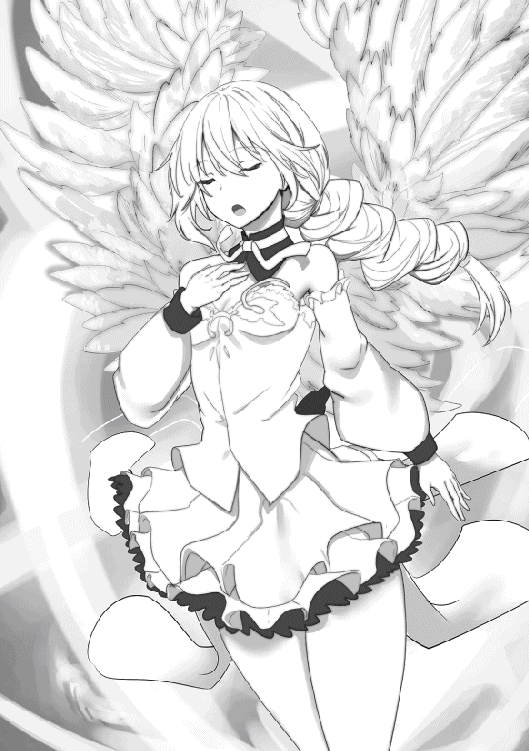
「真打」
男はブレスレットを取り出した、それを自分に使った。
輝く光が男を包んだ。男は歌い出した。
それまでの喋り方から想像もつかないような、低くて渋い、しかしいい歌声だった。
「イノリ」
俺は静かにイノリに命じた。イノリの歌が男に向けられた。
イノリと男の歌がぶつかった。
光の翼がまた現れた。
あれは多分......この国の信仰の源、女神レディの加護なんだろうな。
女神の加護を得たイノリの『ちーと』は更にパワーアップした。男の歌さえも圧倒した。
リサの時と同じく、男の歌が途切れ途切れになっていく。
しかし、体に変化はない。
「どういう状態異常なんだ？」
「多分だけど」
コハクが冷静に言った。
「今までに出なかった状態異常だと思う」
「今までに出なかった......なんだ？」
男の様子を見守った。
やがて、体に異常がまったく見られないまま、男の歌が完全に止まった。
「──」
男は自分の喉を押さえた。必死に声を出そうとした。
これは、そうか。
「沈黙......」
状態異常、「沈黙」。
歌の国にあって、それはある意味「死」と同義の物であった。
俺のつぶやきを聞いた男の表情は驚きと、そして恐怖に染まった。
更にブレスレットを取り出し、輝く光を取り込んだ。
しかし、沈黙は解けない。
声がまったく出なくなっている。
男の恐怖は更に絶望へと変わっていく。
──決着。
俺はなんとなく、それを悟ったのだった。
サローティアーズ王国、王都マーキュリー。
玉座の間で、一人で国王に謁見した。
男を倒した後、何事もなく数週間がたった。
総選挙は問題無く行われて、新しい大統領が決まった（下馬評通りＳランクアイドルのナナという女だった）。
大統領になった彼女に会って、親書を届けてきた。
それらを含めた事件の顛末を国王に報告した。
報告を静かに最後まで聞いた国王は、落ち着いた声で俺をねぎらった。
「ごくろうだった。それで例の男はどうなった？」
「それが......」
俺は眉をしかめた。
「倒した後、そのままプルルージュ側に引き渡したんだけど、次の日に死んだって言われました」
「死んだ？ どういうことなのだ？」
「牢屋にぶち込んだんだけど、次の日看守が確認したら死んでいた。真っ白な灰になってて、確認する過程で死体そのものが崩壊したらしいんだ」
「なんと......女は？ そなたの幼なじみ、アイドルになったという、あの女はどうしている？」
「リサは......記憶を無くしてます」
「記憶を？」
「こっちは回復した後に話を聞こうとしたんですが、記憶が完全に無くなってた。男の事も、アイドルになってライブをしてたことも全部。魔法にかけてみたけど、本気で何も覚えてないらしい」
「むぅ......となると、証拠はなにも無しか」
「一応」
俺はポケットからブレスレットを取り出した。
輝きを失った例のブレスレットだ。壊れなかった物を一つ拾って、取っておいたのだ。
「あの男が使ってた物です。多分ロックと同じ物だと思います」
「......こっちで預かろう。調べてみたら何か分かるかもしれん」
国王がそう言って、手をかざした。
兵士が一人やってきて、俺の手から受け取った。
受け取った兵士が下がって行き、俺は国王と見つめ合った。
国王は穏やかな、しかし真剣な口調で言った。
「もしもの場合はまた動いてもらうかもしれぬ」
「分かってます」
俺ははっきり頷いて、即答した。
言われるまでもない、むしろそうしなきゃダメだと俺も思う。
ロックと同じブレスレット、正体不明で危険な物が違う人間の所から出てきた。
更にどっちも、未だはっきりしない何かを企んでる。
何かがある、俺達がまだ知らない何かが。
ここまで関わってしまった以上、このブレスレットがこの先まだ出てくるのなら、何か関係した事があるのなら。
それに協力しなきゃだめだろう。
今の所、それに一番深く関わってるのは俺なんだから。
「さて」
一転、国王は明るい声で言った。
「報酬を渡さねばならんな。親書を無事届けてくれたのだ。なにかほしい物はあるか？」
「お金を下さい。ローンを払わなきゃならないので」
またも即答した俺。
コハクから前もって報酬の事を言われるって聞いてたから、何を要求するのか決めていたのだ。
「ローンというのは家のローンの事か？ 前に払ってやったはずでは？」
ああ、そう言えば言ってなかったっけ。
俺は国王に説明した。ローンを払い終えたあと、増築してまたローンを抱えたことを。
「なるほど、ならそれも払っておこう」
「本当ですか？」
「なあに、そなたの働きに比べれば安いものだ」
「ありがとうございます！」
俺はテンションが上がった。
これで増築した分のローンも完済。
あの家、四人の奴隷と暮らせる五ＬＤＫの家は完全に俺の物になったと言うことだ。
テンションもあがろうってものだ。
その後国王と取り止めのないやりとりをして、玉座の間をでた。
こうして、今回の事件はとりあえず区切りがついた。
プルルージュ共和国への出張で得た物は、深まる謎と、新しい戦いの予感。
そして完済した自宅と、新しい奴隷。
差し引きでプラス。そんな旅だった。
☆
ハードが謁見中に街中で待機する四人の奴隷達。
彼女達はカフェのオープンテラスにいた。
待機中で、のんびりしていていいはずの奴隷達だが、サヤカとコハクはものすごく険しい表情をしていた。
険しい表情で、王都の人々を見つめ──いや睨みつけている。
「サヤカちゃんコハクちゃん、二人とも何してんの？」
「練習」
「『ちーと』発動の相手探しの練習」
「ついでに、みただけで相手の力をすぐに分かる用になる練習」
「練習って......それ修行っぽいんだけど。なんでそんなことしてんの？」
ルナが聞くと、サヤカとコハクは通行人を睨みつけるのをやめて、視線を交換した。
さっきまでの鬼気迫る程の真剣さから一転、意気消沈した様子である。
「今回のわたし達、あまりハードさんの役に立てなかった」
「相手に研究され尽くして、ご主人様の役に立てなかったどころか、足を引っ張ってしまった」
「次は役に立てるようにがんばるの」
「役に立つ......」
つぶやくルナ。
そして、立ち直って、真剣な表情で決意を語るサヤカとコハク。
「ハードさんのために頑張る」
「ご主人様の力になれるように。ご主人様がでーんと構えていられるだけでよくなるくらい強くなる」
「うん、何かあったら、わたし達が全部やっつけてしまえるくらい強くなりたい」
強く決意を語るサヤカとコハク。
すると、それまで黙ってたイノリが歌い出した。
何を話すでもなく、いきなり歌い出したのだ。
街行く人々が立ち止まって、聞きほれる程の歌を。
サヤカもコハクも、ルナもすぐに分かった。
あまり口を開かないイノリ、これが彼女の決意だ。
サヤカとコハクと同じようにハードの力になりたいと。そのために自分を磨こうと。
そういう決意だ。
「うん、ルナも頑張る」
サヤカ、コハク、ルナ、イノリ。
四人の奴隷は決意を固めて、自分が出来る事をもっと伸ばして、もっと昇華していくと決意した。
ハードはご主人様ということにこだわっている。ならば自分達も奴隷である事にこだわろう。
なにがあっても、ご主人様が悠然と構えているだけでいい。
なにが起きても、奴隷の自分達が全てを排除できるように。
そんな奴隷になろうと、四人は心を一つにしたのであった。
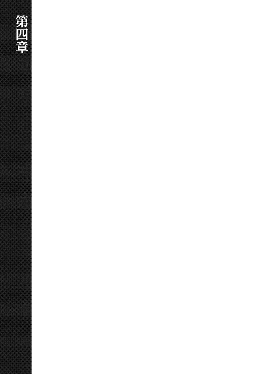
誰にも起こされることなく、俺は目覚めた。
まだ夜が明ける前、窓の外は白みはじめたばかり。
夜型の人間はそろそろ眠りにつき、朝型の人間が動き出すまでにもうしばらくかかる。
そんな、一日の中でもっとも静かな時間帯。
俺は体を起こして、ベッドからおりた。
部屋のドアを開けて、リビングに出た。
そこに立って、家の中を見回す。
手に入れた俺の家、夢のマイホーム。
増築に増築を重ねて、今や七ＬＤＫになって、豪邸とも言える建物に成長した。
一つ目の部屋の前に立つ。
『サヤカ』、ってネームプレートが掲げられている。
ドアを開けて、中に入る。
黒い髪の女の子が、可愛らしいパジャマ姿で静かに寝息を立てている。
ベッドの上で体をまるめて、まるで幼い子供のようだ。
サヤカ、俺の最初の奴隷。
全ての始まりとも言える。
リユ銀貨十九枚とイバ銅貨を山ほど積んで、奴隷商人から買った奴隷。
彼女に奴隷指輪をつけた瞬間、全てが始まった。
理由は今でも分からない。でも、俺の奴隷になった子は『ちーと』という普通じゃあり得ない能力を使える様になる。
サヤカの『ちーと』は、自分のパワーとスピードを戦う相手の十倍にするという力だ。
相手がどんなに強かろうが弱かろうが、早かろうが遅かろうが、きっちりその十倍になる。
ある意味最強の力だ。
今まで頑張ってくれたサヤカをねぎらうように頭を撫でてやってから、部屋を出た。
次の部屋に入る。
足元まで届くくらい長いツインテールをそのままに、ベッドの上で正しい姿勢で寝ている女の子。
コハク・サローティアーズ。
俺の二人目の奴隷。
サローティアーズ王国の王女だったのだが、父親が何者かに囚われた事件で俺に協力を求めてきて、その事件の中で奴隷になった女の子。
奴隷になった代償に、彼女も『ちーと』を持った。
コハクの『ちーと』はサヤカのものとよく似てる。
魔力と詠唱速度が敵の十倍になる『ちーと』だ。
言うまでもなく強力だが、魔力がゼロって相手もいるので、そういう意味ではサヤカの『ちーと』よりちょっと使いづらい。
それでも十分に強すぎる能力だ。
彼女のさらさらツインテールに指を通してから、部屋を出た。
次の部屋に入った。
部屋の中には誰もいないように見えたが、俺は天井を見上げた。
そこに彼女がいた。
天井からぶら下がって、コウモリのように寝ていて、二本の特徴的なアホ毛をゆらしている女の子。
ルナ・Ｇ・クレイドル。
コハクいわくＧの意思を受け継ぐ一族、Ｇの意思とやらは何かは知らない（サヤカは知ってるみたい）が、そんな事関係なく俺の三人目の奴隷。
ロックという男に利用されて仲間ごと使い捨てにされて、その報復の為に俺の奴隷になった。
当然、『ちーと』を持つ。
ルナの『ちーと』は、俺と手をつないでるときだけ時間を止めることが出来る。
そして止まった時間の中では、俺とルナは（手をつないだまま）自由に動くことが出来る。
時間停止、文句なしに強い能力だ。
彼女に近づいて、手を伸ばして、下からアホ毛を引っ張った。
ぐいぐい、ぐいぐい。。
ルナはえへへへ......と嬉しそうに笑顔を綻ばせた。
俺まで嬉しくなった後、部屋を出た。
次の部屋に入った。
今度もベッドの上に誰もいなかった。
まわりをきょろきょろ見ると、部屋の隅っこで、体育座りで寝ている彼女を見つけた。
イノリ・ミラクル。
一見普通の女の子に見えるが、実は人間と歌う手というモンスターとのハーフだ。
彼女は俺の四人目の奴隷だ。
『ちーと』は、歌うこと。
歌うことで、敵にあらゆる状態異常を押しつける。
眠り、毒、出血、沈黙......。
この世に存在するありとあらゆる状態異常を与える事ができる。
最初は地味に思った事もあったが、歌を聴いただけで同時に血が出たり眠くなったり毒に侵されたりする事を考えたら、やっぱり『ちーと』にふさわしく、とんでもない能力だと分かった。
そんな彼女を優しく抱き上げて、お姫様だっこでベッドに運んだ。
生活に無頓着なんだから、こいつは。
布団を掛けてやった後、部屋を出た。
この四人が、一緒に住んでる奴隷達である。
そこに俺を入れて、今は五つの部屋が使われている。
そして、この前ローンを払い終えたことで、この家は更に増築されて、部屋が七つになった。
つまり、奴隷を更に二人増やせる様になった。
次はどんな子にするかな、どんな子と出会うかな。
そんな事に期待を膨らませながら、俺は自分の部屋に戻って二度寝をした。
今日もまた一日、奴隷達との素晴しい日にするために。
朝、リビングで奴隷の四人と朝ご飯を食べてると、コハクが真顔で言ってきた。
「ご主人様。この家の部屋がまた増えたね」
「うん、増えたね。五部屋だったのが七部屋になってる」
「新しい部屋も奴隷用なの？」
コハクの言葉に、他の奴隷達が一斉に手を止めて俺を見た。
「そのつもりだけど、どうかしたのか？」
「ご主人様にこのお願いをするのは失礼なんだけど......次の奴隷、家事が出来る子がいいなって」
コハクは申し訳なさそうに言った。
「うん、わたしもそう思う」
「だねー。ルナも家事が出来る子がいないとダメって思う」
「......」
サヤカとルナがコハクに同調した。イノリは何も言わず、茫漠とした表情のまま俺を見つめている。
「家事か」
「うん、だってわたし達......みんな家事が苦手で」
更に申し訳なくしおれるコハク。
......よく考えたらそうかも知れない。
コハクは元お姫様だ、家事スキルなんてあるはずもない。
ルナはサバイバル生活をしていた期間が長くて、野宿スキルはあるけど家事スキルはない。
イノリは論外。
唯一家事が出来そうなイメージのあるサヤカだが、
「ごめんなさい、わたしもダメです......」
「そうなのか」
謝るサヤカ、頷く俺。
とにかく理解した、奴隷たちは全員家事が苦手だって事を。
「だからご主人様」
「うん、分かった」
頷いて、四人をみる。
そして宣言するかのように言う。
「次の奴隷は家事出来る子にする」
そう言うと、イノリをのぞいた三人は安堵の表情を浮かべた。
☆
プリブの街、ウェッティ奴隷商会。
サヤカを買った店にコハクと二人でやってきた。
中に入って、奴隷を買いたいって言った。
最初はけんもほろろだったが、コハクがフルネームを名乗った直後、店の人が慌てだして、俺達を奥の部屋に通した。
そこで少し待ってると、サヤカを売ってくれた男、商会の主・ウェッティが入って来た。
ウェッティはこっちを見てぎょっとした。
なぜなら、俺は客用のソファーに座っているけど、コハクは俺の横に立ってる。
王女だと名乗った彼女が、まるで使用人のように俺のそばに立ってることに、ウェッティはぎょっとしたのだ。
「はじめまして、当商会の主、ウェッティと申します」
「はじめてましてじゃない、前に一人奴隷を売ってもらった事があるんだけど」
「──失礼いたします」
ウェッティは慌てて頭を下げた。
なんだ、サヤカの事は覚えてないのか。
「それで......本日は奴隷をお求めになりたいとのことで？」
「ああ、そうだ」
「左様でございますか......」
ウェッティは眉をしかめた。
「それが、今奴隷の在庫がなくて」
「そう言えばサヤカの時もそんな事を言ってたっけ。えっと、なんとかという男爵が大量に予約したんだっけ？」
「ココダラ男爵でございます」
知ってるなら早い、って顔でウェッティが答えた。
「まだそっちの納品も終わってないんだ」
「左様でございます──」
やっぱりコハクがすごく気になるのか、ウェッティは彼女をちらちら見ながら話す。
「コハク」
「はい」
「座っていいよ。それとコハクが代わりに話を聞いて」
「分かりました──ご主人様のお許しが出たので、これからはあたしが話を聞くわ」
「は、はあ......」
「奴隷の納品が原因は？ ご主人様が前に奴隷を買ったときから、だいぶ時が経ってるはず、なんで滞ってるの？」
「それが、近頃妙なのです。ご存じの通り、奴隷は貧しい家から仕入れてくるのですが、最近売ろうとする所が少なくて参っているのです」
「売ろうとする所が少ない？」
「東の、不作している農村のあたりにも人をやっているのですが、そこも不作しているくせにほとんど売ろうとしなくて。いやはや、何がどうなっているのやら」
ウェッティは眉間を揉んだ。
どうやら本当に奴隷が仕入れられてなくて困ってるみたいだ。
俺はコハクとアイコンタクトをして、奴隷商会を出た。
☆
表に出て、サヤカ達三人と合流した。
ウェッティから聞いた話をそのまま伝えると、サヤカとルナは困った顔をした。
「それじゃ奴隷は買えないんですか？」
「実際にいないんじゃ、どうしようもないからな」
「......ご主人様、提案があるの」
「提案？」
「買う事が難しいのなら、ここは一つ、一番古いやり方をしてみない？」
「一番古いやり方？」
「ご主人様の甲斐性を追求しているご主人様なら分かるはずです」
コハクはそう言って、どこか期待している様な目で俺を見つめながら言った。
俺なら知ってる......一番古いやり方......。
「さらうのか？」
「はい」
頷くコハク。
「気に入った子をさらって、無理矢理奴隷にしてしまうんです」
「なるほど、確かに一番古いやり方だな」
大昔の奴隷はそう言うものだって聞いたことがある。
戦いで鹵獲するとか、そもそも奴隷を増やすために村を襲ったりするとか。
今は売買が当たり前だけど、昔はそう言うものだったらしい。
そうしたらどうだ？ ってコハクは言ってるのだ。
「コハクさん、それはどうかな」
「うん、ルナ、無理矢理さらうのはどうかって思う」
「どうして？ なんの問題もないじゃん」
コハクは人差し指を立てて、説明口調で言う。
「よく考えて。問題あるの？ さらってきた子はご主人様の奴隷になれるんだよ」
「ハードさんの......」
「......奴隷」
サヤカとルナは俺を見た。目を見開いてハッとした。
「むしろ......幸運」
今まで黙ってたイノリがぼつりと言った。
「確かにそうかも」
「あれ？ 本当になんの問題もないかも」
「でしょう。あっ、もちろんご主人様の意思次第だけど」
どうかな、って顔で俺を見るコハク。
サヤカもルナも、果てはイノリまでも俺を見た。
どうする？──全員の目がそう聞いて来る。
......そうだな。
一人くらい、無理矢理さらってきた奴隷がいてもいい。
真のご主人様とはそう言うものかも知れない。
「よし、やろう」
俺が言うと、奴隷達が一斉に目を輝かせた。
無理矢理誰かをさらって奴隷にするということに──下手すると俺以上にノリノリな奴隷達だった。
家を出て、一つ星ギルド・ラブ＆ヘイトに向かう。
急ぎの仕事があるって事で、俺はサイレンさんに呼び出されたのだ。
同行した奴隷はサヤカとイノリ。
イノリはまだ自分で歩けなくて、台車に乗って俺が押している。
それで街中を歩くと結構視線を集めるが、
「......」
イノリはまったく気にしてないようだ。
もともと、ほとんどの事に無頓着なイノリだ。見られたくらいで動揺するような性格じゃない。
「なんか......子連れ狼みたい」
サヤカがぶつぶつ言った、声がいつもより少し大きかったから、はっきり聞こえた。
「子連れ狼って、サヤカの故郷は狼が台車を押すのか？」
「え？ ううん、そうじゃなくて、そういう名前の......剣豪？ みたいなのがいるんです」
「よく分からないネーミングセンスだな」
「この世界の人に言われたくないですよぉ......」
またなんかつぶやいたが、今度は声が小さすぎて聞き取れなかった。
声が小さかったのもあるけど、俺がまわりをきょろきょろ見回しているのも原因の一つだった。
「いい人います？」
「うーん、なんかピンとこないな」
「そうですか。そういう時ってどんな感じなんですか？」
サヤカはイノリをちらっと見て言った。
奴隷達のお願いを叶える形で、俺は新しい奴隷を作る事にした。
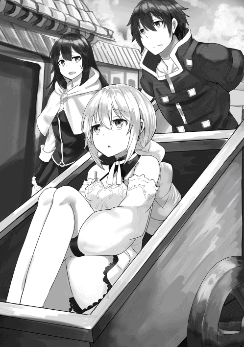
今は失われた古き良き伝統、最古の奴隷をリスペクトする意味で無理矢理さらうのも考えているので、ギルドに向かう道すがらに物色していると言うわけだ。
それをサヤカが聞いてきた。
イノリを見たのは、俺がイノリの身の上話を聞いた瞬間、奴隷にするというのを目撃してるから、その時の事を聞きたいんだろう。
「そうだな......ピンとくるんだ。ああ、この子が欲しいな、って」
「それだけですか？」
「それだけだ」
「......その、わ、私の時もですか？」
「ああ、サヤカの時も」
俺は即答した。
サヤカの時もそうだった。彼女を見た瞬間、この子にするしかないという運命を感じた。
「そうですか......えへへ......」
サヤカが嬉しそうににやける中、台車を押してギルドに向かう。
結局、そうしたい相手が見つからないままギルドについてしまった。
扉を開けて中に入る。いつものギルド。たくさんの冒険者。
「ハードだ」
「ハード・クワーティ......」
「Ｆランクのご主人様......」
俺たちは注目を集める中、サイレンさんが待っているカウンターに向かって行く。
「悪いね。いきなり呼び出したりして」
「いえ」
「そっちの子は？」
サイレンさんは台車に乗ってるイノリを見た。
「俺の奴隷の一人、イノリって言うんだ」
「へえ、台車に乗ってるのは、なんかのプレイ？」
「いろいろあって、今は歩けないんだ」
「歩きたくない......でござる」
イノリは綺麗な声でぼそっと言った。
「あはは、ニート奴隷ちゃんだ」
「あなたの足が舐めたい──」
「あんたはあらゆるプレイ禁止♪」
カウンターの向こうから手を伸ばしてくる旦那（？）にすっ飛んでいって折檻するサイレンさん。
途端、ギルドに歓声やはやし立てる声が沸き起こる。
旦那さんへの折檻って名物化してるんだな。
にしても、あの旦那さん......いや、考えるのやめとこ。
最初はコハクが化けてたはずだから今のは？ とか余計な事は考えないようにしよう。
折檻を終えて戻ってきたサイレンさんに聞く。
「それで、電書ハトを使って俺を呼び出したのは？」
「人助けをしてほしいの」
「人助け？」
「そう。もう気づいてると思うけど、各地のギルドをまとめる上の組織があるのね」
「そりゃそうですよね」
サイレンさんの言うとおり、今までの事で何となくそんな感じはしていた。
「で、その組織の監察官がプリブに来てうちを視察したんだけど、帰り道にモンスターに襲われて、さらわれちゃったんだ」
「それ、大変なことですよね」
「大変だよ。プリブの近くだし。一応うちの管轄内だから、ちゃんと助けないと色々まずいんだ。無事に監察官を助け出す。これは難易度Ｓランクの依頼だよ」
珍しく真顔のサイレンさん。
結構大事だな。と俺は思ったのだった。
プリブの街を出て、監察官が襲われた場所にまず向かった。
「どういうモンスターなのか分かってるんですか？」
「えっと......冥土ってモンスターだな」
「メイド......って絶対普通の冥土じゃありませんよね？」
またぶつぶつ言うサヤカ。
「どういうモンスターなんですか？」
「文字通り冥土、あの世の土でできたモンスターなんだ」
「あっ、そっちの冥土なんですね」
「大抵は人型だけど、たまーにゴリラっぽくなるんだ」
「なんかそう言うの知ってるかもしれません」
「そうか」
俺は台車を押しながら、イノリを連れてサヤカと一緒に教わった場所に向かった。
冥土なら、サイレンさんがサヤカを連れてきてと言ったのも分かる。
あれはパワーだけの脳筋モンスター、サヤカだったら百％勝てる相手だ。
しばらく歩いて、指定された場所に着いた。
「おっ、冥土があったぞ」
「どれですか......ええぇ......」
サヤカは冥土を見た瞬間、嫌そうな顔をした。
「どうした？ サヤカ」
「あれ......メイドさんじゃないですか？」
「冥土だな」
「冥土でメイドですね。メイド服を着たゴーレムじゃないですか？」
「言われてみるとそうだな」
モンスター、冥土はフリフリのエプロンドレスを着ていた。
「もう、変なモンスターばっかり！」
「そうか？」
「エンシェントモンスターとかの方がよかったです」
それの何がいいのか分からないが......まあ、それはともかく。
「おっ、あそこに見えるのって監察官のウマ車じゃないのか？」
「冥土に囲まれてるあれですか」
「ああ」
視線の先で何体もの冥土が一箇所を取り囲んでいた。
冥土に遮られててよく見えないが、確かにウマ車っぽいものがある。
「よし助けよう。サヤカ頼む」
「うん！」
そう言ってサヤカが飛び出した直後、
「私も」
それまでぼうっとしていたイノリが口を開いた。
そして、歌い出す。
綺麗な声で歌い出す。
歌は冥土に向けられた。
サヤカが到達する前に歌を聴いた冥土に状態異常がかかった。
「すごい、冥土なのに出血とかしてるぞ!?」
土のモンスターなのに出血したり毒になったりする冥土を見て、イノリの歌がまた強くなったんじゃないか、って思った。
一番奥のヤツに至っては石化した。
土で出来たモンスターなのに石化した。
すごいなイノリ。
イノリの歌で状態異常にかかった冥土にサヤカが飛びかかって、一体ずつきっちり倒していった。
『ちーと』を持つ俺の奴隷達の大活躍で、冥土は綺麗さっぱり一掃された。
「ハードさん！ いました！ 中に人がいます！」
冥土を倒したその足で、ウマ車の中を見たサヤカが俺を呼んだ。
イノリの台車を押して、ウマ車に近づいていく。
「よかった、頭にたんこぶができてますけど大丈夫みたいです」
「そうか──っ」
追いついて、サヤカの後ろからウマ車の中をのぞき込んだ俺は息を飲んだ。
中にいる監察官らしき人間に、息が止まるくらいの衝撃を覚えた。
「どうしたんですか、ハードさん？」
「この人だ......」
「え？」
「この人を奴隷にしたい」
「......おお！」
サヤカがポンと手を叩く。
イノリも、ちょっとだけ興味が湧いたかのようにウマ車の中をのぞき込んだのだった。
ウマ車の中で気絶している相手を改めてよく見た。
スーツを着た若い女だ、髪は短く切りそろえられていて、体型はすらりとしてて、短いスカートから伸びている引き締まった足は活力とエネルギッシュさを感じさせる。
そして、俺はピーンと来ている。
見た目の全てを吹っ飛ばすような直感、この人が奴隷になったら絶対......という直感。
彼女を奴隷にしたい。改めて決意を固めた。
「これからどうしますか？ ハードさん。このままさらっちゃいます？」
「いや」
サヤカの提案を即答で却下する。
「いったんプリブに連れて帰って、サイレンさんに報告する」
「どうしてですか？ この人を奴隷にするんじゃないんですか？」
「さらって奴隷にするのなら、作法を守らないとだめなんだ」
「作法？」
サヤカは首を思いっきりかしげた。
「そうだ、作法だ」
「よく分からないですけど......ハードさんらしいのは分かりました」
「ご主人様、マニア」
サヤカが納得して、イノリがぼそっとつぶやく。
そのサヤカも納得したところで、この人をプリブまで護送するか。
ウマ車を動かそうとすると、それまで気を失っていた女がうめき声を上げて、ゆっくりとまぶたを開いた。
焦点の定まらない視点はしばらくの間さまよったが、やがて俺たちをきっちりと見つめて来るようになった。
「お前達......何もんだ？」
「ギルド『ラブ＆ヘイト』に所属してる冒険者です」
サヤカが自分のギルドカードを取り出して正体を明かした。
Ｓランク冒険者だと明記してるギルドカード。いままで、何回かこういうのが必要な場面があって、Ｓランクの冒険者だって名乗った方が話が早いと経験してきたから、サヤカはご主人様の俺【Ｆランク】を差し置いて名乗った。
「ラブ＆ヘイト？ あぁ、そういや救援飛ばしてたっけ」
ハスキーな声にはすっぱな口調。
パリッとしたスーツを着こなしている執政官のイメージから若干外れたものだ。
サヤカも同じ事を思ったのか、ちょっと困った顔で俺をちらっと見た。
「えっと、大丈夫ですか？ どこかにおケガは？」
「うーん、大丈夫みたいだ。うん、どこもケガしていない」
「よかったです」
「それじゃあ、あたいをいったんプリブまでつれてってくれ。えっと、あんたの名前は？」
「ハード・クワーティだ」
「ハードか。あたいはフィーユ・スーパーソニックだ。ひょろっちくて頼りないけど、ちゃんと頼むよ」
「ひょろっちいのは余計だ」
確かに見た目そんなにごついわけじゃないけど、そこまで言われるようなものでもないだろ。
「それじゃあ戻ろう。サヤカ、イノリ。帰り道も頼む」
「うん！ 任せて」
「それよりも」
「どうした？ イノリ」
「なんで、こっちに頼んだの？」
いつも通り茫漠な瞳のまま指摘するイノリ。
感情の揺れがあまりにもフラットすぎるから、一瞬何を言ったのか分からなかった。
「......なんで、サヤカじゃない？」
「......あ」
俺もようやく気づいた。
フィーユはサヤカにじゃなくて、俺に言ってきた。
ギルドカードを見せて、Ｓランク冒険者だと名乗ったサヤカじゃなくて、名乗ってもいない俺にだ。
なぜ？ って思ってフィーユを見ると。
「そんなの見りゃ分かんだろ」
けろっとした顔で言われた。
「短いやりとりの中でも、その二人はあんたの事を見ていた。何かあるとあんたの方をな。視線の流れで集団のボスが分かるもんさ」
「すごいな......」
交わした言葉は一言か二言、時間にすれば三分もなかったはずだ。
そのわずかな間で分かったっていうのか。
「リーダーがどう見ても頼りねえけど、その二人が信用してるみたいだから、信用する事にした」
「だから頼りないのは余計だって」
あけすけなフィーユの言葉に苦笑いを禁じ得なかった。
ウマ車を動かしてプリブの街に引き返すと、
「ハードさん」
「ん、どうした？」
「本当にするんですか？」
押し殺した声で囁いて、ウマ車をちらっとみるサヤカ。
顔はいかにも不機嫌そうにしてて、それがフィーユに向けられているのがはっきりと分かった。
俺の事を悪く言うあいつは嫌い、ってことなのかな？
「いやか？」
「......」
サヤカは、はいともいいえとも言わなかった、唇を尖らせて拗ね顔をするだけで何も言わない。
うーん、どうしたものか。
正直彼女にしたい。見た瞬間ピーンときて、絶対にいい奴隷になるって確信したけど、サヤカが嫌がるのなら、考え直さないといけないのかもな。
「なあ」
迷っていると、フィーユに声をかけられた。
「どうした」
「あんたハードって言ったな、もしかしてエルーガとプルルージュの事件を解決した、あのハードか？」
「そうだけど」
「へえ......」
フィーユはまじまじと俺を見た。
どうしたんだろうかって思っていたら、彼女はウマ車から跳び降りた。
ウマ車を空にして、わざわざ俺の隣に並んで歩いた。
「なあ、それらの事件をどう思う？」
「どう思うって」
「とぼけんなよ。それの裏にいる連中がまた現れるって思うか？ って聞いてるんだ」
「それは......」
俺は少し考えた。
エルーガとプルルージュ、二つの事件に共通しているのがあの不思議な腕輪だ。
何か裏がある、二つの事件は繋がってるってはっきりと分かる。
そして、完全解決したとは思ってない。
また現れるのか、っていう質問なら、
「多分だけど、また──」
「ハードさん！」
答えようとした瞬間、サヤカが緊迫した声で俺を呼んだ。
馬がいななき、前足をあげてバタバタして、ウマ車が止まる。
何事かと見ると、進む先に冥土がいた。
メイド服を着たゴーレムのモンスター、冥土だ。
それが五体、結構な数だ。
そのうちの一体が天を仰いで咆哮し、もう一体がメイド服姿で四股を踏んで大地を揺るがした。
でも。
「サヤカ、任せる」
「うん！」
さっき戦った時もそうだが、冥土はパワーだけのモンスターだ。そしてサヤカは相手の十倍のパワーになる『ちーと』を持ってる。
万に一つも負ける事はない相手だ。
俺に任されたサヤカは、嬉しそうな顔をして飛び出していった。
冥土の一体が放ってきたパンチを掴んで握り潰し、別の冥土が揺らした大地を同じく四股を踏んで揺れを止めた。
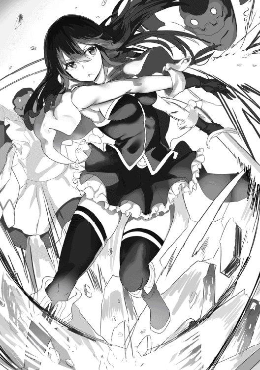
五体の冥土をそれより遥かに上回るパワーで砕いていく。まるっきり勝負にならない、安心して見ていられた。
そうだ、話の途中だった。
「悪い、あの連中だけど──え？」
フィーユの方を向いて話を続けようとした俺は目を疑った。
ウマ車から跳び降りたはずのフィーユはそこにはいなく、ウマ車に戻っていた。
まるで雷から逃げて布団に潜り込むかのように、ウマ車に潜り込んで震えている。
突き出したスーツのお尻が色っぽかったが、震えていてそれどころじゃない。
「フィーユ？」
「な、何でも無い！ 何でも無いぞ」
「いや、なんでもないって言われても」
尻を隠さず──な状態のまま強がるフィーユ。何もなくないのは明らかだ。
「ぐおおおお！」
「ひゃん！」
冥土が更に咆哮して、フィーユは小さく悲鳴を上げる。
モンスターが怖いのか？
サヤカが冥土を圧倒する中、俺はフィーユが見せた意外な一面に戸惑っていた。
フィーユは頭を抱えて、頭下尻上なポーズでガタガタ震えていた。
「......」
「神様助けて！ もう悪いことは二度としないから！」
「......」
「炊き出しに参加してこっそり栄養剤混ぜ込むのも、孤児を引き取ってスパルタなエリート教育を押しつけたりするのも、クレーマーに遅効性の毒を仕込んで巣に戻った後にまるごと全滅させたりするのも、二度としないから」
「......」
いや、それはいいことばっかりなんじゃないのか？
冥土に怯えてなにやら神様に懺悔を繰り返しているフィーユだけど、どれもこれも良いことばかりに聞こえる。
「お願い、神様助けてください！」
「......」
「......」
「......」
「......ゴホン」
フィーユが我に返って、立ち上がって咳払いした。
冥土はサヤカに一掃されて、この場からモンスターがいなくなった。
そのせいか、フィーユはさっきまでのフィーユに戻った。
「別にモンスターが怖いってわけじゃねえ」
「いや、何も言ってないけど」
「本当だぞ、本当だかんな。ブラックドラゴンもケルベロスも怖くねえし、オークにつかまっても絶対に負けねえ！」
一気にまくし立てるフィーユ。
「そうか」
「本当だかんな──」
「ぐおおおお！」
反対側から更に一体の冥土が現れた。
服の裾がビリビリする咆吼に、フィーユがまたしても頭下尻上なポーズで頭を抱えて震えだした。
冥土はサヤカが瞬殺した、危険はまったく無い。
それでもフィーユは震える。
「も、もういないか？」
「ああ」
「大丈夫ですよ」
戻ってきたサヤカがフィーユの顔をのぞき込む。
「また出たら私がやっつけますから」
「う、うん。頼むな......？」
涙目のフィーユ。その姿を見て、俺は庇護欲を掻きたてられた。
「冥土が怖いのか？」
できるだけ優しげに、そして真面目な顔で聞く。
また意地を張ろうとしたフィーユだが、俺の顔を見て、観念したように言いだした。
「冥土だけじゃねえんだ、ああいうモンスターが苦手なんだよ」
「ああいう？」
「ああいうのだ」
フィーユはチラチラと、恐る恐るうかがうような視線を倒された冥土に向けた。
「冥土とか、クレーマーとか、ケルベロチューとか。ああいうふざけた連中のことだ。エンシェントモンスターとかなら全然こわくねえんだが」
「そういうもんなのか──」
「分かります！」
横からサヤカが身を乗り出して、ものすごい勢いでフィーユの手を取った。
「ああいうモンスターっておかしいですよね！ 絶対悪意がありますよね創造者の！」
「分かるか！ 悪意あるよな！」
「はい！」
二人して盛り上がるサヤカとフィーユ。
事故物件がおかしいだの、クレーマーがひねりすぎだの、冥土が悪ふざけしすぎだの、
そんなことで盛り上がっていた。
「エンシェントモンスターの方が素直ですよね」
「だろ？ だろぉ!?」
普通のモンスターが嫌でエンシェントモンスターの方がいいって感覚は、俺にはまったく分からなかったが、サヤカとフィーユが仲よさそうにしているのは、将来的にもいいことなのだと思ったのだった。
☆
プリブの街、ギルドラブ＆ヘイト。
フィーユを護衛して戻ってきた俺たち。
道中、他のモンスターが出ることなく、無事にフィーユを連れて帰ってきた。
事情を知ってる冒険者達が救出されたフィーユを見てざわざわしていた。
「ただいま戻りましたサイレンさん」
「ハード！ それにスーパーソニックさん」
出迎えたサイレンさんは驚き、そして安堵と表情を変えていった。
フィーユの呼び方が名字と「さん」付けなあたり、いろんな責任やら、そこにくっついてる安堵やらが見えてきそうな感じだった。
「すまねえ、迷惑かけちまったか」
「そんなことありません。スーパーソニックさんが無事ならよかった」
「あたいの捜索に何人動員したんだ？」
「そこにいるハードだけです」
「あいつらだけ？」
フィーユは驚いた顔で俺の方を見た。
「あたいが言うのもなんだけど、こういう時百人くらいまとめて出さねえか？」
「彼なら大丈夫だと思ってましたから」
「へえ......？」
今度は興味深そうな目でじろじろ見られた。
「まあいい。ハードビート、宿を用意してくれ、今日はこの街に泊まって行く」
「分かりました」
「俺の腕の中でお休みなさ──」
「シャレにならない人を口説かない、の♪」
カウンターの向こうからフィーユを口説こうとするサイレンの旦那さん（？）はきっちりと折檻され、まわりに爆笑を提供した。
「ありがとうね、ハード。お礼は今度ちゃんとするから」
「分かった」
サイレンさんにそう言って、サヤカを連れて、イノリの台車を押してギルドを出た。
いったん家に戻ろうとする帰り道、サヤカが眉をひそめて口を開く。
「すごい人なんですね。私たちがダメなときは百人だったり、サイレンさんが敬語を使ってたり」
「そうみたいだな」
「でもさらうんですよね」
「ああ」
俺ははっきり頷いた。
一目見てピーンと来た相手だ、何が何でもさらって奴隷にしたい。
「どうしたら良いですか？ 私は何をすればいいですか？」
「ノリノリだなサヤカ」
「だって、フィーユさんとすごく気が合いましたもん。早く仲間になりないなって」
「なるほど」
二人はモンスター談義で花を咲かせて意気投合してたし、ノリノリになるのも分かる。
「やっぱりギルドに救援の依頼を出させないように動くべきですよね。となると誰知れずさらったほうがいいか──そうだ、イノリちゃんの歌で混乱させて、自分から来てくれるように見せかけるのはどうですか？」
本当にノリノリなサヤカである、普段はそんなに強く主張するタイプじゃないんだが、ものすごいノリノリでやり方を考えていた。
「いや、そういうのは必要無い」
「え？ どうしてですか？」
「奴隷を持つ一番古いやり方、相手をさらってくる場合、古の作法に則ってやれば大事にはならない」
「古の作法ですか？ それはどういうものなんですか？」
「それは──」
☆ ｓｉｄｅフィーユ ☆
ギルド、ラブ＆ヘイトの中。
救い出されたフィーユはテーブルに頬杖を突いて考えていた。
「やっぱり......モンスターの数が増えてる」
テーブルの上にいくつかの書類があって、そこに様々な数字が記されている。
ここ最近モンスターの数が増えてるって事を示す書類だ。
フィーユは完全に数字を信用しない。
数字と体感、両方合わせたものだけを信じる。
ウマ車を冥土に襲われた彼女は、ここでようやくモンスター増加を真実と受け入れていた。
「それもこれも......これのせいなのか？」
書類をめくるフィーユ、そこにブレスレットの事が記されていた。
ロック・ネクサス事件に始まって、最近に起きた様々な事件で見るようになったブレスレット。
「もうちょっと詳しく調べる必要がありそうだな。出来れば本物を見てえ」
つぶやき、更に書類をめくるフィーユ。
彼女の目が光る、書類に記された事件解決者の名前を見たからだ。
「これも、こっちにも......」
更に書類をめくると、同じ名前があった。
ハード・クワーティー。事件の中心にいて解決に強く貢献した男の名前。
ついさっき自分を助けた男の名前。
この男の事をもっと知りたい。
フィーユはそう思った。
ドスッ！
書類の横、テーブルの上。
どこからか飛んできた一枚のカードが刺さった。
フィーユはカードを抜いて目を通す。
「今宵、月が真上に達したときにその身と心を頂きに参上します──奴隷さらい!?」
驚愕するフィーユ。
それはすっかりされなくなったやり方、相手をさらって無理矢理奴隷に貶めるためのやり方。
予告状をもって知らせて、その後、予告通りにさらえば合法的に奴隷に出来るという古の作法だ。
「誰か！ 誰かいるか!?」
フィーユは慌てた。こんな時に奴隷になんてなるわけにはいかない。
彼女はサイレンを呼びカードを見せて護衛を要請した。
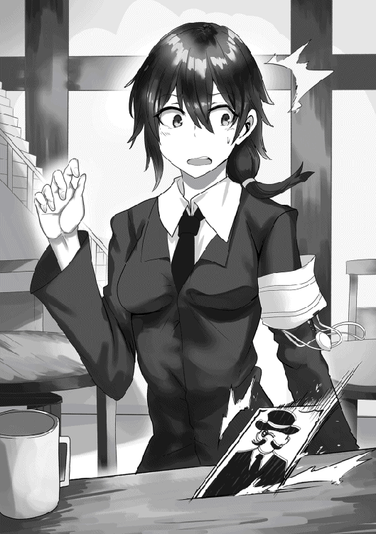
サイレンは早速冒険者を集めて彼女のまわりを固めた。
しかし、その夜。
大勢の冒険者の目の前で、フィーユは忽然と姿を消し、まんまとさらわれてしまうのだった。
☆ ｓｉｄｅフィーユ 終 ☆
帰宅した俺は、留守番していたコハクとルナにフィーユの事を話した。
俺と四人の奴隷、全員が集結したリビング。コハクとルナは真剣に俺の話に耳を傾けてくれた。
「その子がご主人様の欲しい子なんだね」
「ああ、見た時こう、ピピッときた」
「イノリンの時と一緒だ」
と言って目を輝かせるルナ。
「だったら、さらわなきゃ、だね」
「でも......フィーユ・スーパーソニック、だよね？」
コハクがフィーユのフルネームを口にして眉をひそめた。
それにルナが首をかしげる。
「その人ってまずい人？」
「それなりに地位にいる人だよ。そうね......三つ星ギルドのマスターと同等か上、ってところかしら」
「そっか、さらっちゃうとまずい人なんだ」
「ねえハードさん、そろそろ古の作法がなんの事なのか教えて？」
それまで黙って説明するのを待っていたサヤカが口を開く。
戻ってくる道中も説明してる間も、彼女に「マテ」をしていたのだ。
サヤカは説明を求めてる。一方で、サヤカのせかしを聞いたコハクがキラン、と目を輝かせた。
「そっか、その手があったんだ」
「分かるの？」
「うん！ あたし達が頑張ればいいんだね」
「いや、ルナだけでいい。予告も実行も」
「そっか、確かにそれでいけるね」
「だろ、だから──」
「──もう！」
サヤカがダン！ と床を踏んで大声を上げた。
コハクが理解してくれたから、ついつい話を進めて説明をすっ飛ばしてしまった。
「私にも分かるように説明してくださいよ」
「悪い悪い。えっと......コハク、まずはカードを作ってくれるか？ それを使って説明した方が早い」
「そうだね」
頷いたコハク、いったんリビングを出て行って、すぐに戻ってきた。
手のひらの半分くらいの紙のカードを持ってきて、その上にペンを走らせる。
これを使って説明すると言われたサヤカは、注目して書き上がるのを待った。
「出来た！」
「どれどれ......今宵、月が真上に達した時にその身と心を頂きに参上します......うん、バッチリだ」
文面を確認してから、それをサヤカに見せる。
「これが古の作法。こんな風に予告状を出して、その予告状通りにさらえば誰にも文句はつけられない。法的にも確か......」
コハクに視線を向ける。この中で一番そこに詳しいのはコハクのはずだ。
「オッケーだよ。つかまるとすっごく罪が重くなるけど。でもご主人様だし問題ないね」
「だな」
コハクに確認して太鼓判をもらった後、サヤカを見た。
彼女はカードを食い入るようにじっと見つめて、
「......怪盗？」
とつぶやいた。
「これで納得してくれたか？」
「うーん......まあ、納得って言えば納得かなあ」
なんか歯切れが悪いけど、とりあえず納得してくれたのだからそれでいい。
「この世界らしいっていうか、本当にそれでいいのっていうか......」
あっ、いつも通り、ぶつぶつなんかつぶやいてる。
これが出たって事は大丈夫。なんだかんだで納得するパターンだな。
サヤカはクリアしたから、今度はルナの方を向いた。
「頼むぞルナ」
「うん！ 任せて」
ルナは小さくガッツポーズした。
彼女なら、彼女の『ちーと』なら出来る。
確信して、ルナと手をつなぐ。
『ちーと』が発動する、ルナと手をつないでいる間だけ、時間を止めて二人だけ動く事ができる。
「行こう」
「うん」
頷くルナをつれて、カードを持って家を出た。
人々が動かない、空気さえも静止して耳鳴りがするほどの静かな世界の中、ルナと一緒にギルド「ラブ＆ヘイト」にやってきた。
フィーユはテーブルの上に資料を広げて、それを見て難しい顔をしている。
「一発目で見つかってラッキーだ」
「このカードをどうすればいいの？」
ルナも作法をよく知らない方か。
「こうするんだ」
俺はカードを手裏剣のように、フィーユのテーブルの上に投げた。
カードはテーブルに当たって跳ね返った。
「うっ、刺さらなかった！」
「刺さらないといけないの？」
「ああ」
ルナと手をつないだまま、カードを拾って更に投げる。
しかし刺さらない。それを拾って投げて──でも刺さらない。
「むむむ」
「ねえねえ、ちゃんと投げて刺さらないといけないの？ 刺さるように見せかけるだけじゃダメ？」
「見せかける？」
首をかしげる俺。ルナは頷き、フィーユのテーブルに行って、愛用しているナイフでテーブルに溝を作った。
そこにカードを差し込む。
ぱっと見、投げて刺したのと変わらない見た目になった。
「どうかな」
「......うん、これで大丈夫だ。ありがとうルナ」
「えへへ......」
嬉しそうに目を細めるルナ。
そんな彼女といったんギルドを出て、建物の外でつないでいる手を離した。
『今宵、月が真上に達したときにその身と心を頂きに参上します──奴隷さらい!? 誰か！......誰かいるか!?』
壁の向こうでフィーユの驚く声が聞こえた。カードを見て慌てているのが手に取るように分かる。
俺はルナと視線を交わして、互いに親指を立てて、その場からそっと離れた。
そして、夜。
大勢のガードがまわりを固める中、俺はルナと時間を止めて、難なくフィーユをさらったのだった。
「う......ん」
家のリビング。タイラー・ボーンに増築してもらって、広くなったリビングの中央に寝かせていたフィーユがゆっくり目を開けた。
仰向けに寝かされ、焦点の合わない目が左に右にと静かに揺れる。
「気がついたな」
「本当ですか？」
「意外と長く気を失っちゃってたね」
「ごめん、時間を止めているときの手加減ってあんまり慣れてなくて」
「次から......気をつける」
俺の一言に呼ばれたかのように、サヤカ、コハク、ルナ、イノリの四人が一斉によってくる。
「ここ......は？」
「俺の家だ」
「あんたの......はっ！」
急速に目の焦点が合って、覚醒するフィーユ。
パッと体を起こして、ずざざざと壁際まで後ずさる。
「あんた......ハード・クワーティー？」
「覚えててくれたか」
「あたいをさらったのは、あんたなのか？」
「そうだ」
「そう......」
フィーユは俺を見て、四人の奴隷を見た。
最初は眉間にしわを寄せていたけど、四人の「奴隷」を見て次第に納得した様な表情になっていった。
「四人じゃ足りないって言うの？」
「理解が早いね」
コハクがいつもの様にフランクな口調で言った。
「バカにするんじゃない。あんな予告状を出して、その上、四人も奴隷が目の前にいたら、いやでも分かる」
「それでも『なんで？』から入る子が多いけどね」
「うかつだったわ。予告状が届いた段階であんたの事を思い出すべきだった。時刻前に先手を打っておけば......」
「先手を打てればよかったの？」
サヤカが不思議そうに小首を傾げる。
ところどころ常識が欠如している彼女、古のこのやり方自体知らなかったみたいだから、今の疑問もうなずける。
俺は彼女に説明し、答えた。
「予告状を出したら、その予告時刻通りさらわなきゃいけないんだ。早くても遅くてもだめ。正体がばれて先に攻撃されても、反撃してそのままさらう、って訳にはいかないのさ」
「ご主人様と奴隷の伝統だからね」
コハクが補足してくれた。
「大変なんだね」
「そうでもないさ、こうしてさらうことが出来たんだから」
フィーユを再び見た。
彼女は相変わらず眉間に深い縦皺を刻んだまま、下唇を噛みしめてうつむいていた。
「知ってると思うけど、俺は予告を出して、予告通りさらった。だから──」
「どうしてあたいなの？」
フィーユの質問に一瞬虚を突かれたが、答えはとっくに考えてるのでそのまま答えた。
「欲しいからだ」
「理由になってない」
「運命を感じたから」
「うっ──」
フィーユは顔を赤くした。
「家を守る──いや家を任せる奴隷がほしかった。そう思ってたらあんたを見かけて、この人だ、って思った」
「理由になってない！」
「分からないのも仕方ないです」
「それもすぐに終わるけどね」
「うん、奴隷になっちゃったら分かるよね」
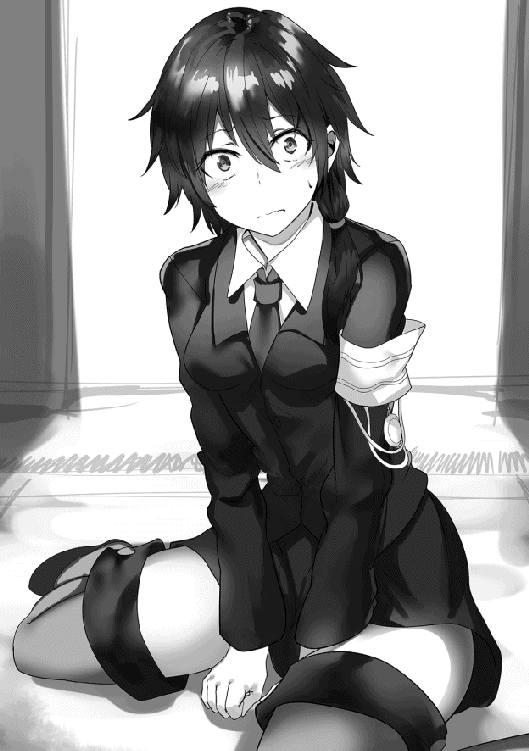
「運命だから」
奴隷達がたたみかけるように言う。経験者としての言葉だ。
「というわけだから」
「まって、あたいは──」
フィーユは何か訴えかけようとしたが、無視する。
みんなの説明は今は分からないかも知れないけど、奴隷になったら、それは自然と解消されるもの。
そして何より、俺は予告を出して、そしてフィーユを予告通りさらってきた。
そうやって古の作法に沿って逆らってきた相手をきちんと奴隷にしないのは、ご主人様失格だ。
甲斐性が無い、と見なされる。
当然それは避ける、あり得ない。
俺は用意していた指輪を取り出して、それを持ってフィーユに迫る。
「まっ──」
「待たない」
一瞬でフィーユを壁際に追い詰めて、手を取って指輪をはめた。
「あぁ......──っ！」
はめられた瞬間、絶望する表情をしたのだが、直後にかっと目を見開かせた。
「来ましたね」
「どんな『ちーと』になるのかな」
奴隷達と一緒に、わくわくしながらフィーユを見つめる。
彼女が戻ってくるのをじっと待った。
しばらくして......フィーユの表情が徐々に落ち着きを取り戻した。
「こういうことなの......でも、どういう事なのこれ？」
「『ちーと』はどんなのになったんだ？」
「ちーと、っていうんだ」
頷く俺、フィーユを見つめて先を促す。
フィーユはしばらく俺を見つめてから、静かな口調で言った。
「そこの......そのテーブルを殴ってみて」
「こうか──いてっ」
「うっ......」
言われた通り無造作にテーブルを殴ると、頭が殴られたような痛みが走った。同時にフィーユも小さく呻いた。
「え？ どういう事なんですか？」
「反射と身替わりだよ」
「反射と身替わり？」
「あたいが指定した相手にした攻撃をそのまま返すのと、その分のダメージをあたいが引き受けるの両方だよ」
「やっぱり運命だね、家を守るのにぴったりな『ちーと』じゃん」
コハクは楽しそうに言った。一方のフィーユはまだ複雑そうだ。
『ちーと』の事は分かったが、だからと言って納得しきってない、そんな顔だ。
だが納得してもらうしかない......いや、俺がそうしなきゃだめだ。
そこは紛れも無く、「ご主人様の甲斐性」が試される所だからな。
「フィーユ、最初のめ──」
「うっ！」
フィーユは、いきなり手を押さえてうずくまった。
微かに見える額から一瞬で脂汗が浮き出ていて、顔はとても苦しそうだ。
「どうしたフィーユ！」
「な、に......これ......」
「フィーユ！」
「は......な......」
「え？」
「離れ、て......」
苦悶に顔をゆがめるフィーユ、最後の力を振り絞って、とばかりに俺を突き飛ばした。
何が起きたのか──と理解する暇もなく事態が急変した。
フィーユの懐から光が漏れ出す。その光はまずフィーユの全身を包んで、それから指輪に集中した。
奴隷の証である指輪、光がそれをとりつき、形を変える。
指から移動する、手首に移動して形を変える。
ブレスレット。
どこかで見たようなブレスレットに変わった。
『獲得』
そして、どこかで聞いたような声と共に。
フィーユの胸から、半透明の、人の魂の様な感じの男の顔が浮き上がってきた。
サヤカが真っ先に飛び出した。
一瞬で距離を詰めて、フィーユの胸元から出ている男の顔に向かって拳を振り抜いた。
半透明の男の顔、しかし実体はあるみたいだ。
普通に殴られたと同じように、男の顔は強く横にしなった。
「きゃっ！」
「サヤカ!?」
悲鳴を上げて真横に吹っ飛ぶサヤカ。
壁に背中をしたたかに打ち付けて、崩れ落ちて床にへたり込んだ。
口角からつーっ、と一筋の鮮血が流れ落ちた。
「まさか......やめろコハク！」
「えっ!?」
呼び止めたが、時既に遅かった。
サヤカと同じタイミングで反応したコハクは既に魔法を撃っていた。
二本の氷の矢が左右から弧を描いて男の顔を刺す。
「きゃああ！」
コハクも悲鳴を上げて、その場に崩れ落ちた。
反射。
ついさっき見たばかりの、フィーユの『ちーと』だ。
もらったダメージをそっくりそのまま返すその能力は、男の顔にも適用していた。
「ハードくん！ あれ見て！」
しかし、それだけじゃなかった。
悲鳴に近い声を上げたルナ。彼女の目はフィーユに釘付けになっていた。
男に取り憑かれたようなフィーユ。口角からサヤカと同じ血がこぼれ落ちていて、両足が何かに貫かれたように血を流していた。
フィーユの反射は同時に自分にもくるって言ってた、言ってたが......。
「ヤツをやったのにフィーユにダメージがいくのか？ そうか......フィーユの『ちーと』だからか」
「どういうこと？」
「『ちーと』ごと操られてるって事だ」
「そんな......」
言葉を失うルナ。
「愉悦」
「ふざけるな！ 今すぐ彼女を離せ！」
「拒否」
「ルナ！」
「うん！」
ルナは頷き、俺の手を握ってきた。
瞬間、世界の色が変わる。時間が完全に止まる。
ルナの『ちーと』、俺と手をつないでる間は時間を止める事ができる。
時間を止めてる間は俺たちしか動けない。
フィーユと男も止まったから、ちょっとだけホッとした。
「引き離せないか試してみよう」
「うん！」
ルナと一緒にフィーユ達に近づき、顔とフィーユを剥がせないかとやってみた──が。
異変が起きた、触れた瞬間、フィーユが動き出したのだ。
「......理解」
「なに！」
「うそ、動けるの!?」
「手を離すぞルナ！ 向こうも動けるのなら、こっちが二人っきりなのは分が悪い！」
「う、うん！」
ルナは慌てて手を離した、世界が元に戻った。
そしてもう一度手をつなぐ。
世界がまた止まる。フィーユも止まった。
「......反射のせいだろうな。時間を止めてても、触ったら向こうも動けるようになる」
再び止まったフィーユと男を見て、俺はそう判断した。
「うそ......」
「触らなきゃ動けないみたいだけど......でもこれじゃ実質......」
「ルナは力になれない......」
落ち込むルナ。
「......戻そう、触らなきゃ向こうも動けないけど、触れないんなら意味がない」
「......うん」
頷くルナ、再びつないだ手を離した。
世界が戻る、みんなが動き出す。
「ハードさん？」
「まさか......時間停止も？」
不思議がるサヤカ、その一方で何かを察したコハク。
どうする......どうすればいい？
「達成」
俺が迷っている内に、男の顔はフィーユの胸元から離れた。
胸から離れて、上半身になって、フィーユの背後に取り憑いた。
まるで背後霊のようだ。フィーユが無表情で目もうつろになっている。文字通り取り憑かれた様な感じだ。
そのフィーユが身を翻して、窓の方に向かって歩き出す。
立ち去る気だ。
引き留めなきゃ、でもどうやって!?
ルナとまた時間を止めるか？ いやそれは問題を先送りにするだけだ。
何か......何かもっと他に。
必死に頭を巡らす。何かないかと部屋の中を見渡す。
瞬間、頭の中に白い何かが突き抜けていった。
それがなんなのかを理解するよりも早く口が開いた。
「イノリ！」
「分かった」
イノリは迷いなく歌い出した。
奇跡の歌、『ちーと』の歌。
「無駄」
男はそう言った。事実、彼の言ったとおりだ。
イノリの歌、あらゆる状態異常を起こす歌。
毒出血沈黙火傷暗闇──。
ありとあらゆる状態異常にフィーユがかかり──イノリもかかった。
そして、二人同時に。
石化──石になってしまった。
歌声が止む、フィーユの動きも止まる。
背後霊のような男は必死になってフィーユを動かそうとするが、石になったフィーユはウンともスンともしなかった。
「失算」
男はそう言って、フィーユの体から飛び出した。
半透明の姿で窓を突き破り、外に飛び出す。
それを追いかけて窓際に走った。
「うぎゃあああああ！」
家の外、大通りで若い男が悲鳴を上げた。
男が新たにその若い男に取り憑いたのだ。
「継承」
そしていつもの調子でつぶやくと、新たに取り憑いた男の体を使って逃げ出した。
それが街角に消えていくのを見てから、俺はリビングの中を振り向く。
石になってるフィーユ、しかしどうにか取り戻せた。
石化は治せる、今は取り戻せたことでよしとしなきゃ。
フィーユの向かいにいる、同じく石化したイノリを見た。
ギリリと奥歯を噛みしめた。
フィーユもそうだが、イノリもあらゆる状態異常にかかっている。
石になってるだけじゃない、血が流れているし、手に火傷の跡もある。
俺がやらせた。
俺の命令でそうなったのだ。
くそっ......。
「ご主人様」
コハクが近づいてきた。
「コハク......お前は大丈夫なのか？」
「あたしは大丈夫、それよりもこれ」
彼女はそう言ってハンカチを取り出した。
どういう意味だ？ って首をかしげてると、コハクは俺の手を取った。
俺の手は血が出ていた。
握り締めすぎて爪が食い込んでいた。
自分のふがいなさが腹立たしかった。
「嬉しいと思うよ」
「え？」
瞠目して、コハクの顔を見つめる。
彼女は穏やかに微笑んだまま、ハンカチを俺の手に巻き付ける。
「ご主人様に命令してもらっただけじゃなくて、身も案じてもらえるんだから」
「だが......」
「ご主人様の命令でイノリはすぐに歌いだした」
「......」
「だから、そういうことだと思うよ」
「......そうか」
イノリを改めて見た。
石化している彼女は歌ってる時の姿のままだ。
その顔に迷いは一切無い。
コハクの言うとおり、そういう事みたいだ。
そうだな、そうだよな。
ご主人様なんだから、命令しといて後悔はなしだよな。
ありがとう、と言わんばかりにコハクの頭を撫でた。
顔をあげて俺を見るコハクに向けて。
「石化から戻った後、うんとほめてあげなきゃな」
「うん！」
コハクは、自分の事のように喜んだのだった。
コハクが石化しているイノリの前に立ち、目を閉じて両手をかざした。
手のひらから出た魔法の光が拡散して、イノリの全身を包む。
「治せそうか」
「大丈夫だと思います」
コハクの代わりにサヤカが答えた。
「そうなのか？」
「うん。コハクさんのそれって、相手の十倍の魔力で回復をするから、多分大丈夫だと思います」
「なるほど、攻撃魔法だけじゃなくて回復魔法も相手の十倍の魔力か。イノリは魔力が高いから大丈夫だな」
「はい」
頷くサヤカ。
同じように十倍の『ちーと』を使う彼女が説明してくれている間に、イノリの状態異常が徐々に治っていった。
石化が治り、火傷も治って、出血も止まる。
あっという間に、状態異常が全部治った。
「フィーユも治すね」
「頼む」
イノリの回復が一段落してフィーユに向かって行くコハク。
俺は、未だに眠っているままのイノリの姿を見た。
状態異常は治ったが、彼女の服は血まみれのままだ。
出血の血があっちこっちに染みを作っていて、それが顔にもこびりついていて、気の弱い人間なら、すぐさま目をそらしてしまう有様だ。
俺のせいだ。
俺がやれって言ったからこうなった。
俺が......。
「ハードさん......あの、イノリちゃんはきっと──」
「大丈夫だ」
「え？」
驚くサヤカ。驚きに見開いた目で俺を見つめる。
「悲しんではない、後悔もしてない」
「ないん......ですか？」
「ああ、後悔なんてしたら、苦しさに耐えて最後まで歌ったイノリに申し訳が立たない。俺はご主人様だ。奴隷に命令はする、その命令の成功も失敗も全部ご主人様の責任。それは当たり前のことだ」
「当たり前なんですか？」
「そうだ。だから悲しまないし、後悔もしない」
「......」
「どうした、そんな顔で俺を見て」
さっきまで俺を慰めたがってるサヤカが違う表情をしているのが見えた。
ますます俺を見つめて、でも驚きの色はなくなっている。
よく分からない顔で俺を見つめていた。
「なんか......よく分かりませんけど」
「うん？」
「すごいな、って思う」
「......」
何も言わないでおいた。
ご主人様として当たり前のこと、当たり前の心構えを言っただけなんだから。
後悔はしないが、反省までしないわけではない。
反省して、今後の命令はもっと的確に出来るようにしていく。
そうなるように密かに誓った。
「あれ？」
「どうしたコハク」
「ご主人様......」
振り向いた先で、コハクが困りはてた顔をしていた。
魔法での治療は終わっているようだ、彼女の手は下ろされている。
石化されたフィーユも元に戻って、イノリ同様血まみれだが、あらゆる状態異常が治ってる。
なのに、コハクは困り果てた表情を浮かべている。
「何があった」
「彼女を見て」
「うん？ 起きてる......うん？」
言いかけて、俺も眉をひそめてしまった。
治癒が終わり、仰向けに寝そべっているフィーユは目を開けていた。
目覚めたのか──と思ったら、どうにも様子が変で、まっすぐ天井を見上げているが、目に光がなく、表情もなくてぼうっとしている。
「フィーユ？」
「......」
「大丈夫か？ まだどこか悪いのか？」
「......」
呼びかけても返事がなかった。
呼んで、顔の前で手をひらひら振って、肩も揺すってみて。
でも返事はない、まったく反応しない。
「どういうことだ？」
「分からないの。状態異常は全部治ったはずなんだけど......」
「なんか......まるで人形みたい......」
ルナのつぶやきに、その場にいる全員が息を飲んだ。
人形。
これ以上ないぴったりな表現だ。
目は開けているが、何も見えていないようで、何も反応しない。
息をしてるだけの人形みたいだ。
「どういう......ことなんだ......？」
☆
ギルド、ラブ＆ヘイト。
俺たちは人形のフィーユをここに担ぎ込んだ。
「眠り姫には王子様のキスで──」
「墨で顔を洗ってから出直しなさい♪」
いきなり口説くというか、襲おうとした旦那さん（？）を折檻した後、サイレンさんは俺たちを苦い顔で見た。
「あんただろうって思ったらあんただったね。ま、今どき古い作法まで持ち出してご主人様にこだわるのは、あんたくらいのものだけど」
予告をしてフィーユをさらったのが俺だってことは、どうやらサイレンさんにはバレバレみたいだ。
「ねえ......ハードさん、大丈夫なんですか？ 彼女はギルドの偉い人なんだよね」
「大丈夫だ。俺は予告状を出した、そして予告状通りさらった。なら誰にも文句を言われる筋合いはない」
「......この世界の作法ってすごいなぁ」
またぶつぶつと何かを言うサヤカをひとまずほっといて、サイレンさんに状況を説明した。
彼女をさらった後、例の男がいきなり現れて、それを撃退したらフィーユがこうなったと。
一連のことをサイレンさんに説明した。
「目を覚ましたらこうだったの？」
「はい」
「......」
フィーユの顔をのぞき込むサイレンさん。
額に手を当てたり、手を取ったり、目をのぞき込んだり。
まるで医者のように、フィーユの様子を観察した。
「これは......」
「何か分かるんですか！」
「魂が......欠けてるみたいだわ」
「魂？」
「詳しくは聞かないけど、彼女に何か力を授けた後、あの敵が彼女の中から現れたんだよね」
「はい。多分取り憑いて俺に接近してきたんだと思う。言葉が少なくてよく分からなかったけど『ちーと』......俺の奴隷が持つ力を狙ってたんだと思う」
「その後、彼女の身体から離れた」
「ええ」
サイレンさんは難しい顔のまま、近くにある掲示板に向かった。
画鋲で留めてある依頼の紙の一枚を無理矢理剥がした。
びりりと破かれる紙、一部だけ画鋲に止められたまま掲示板に残った。
サイレンさんは画鋲と残った紙きれを指して、
「これが今の彼女」
と言った。
「体から出ていくときに、力と一緒に魂をむりやり引っぺがしていたんだと思う」
「そんな事が......」
聞いたこともない状況だった、しかしサイレンさんが見せてくれたそれは、視覚的に分かりやすかった。理屈じゃない説得力があった。
「これが本当なら......まずいわね」
「え？」
「魂が持ってかれたのよ。魂が足りない肉体の末路は一つ」
サイレンさんは口をつぐんだ。
息を飲んだ。
分かりやすい話だった。受け入れたくないけど、分かりやすいことこの上無かった。
魂がない肉体の末路なんて「死」しかない。
フィーユを見た。今でも光のない双眸で天井を見あげている彼女を見つめる。
魂を......あの男から取り戻さなきゃ！
ギルド「ラブ＆ヘイト」の中、サイレンさんが他の冒険者の相手、ギルマスの通常業務をするために去った後、残った俺たち。
俺とサヤカ、コハク、ルナ、イノリ。
五人でフィーユを囲んでいた。
コハクがフィーユに手をかざして回復魔法を使っている。
「どうだ？」
「多分大丈夫だと思う。私がこうして回復魔法をかけ続けてる限りは」
「かけ続けてる限り？」
「うん。......穴の開いたバケツに水を注ぎ続けてる......って言えば分かるかな」
眉をひそめた、サヤカもルナも同じように顔が強ばったのがちらっと見えた。
サイレンさんとの話が終わった後、フィーユの顔色がとてつもなく悪くなっている事に気づいた。
顔色は紙の様に真っ白で、血色というのものがまったく見当たらない。
放っておけば今にも死んでしまいそうな位だ。
間違いなく魂が欠けているからだろう。
それにコハクが回復魔法をかけているが、彼女は「穴の開いたバケツに水を注いでる」って表現した。
注ぎ続けていなきゃどうなるのか──想像もしたくなかった。
「これって、すごくまずい状態ですよね。コハクさんの『ちーと』、十倍の魔力でもそうなんて」
「バケツの穴を塞がないとダメだね」
「あいつを......倒す」
サヤカ、ルナ、イノリ。
奴隷の三人が口々に言った。
「それもできるだけ早く......なんだが、その敵が何処にいるのかも......」
「分かるよ」
「え？」
コハクがあっけらかんと言った、全員が一斉に彼女を見る。
「分かるんですか？ コハクさん」
「うん。サヤカにも分かるはずだよ」
「えっ......？」
「あたしと同じだから」
「同じ......あっ」
サヤカはハッとした顔でまずフィーユを見つめて、それから反対側にぱっと振り向いた。
振り向いた先はギルドの壁。掲示板すらないただの壁。
サヤカは、そこを穴が開くほどじっと見つめた。
「本当だ......分かる」
「でしょ？」
通じあうサヤカとコハク。
「ねえねえ、どういう事なの？」
「......『ちーと』か」
二人を見つめ、確認する様にたずねる。
サヤカとコハクの共通点、ルナやイノリにはない共通点。
それは『ちーと』、二人とも「相手の十倍」になる『ちーと』を持ってる。
少し前からそれを更に上手く使いこなすために、相手を感じる練習をしている。
その事を思い出した俺に、サヤカとコハクは同時に頷いた。
「うん、フィーユさんは今二人いるの」
「ここにいる彼女、それとあっちにいる彼女」
「なるほど......持っていかれた魂があっちにあるのか。コハクは回復してるから気づいたんだな」
「うん！」
「レーダーみたいな感じで分かる」
「れーだー？」
首をかしげてサヤカに聞き返す。
「えっと......方向と大体の距離が分かるってことです」
「そうか」
れーだー、ってのが何なのか分からないけど、それはほうっとこ。
重要なのは相手が何処にいるのかが分かればいいのだ。
俺は考えた。
手持ちの戦力と、やらなきゃいけないこと。
それを実現するためのやり方を考えた。
「......一気に近づいて、一撃でやってしまおう」
「どうするの？」
「方向と距離は分かるんだよな」
「うん！ あっち三十キロ......大体半日歩いたくらいのところにいるよ。さっきからずっと止まってる」
「それが分かれば充分だ。俺とルナが時間を止めて近づいて一撃で倒す。触ったら時間停止が終わるけど、一撃で倒せば問題ない」
「でもご主人様、相手は反射の『ちーと』を使ってくるよ」
コハクはフィーユに回復をしつつ、懸念を口にした。
「それも考えた。回復魔法はこうやって長くかけ続けることも出来るんだろ。出発前──時間を止める前にかけておけば、攻撃して反射される間も回復できる。回復分でやつの生命力を上回れば倒せる」
「そっか」
「じゃあ行くのはハードさんとルナだけ？」
「いや、みんな連れて行く。手押し車に乗せて俺とルナが押していく」
どうして？ って視線がかえってきた。
「フィーユは連れて行かないといけない、倒した瞬間どうなるか分からないから、近くにいないと。同じ理由で回復を使えるコハクもだ」
「わたしは？」
「サヤカはヤツの背後に置いとく、時間が動き出した瞬間に捕まえてくれ」
「拘束するんだね」
「そうだ」
「分かった」
「私、は？」
いつもの朴訥な声でイノリが聞いてきた。
「イノリは攪乱を頼む」
「かくらん？」
「『ちーと』じゃない歌を歌っててくれ。それで向こうの集中力を少しでも反らせるはずだ」
「分かった......」
これで話はまとまった。
サヤカとコハクに教えられた、例の男がいる方角に目を向ける。
待ってろよフィーユ......今行くからな。
☆
時間が停止した中で、俺はルナと手をつないで一緒に手押し車を押して野外を進んでいた。
二輪の手押し車の上にサヤカとコハクとイノリ、そしてフィーユが乗ってる。
フィーユ以外の三人は停止した時間の中で固まってても分かるくらい、目をキラキラ──いや爛々とさせていた。
「興奮......してるのか？」
疑問が口をついて出た。
「してるよ、みんな」
「どうしてだ、ルナ？」
「そりゃハードくんに頼まれたからだよ。みんなもそうだけど、ちょっと前からハードくんに頼まれごとされると、すごく嬉しくなっちゃんだ」
「嬉しい？」
「うん！」
ルナは大きく頷いた。
明るくて感情が顔に出る彼女が言う「嬉しい」は格別な感じがする。
「命令されるともっと嬉しいんだけどね。多分ハードくんがルナ達のご主人様だからだと思うんだ」
「なるほど」
そういうことだったのか。
「危ない事、大事なこととかだと、もっと嬉しくなるんだ。今のみんなの気持ち、ルナすごく分かるんだ。だからね」
「うん？」
「フィーユにも早くそれを教えてあげたいんだ」
「......そうだな」
言葉通り嬉しそうにするルナと一緒に手押し車を押していった。
直線距離で半日程度の距離、四人を乗せた手押し車を押しながら進むのは大変だった。
だけど問題はない、時間は止まっているのだ。
少し焦るが、その心を自制する。
少し進んでは休み、疲れがたまれば止まった時間の中で野宿した。
ルナと手をつないで、ゆっくり、ゆっくりと進んで行く。
手を離さないことだけを強く意識した。
手をつなぎ続けて辿り着けば、射程外からの瞬間移動での急襲が成功する。
だから、何があっても手を離さないことを意識して進んだ。
野道を進んで、途中の湖をぐるっと回り込んで、崖を降りて登る。
直線で半日程度の距離を、三日くらいの時間をかけて進んだ。
そして、辿り着く。
ヤツは一人でそこにいた。
小山の開けた山頂に、一人で佇んでいた。
「いたよハードくん」
「ああ。念の為、まわりを調べて見よう」
手押し車を置いて、ルナとまわりを調べて回った。
ヤツを中心にして、村一つ分の範囲を広げて調べて見たが、怪しいものは見当たらなかった。
敵はヤツ一人だ。
それを確認した俺たちは準備を始めた。
まずはサヤカを下ろして、ヤツの背後に立たせた。
時間を止める直前に腕を広げたサヤカは、動き出した直後に目の前の相手を拘束する手はずになっている。
イノリも下ろして、男の真横の離れたところに置いた。
歌声が届く距離、しかし相手の攻撃が届かない程度の距離だ。
「これでよし、だね」
「ああ、後は俺が......」
手押し車に乗せていたロングソードを抜き放った。
これを使ってヤツを倒す。
男の真っ正面に立って、ロングソードを構えて、ルナに言う。
「刺した瞬間に時間停止がとけるはずだ、ルナはすぐに俺から離れてフィーユを守りにいってくれ」
「うん！ 分かった」
「それじゃ行くぞ。せーの、で」
「うん、せー......」
ロングソードの柄を握る手に力が入る、ルナとかけ声を揃える。
万全の下準備、そうして奇襲の一撃を付きだそうとした瞬間。
ぎょろり、男の目が動いた。
動けるはずのない時間停止の中で動いた！
「なっ！」
「かかった」
男は両手をかぎ爪状にして、俺とルナを掴もうとした。
とっさに体が動いた、数日間つなぎっぱなしのルナの手を離し、真後ろに向かって放り投げた。
時が動き出す、男の爪が俺の肩に食い込んで、肉をごっそりえぐっていった。
「ご主人様!?」
「ハードさん──きゃっ！」
コハクが驚き、サヤカが男に吹っ飛ばされる。
直前から歌っていたイノリの歌声も止まってしまう。
完全に予定が狂ってしまった。
何が起きたのか──俺は死ぬほど眉をひそめ、男を睨みつけた。
どくどくと血が流れる肩を押さえながら、男を問いつめる。
「なんで......動けた？」
「消化した......と言えばいいのだろうな」
「え？」
男はうってかわって、普通の人間の様に話した。
これまでは度が過ぎた寡黙で、何を言ってるのがいまいちよく分からなかった口調だったのだが、今は声が低く喋りが遅めなだけで、普通に会話が出来る様になっていた。
「消化ってどういう事だ!?」
「言葉通り。お前の力を消化したのだ。これでお前にはもう力がない」
「なんだって!?」
「ハードくん！」
下がらせたルナが駆け寄ってきて、手を俺に伸ばした。
何が起きたのかは分からないけど、ここは時間を止めて仕切り直しだ。
ルナと手をつないで『ちーと』で時間を止め──。
「きゃあああ！」
「サヤカ!?」
時間は止まらなかった。
ルナと手をつないだのに時間は止まらず、男を拘束しようとしたサヤカもなすすべなく逆手でのビンタを喰らって吹っ飛ばされる。
「どういう事だ......」
「ご主人様！」
「コハク？」
「回復が......回復が間に合わない！」
連れてきたフィーユに回復をかけ続けていたコハクが、切羽詰まった叫び声をあげていた。
回復が間に合わない......。
瞬間、全てが一つに繋がった。
ルナと手をつないでも時間が止まらない、力負けして吹っ飛ばされるサヤカ、回復が間に合わないと叫ぶコハク。
『ちーと』。
すべては『ちーと』、『ちーと』が発動しなくなったからだ。
「気づいたか、しかしもう遅い」
男は腕を振り下ろした。
とっさにガードしたが、俺とルナがまとめて吹っ飛ばされた。
何回かバウンドして、体を叩きつけられてようやく止まる。
地面に手をついて起き上がろうとする、口の中を盛大に切ったのか血の味がした。
「どういう......ことだ......」
「ふっ......」
男はシニカルに口角をゆがめて、あるものを取り出した。
ブレスレット、見覚えのあるアイテムだ。
ロックの事件から何回も目にしてきたブレスレットだ。
ただし色は違った、男が持っているそれは黒。光沢のある黒曜石のような黒色をしていた。
「貴様から手に入れた力、それをこのブレスレットを使って我が物にした。これがある限り、貴様の力は一切使えない」
「くっ......」
俺の力──いやフィーユの『ちーと』のことだろう。
フィーユからちぎっていった魂とその『ちーと』、それをブレスレットとあわせて、他の『ちーと』を抑制する効果をつけた。
『ちーと』がまったく使えない。
男がフィーユの中から現れた時よりも更に悪化した事態になっていた。
男はつかつかとコハクとフィーユに近づいていく。
「やめて──きゃっ！」
止めようとするコハクを平手打ち一発で張り倒した。
そして、フィーユを見下ろす。
「これでおしまいだ」
「やめろお！」
動けないフィーユに手をかざした男。その手がぼんやりと光り出す。
俺は全力で突進していった。
男の手から魔法が放たれる、その魔法からフィーユをかばった。
「ぐわっ！」
「ハードさん！」
「ご主人様！」
「ハードくん！」
奴隷達が一斉に叫んだ。
全身の骨がばらばらになりそうなくらいの痛みに堪えて、歯を食いしばって倒れているフィーユを抱きしめ、コロコロと転がっていく。
「無駄な抵抗を......」
男が更に近づいてくる。
一歩、また一歩と。
悠然とした足取りで近づいてくる。
「これで、止まっていた計画もまた動き出す。ノードとロックがドジを踏んだ後れをようやく取り返せる。この私がとりもどすのだ」
「ぐあああああ！」
男が俺の腕を踏みつけた。ボキボキボキ！ 骨の折れる音が体の中を通って鼓膜をうつ。
ただ骨が砕けただけじゃない、同時になにか形容しがたい、焼けつくような痛みが腕に走った。
思わずフィーユから手を離してしまう。
男は俺を蹴っ飛ばして、三度、フィーユに手を突き出す。
「やめ、ろ......」
だらんと下がる腕を引きずって、フィーユの上に覆い被さった。
彼女をかばった。
動けない、意識のない彼女は今やられたらイチコロだ。
守らなきゃ。
彼女を守るために体の上に覆い被さった。
「しつこい」
冷たい声で言って、男は俺の頭を掴んで持ち上げ、そのまま地面に叩きつけた。
目の前が真っ白になる、目がちかちかして意識が遠のく。
それでも、フィーユをかばう。
四度フィーユに何かしようとする男から彼女をかばう。
「いい加減諦めたらどうだ？」
「だめ、だ......」
遠のきそうな意識を必死につなぎ止める、
「何故そこまでする。奴隷なのだろう？ その女は」
「ああ、そうだ」
フィーユを背中に隠すようにして、男を睨みつける。
「フィーユは俺の奴隷だ......一目見たから運命を感じた、奴隷にしようと思った。だからこそ守る」
「何を言っている」
「ご主人様は奴隷に死ねと命じることが出来る。ご主人様だからな。しかし、そうじゃない時、そのつもりもないのに奴隷を死なせるのはご主人様失格だ」
「なっ？」
渾身の力で怒鳴り、男を睨みつける。
「俺は......何があっても奴隷は死なせない！ 何があってもだ！」
「......そうか。なら仕方がない。貴様から先に死ね」
男の目がすわった。
冷たい、無機質な殺気を放ってきた。
肉体ではない、心にピリリと突き刺さってくる鋭い殺気。
その目を真っ向から睨み返した。
何があってもここはどかない、ご主人様失格になるくらいなら死んだ方がマシだ。
「死ねぃ！」
男は指先を揃えて、鋭く変形した爪を薙いできた。
男を睨んだ、睨み続けた。
最後まで睨み続けた──。
「なにっ！」
振り抜いていくと思われた男の腕は途中で止まった。
俺の後ろからすぃ、と伸びてきた腕に捕まれて。
「なっ──」
驚愕する男、何か信じられないものを見たような目をする。
捕まれた腕を振り払って、地を蹴って飛び下がる。
そのまま俺を......いや俺の後ろを睨んだ。
「なぜ......起きれる？」
「えっと......ハード、さん？」
後ろから綺麗な声が聞こえた。
力強い、しかし呼び方に不慣れが残っている声。
振り向くと、フィーユが起き上がっていた。
魂を一部持って行かれたから抜け殻のようになっていたフィーユが、どういうわけか元に戻っていた！
「フィーユ！ 大丈夫なのか？」
「もう大丈夫──多分前よりも調子いいくらい」
「そうか......よかった」
「あの......ハード、さん？」
「なに？」
「そんなに......あたいを奴隷にしたいの？」
「ああ、したい。というか、する」
迷うことなく答えた。
「これだけは譲れない。あいつはもちろんだけど、たとえフィーユ自身が抵抗しても俺はそうする」
「......そっか」
フィーユは頷いた、口角を微かに持ち上げて穏やかに微笑んだ。
「分かった。これからよろしく......ご主人」
俺のことをそう呼んだ瞬間、彼女の身体が光った。
穏やかで、落ち着いた光。
最初は光だと感じたが、次第に目が慣れていき、光が景色に溶け込んだ。
「今のは？」
「あたいの『ちーと』」
「え？」
「本当の自分の魂を取り戻した、本当のあたいの『ちーと』みたいだ」
「あっ......そういうことか。前はあいつが取り憑いてたから......」
頷くフィーユ。
どうやら前のはあの男が──不純物が混ざっていたせいで、偽物の『ちーと』だった様だ。
今の彼女、混じりっ気なしの自分だけの魂でいるフィーユのものが本当の、本来の『ちーと』らしい。
「それって──」
と聞く前に何となく分かった。
フィーユの光に包まれ、いつの間にか痛みが消えていたのだ。
男にさんざん痛めつけられた体が治っていく。
癒やしの光。
「あたいのまわりにいると回復し続けるみたいなんだ」
「そうか」
「あの子......コハク姫があたいに回復魔法をかけ続けてくれたからなのか、それとも──」
「俺の奴隷だからだ」
「──っ！」
息を飲むフィーユ、そう言われるなんて予想もしてなかったっていう、驚きの顔をした。
「ご主人の奴隷だから？」
「ああ」
「......運命？」
「そうだ」
彼女を一目見たときから感じていた。
運命。
奴隷にするのが運命なら、『ちーと』の内容も運命に決まってる。
「そっか、そうかもね」
フィーユと見つめ合う。
直後、歌声が聞こえた。
イノリの歌声だ。
振り向くと、奴隷の四人が男を制圧しているのが見えた。
フィーユの魂が戻ったからか、男の腕輪は黒から元の色に戻っていた。
それにともない、抑制させていた奴隷達の『ちーと』も戻った。
イノリの歌声で、男はあらゆる状態異常にかかり、足元から徐々に石化していく。
それだけでなく、コハクのアイスバインドで体を縛られ、サヤカに両腕をがっちり捕まれていた。
ルナは俺のそばにやってきて、いつでも時間を止められるように待機した。
「不覚っ！」
男は元の喋り方に戻っていた、顔をくしゃくしゃに、憎悪を滲ませてゆがませた。
だが、もうどうすることもできない。
チートを取り戻した奴隷たちに囲まれて、男は縛られて、石にされていった。
☆ ｓｉｄｅ？？？ ☆
大陸某所。
男と女が二人っきり、顔をつきあわせていた。
年齢も格好も性格さえも違う二人だが、同じような表情──苦虫をかみつぶした様な表情をしていた。
「あたしだけが呼び出されたってことは......ピクセルもやられたんだね」
「ああ......」
リーダーの中年男が重々しく頷いた。
「やったのはまたあいつ？ 名前は......なんだっけ」
「ハード・クワーティー」
「本当、パッとしない名前。本当にそいつがやったの？」
中年男はもう一度頷いた。
沈黙が降りる、重い空気が流れる。
「......あいつがやられる事はないって思ってたのに。慎重な性格だし、洞察力もあるし、いざってなれば泥水をすすってでもやり遂げる度量はあるし」
「全てやった」
「え？」
「慎重に事を進めて、相手の力を見抜いて、泥水もすすって油断もさせた」
「なのにやられたって言うの？」
「そうだ」
「......そっか」
女は頷き、きびすを返した。
その顔は真剣だった、前の時の様な余裕はまったく無くなっていた。
ピクセルという男に寄せていた信頼が、そのまま真剣さに変換された。
女が立ち去った後、残された男はどこからともなく電書ハトを取り出し、「あん！」の声と共にどこかへ手紙を送った。
「ハード、クワーティー......」
そのつぶやきは、手紙同様、虚空へと吸い込まれていくのだった。
☆ ｓｉｄｅ？？？ 終 ☆
プリブの街、自宅のリビング。
フィーユを加えた、奴隷たち全員と一緒にいた。
「すごい......ケガだけじゃないんだ」
サヤカが驚嘆の声をあげた。
目の前で彼女が力尽くで叩きつぶしたテーブルが、みるみる内に修復されるのを見たからだ。
驚嘆の声を向けられたフィーユは平然とした顔で答えた。
「ものだけじゃない、あたいの『ちーと』はご主人とご主人の持ち物を常に修復する能力」
「ご主人様の持ち物？」
「そう、この家とか、後みんなとか」
「ルナたち奴隷もハードくんの持ち物だもんね」
「なっとく」
力を披露し、説明したフィーユにみんなが納得した。
「単純明快だな。そこにいるだけで修復とか回復が続くんだろ」
「あたいがいればね。そのかわり、家を離れたときに壊されるとどうしようもないけどね」
「そっか」
「ハードさんからもらった『ちーと』だから多分大丈夫だと思うけど、それってするとつかれたりする？ 治した分の魔力とか体力を使うとか」
「ないよ。あたいがいるだけでまわりが治っていく。寝てても起きてても関係なくそうなる」
「そっかぁ」
「さすがご主人様の『ちーと』だね」
「ハードくんすごーい」
「あなたが、ナンバーワン」
口々に話す奴隷達を、俺は微笑みながら一歩引いた所から眺めた。
サヤカ、コハク、ルナ、イノリ、フィーユ。
性格も見た目も持っている『ちーと』も、それぞれが違う奴隷たち。
内と外、攻めと守り。
フィーユが加わったことで揃った感が出てきた。
出てきたからこそ、期待が膨らむ。
次の奴隷はどんな子になるのか、と言う期待。
どんな見た目で、どんな性格で、どんな『ちーと』なのか。
その事に期待を膨らませて、俺は、やいのやいのと盛り上がっている奴隷達を眺め続けたのだった。
あとがき
人は小説を書く、小説が書くの人。
初めまして、あるいはお久しぶり？
台湾人ライトノベル作家の三木なずなです。
この度は拙作『チートを作れるのは俺だけ〜無能力だけど世界最強〜』第二巻を手に取って頂きまして誠にありがとうございます。
皆様のおかげで二巻を刊行する事ができました。
二巻の内容は大まかに言えば前回と同じです。「戦闘力皆無だけど、奴隷にした子たちにチート能力を与える事ができる主人公」が、新たに二人の奴隷を加えてチートを与えた話です。
新しい子達はどれも健気で可愛くて、作者でありながら主人公に「一人よこせ」と言いたくなる日々でございます。
またの方は、是非本書をこのままレジまでお持ちいただければ幸いでございます。
ここで謝辞。
黒野菜様ありがとうございます。奴隷達をみんな可愛く綺麗に描いて下さっただけでなく、歌う手やイイネ牡丹など、本作に登場する数々の面白モンスターを完璧に再現して下さいました。本当にありがとうございます。
編集作業でお世話になりましたつかさ誠様、南部様。刊行の機会を与えて下さったＴＯブックス様。
本書を並べて下さった書店の皆様、それを手に取って下さった読者の皆様に。
心より、御礼申し上げます。
続きを皆様にお届け出来る事を祈りつつ、筆を置かせて頂きます。
二〇一七年十一月某日 なずな 拝
著者プロフィール
三木 なずな
Miki Nazuna
元声優志望の台湾人ラノベ作家。イイネ牡丹、一家に一体、いかがっすか？
黒野菜
Kuroyasai
日本の僻地でイラストレーターを継続中です。最近高スペＰＣを購入してサクサクお絵かきできて楽しいです。
チートを作れるのは俺だけ〜無能力だけど世界最強〜２
2018年２月１日発行 ver.1.0
著 者 三木なずな
協 力 つかさ誠
発行所 TOブックス
〒150-0045 東京都渋谷区神泉町18-８
松濤ハイツ２Ｆ
03-6452-5766（編集）
0120-933-772（営業フリーダイヤル）
Ⓒ2018 Nazuna Miki
※無断で複製・複写・データ配信などをすることは、かたくお断りいたします。
本電子書籍は下記にもとづいて制作しました
チートを作れるのは俺だけ〜無能力だけど世界最強〜２
発行日 2018年２月１日 第１刷発行
本作品の全部または一部を無断で複製、転載、配信、送信したり、ホームぺージ上に転載することを禁止します。また、本作品の内容を無断で改変、改ざん等を行うことも禁止します。
本作品購入時にご承諾いただいた規約により、有償・無償にかかわらず本作品を第三者に譲渡することはできません。
本作品を示すサムネイルなどのイメージ画像は、再ダウンロード時に予告なく変更される場合があります。
本作品は縦書きでレイアウトされています。
また、ご覧になるリーディングシステムにより、表示の差が認められることがあります。